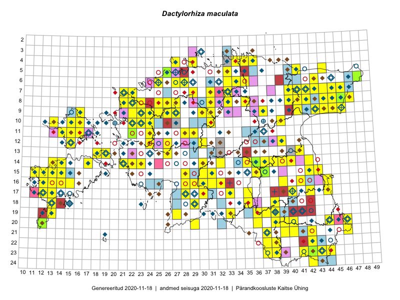

Dactylorhiza maculata — kuradi-sõrmkäpp
Orchidaceae :: Dactylorhiza maculata (L.) Soó (1493); Dactylorhiza maculata subsp. maculata (L.) Soó (44); Dactylorhiza maculata subsp. elodes (Griseb.) Soó (3)

Kaart põhineb 2205 kirjel:
vaatlusi 1380
herbaareksemplare 160
PKÜ kirjeid1 21
ELFi kirjeid2 430
LVA kirjeid3 78
EELISe kirjeid4 136
Taime kaasaegsed ja ajaloolised leiukohad asuvad 346 ruudus.
Tingmärgid ja leidudega ruutude arvud periooditi uues (u) ja 2005 andmestikus (v)
| █ | vahemik | u5 | v6 |
|---|---|---|---|
| █ | 2006–2020 | 248 | – |
| ◆/◇ | 1971–2005 | 228 | 214 |
| ○ | 1921–1970 | 59 | 72 |
| + | kuni 1920 | 13 | 0 |
| × | hävinud | – | 0 |
| ? | kaheldav | – | 0 |
| Ruut | Leidja(d) | Leiuaeg | Kirje |
|---|---|---|---|
| 15-43 | Peedu Saar | 2020-08-08 | ruut/ala: Dactylorhiza maculata (L.) Soó |
| 24-42 | Toomas Kukk, Eerik Leibak | 2020-08-06 | ruut/ala: Dactylorhiza maculata (L.) Soó |
| 23-42 | Toomas Kukk | 2020-08-06 | punkt: Dactylorhiza maculata (L.) Soó |
| 23-42;23-43 | Toomas Kukk | 2020-08-06 | ELF: 336 |
| 23-42 | Toomas Kukk | 2020-08-06 | ELF: 335 |
| 24-42 | Toomas Kukk | 2020-08-06 | ELF: 350 |
| 22-42 | Toomas Kukk | 2020-08-05 | ELF: 10455 |
| 10-23 | Peedu Saar | 2020-08-05 | ruut/ala: Dactylorhiza maculata (L.) Soó |
| 10-23 | Peedu Saar | 2020-08-05 | punkt: Dactylorhiza maculata (L.) Soó |
| 05-41 | Jaan Spiegel | 2020-08-05 | ELF: 24902 |
| 09-37 | Mari Reitalu | 2020-07-25 | ruut/ala: Dactylorhiza maculata (L.) Soó |
| 14-14 | Sirje Azarov, Mari Reitalu, Aira Alasi | 2020-07-23 | punkt: Dactylorhiza maculata (L.) Soó |
| 14-14 | Mari Reitalu, Sirje Azarov, Aira Alasi | 2020-07-23 | ruut/ala: Dactylorhiza maculata (L.) Soó |
| 08-25 | Ott Luuk | 2020-07-22–2020-07-23 | ruut/ala: Dactylorhiza maculata (L.) Soó |
| 05-35 | Triin Edovald, Marko Vainu | 2020-07-22 | LVA: 550834204 |
| 10-23 | Peedu Saar | 2020-07-22 | punkt: Dactylorhiza maculata (L.) Soó |
| 08-25 | Ott Luuk | 2020-07-22 | punkt: Dactylorhiza maculata (L.) Soó |
| 08-25 | Ott Luuk | 2020-07-22 | punkt: Dactylorhiza maculata (L.) Soó |
| 15-14 | Sirje Azarov, Mari Reitalu | 2020-07-21 | punkt: Dactylorhiza maculata (L.) Soó |
| 09-26 | Ott Luuk | 2020-07-21 | punkt: Dactylorhiza maculata (L.) Soó |
| 15-14 | Mari Reitalu, Sirje Azarov | 2020-07-21 | ruut/ala: Dactylorhiza maculata (L.) Soó |
| 04-34 | Jaan Spiegel | 2020-07-21 | ELF: 2325 |
| 05-36 | Jaan Spiegel | 2020-07-18 | ELF: 159 |
| 05-36 | Jaan Spiegel | 2020-07-18 | ELF: 158 |
| 08-26 | Eerik Leibak | 2020-07-16 | punkt: Dactylorhiza maculata (L.) Soó |
| 05-36 | Jaan Spiegel | 2020-07-15 | ELF: 11989 |
| 08-26 | Eerik Leibak | 2020-07-15 | ELF: 2751 |
| 08-23 | Thea Kull | 2020-07-07 | punkt: Dactylorhiza maculata (L.) Soó |
| 16-25 | Silvia Pihu | 2020-07-07 | ELF: 978 |
| 21-46 | Eerik Leibak | 2020-07-07 | ELF: 24852 |
| 10-23 | Kaili Kattai | 2020-07-06 | punkt: Dactylorhiza maculata (L.) Soó |
| 09-21 | Jekaterina Aida, Kaisa Alla | 2020-07-06 | EELIS: -1429855814 |
| 20-36 | Ulvi Selgis, Enn Selgis, Angelika Portsmuth, Hans Albert William Portsmuth | 2020-07-05 | punkt: Dactylorhiza maculata (L.) Soó |
| 20-36 | Ulvi Selgis, Angelika Portsmuth, Hans Albert William Portsmuth, Enn Selgis | 2020-07-05 | punkt: Dactylorhiza maculata (L.) Soó |
| 20-36 | Ulvi Selgis, Angelika Portsmuth, Hans Albert William Portsmuth, Enn Selgis | 2020-07-05 | punkt: Dactylorhiza maculata (L.) Soó |
| 20-36 | Ulvi Selgis, Angelika Portsmuth, Hans Albert William Portsmuth, Enn Selgis | 2020-07-05 | punkt: Dactylorhiza maculata (L.) Soó |
| 20-36 | Ulvi Selgis, Angelika Portsmuth, Hans Albert William Portsmuth, Enn Selgis | 2020-07-05 | punkt: Dactylorhiza maculata (L.) Soó |
| 20-36 | Ulvi Selgis, Angelika Portsmuth, Hans Albert William Portsmuth, Enn Selgis | 2020-07-05 | punkt: Dactylorhiza maculata (L.) Soó |
| 20-36 | Ulvi Selgis, Angelika Portsmuth, Hans Albert William Portsmuth, Enn Selgis | 2020-07-05 | punkt: Dactylorhiza maculata (L.) Soó |
| 20-36 | Ulvi Selgis, Angelika Portsmuth, Hans Albert William Portsmuth, Enn Selgis | 2020-07-05 | punkt: Dactylorhiza maculata (L.) Soó |
| 20-36 | Ulvi Selgis, Angelika Portsmuth, Hans Albert William Portsmuth, Enn Selgis | 2020-07-05 | punkt: Dactylorhiza maculata (L.) Soó |
| 20-36 | Ulvi Selgis, Angelika Portsmuth, Hans Albert William Portsmuth, Enn Selgis | 2020-07-05 | punkt: Dactylorhiza maculata (L.) Soó |
| 19-36 | Ulvi Selgis, Angelika Portsmuth, Hans Albert William Portsmuth, Enn Selgis | 2020-07-05 | punkt: Dactylorhiza maculata (L.) Soó |
| 20-36 | Merit Otsus, Ester Valdvee, Aare Laht, Tiiu-Maie Laht | 2020-07-05 | punkt: Dactylorhiza maculata (L.) Soó |
| 20-36 | Merit Otsus, Ester Valdvee, Aare Laht, Tiiu-Maie Laht | 2020-07-05 | punkt: Dactylorhiza maculata (L.) Soó |
| 20-36 | Merit Otsus, Ester Valdvee, Aare Laht, Tiiu-Maie Laht | 2020-07-05 | punkt: Dactylorhiza maculata (L.) Soó |
| 20-36 | Merit Otsus, Ester Valdvee, Aare Laht, Tiiu-Maie Laht | 2020-07-05 | punkt: Dactylorhiza maculata (L.) Soó |
| 20-36 | Merit Otsus, Ester Valdvee, Aare Laht, Tiiu-Maie Laht | 2020-07-05 | punkt: Dactylorhiza maculata (L.) Soó |
| 20-36 | Merit Otsus, Ester Valdvee, Aare Laht, Tiiu-Maie Laht | 2020-07-05 | punkt: Dactylorhiza maculata (L.) Soó |
| 20-36 | Merit Otsus, Ester Valdvee, Aare Laht, Tiiu-Maie Laht | 2020-07-05 | punkt: Dactylorhiza maculata (L.) Soó |
| 20-36 | Merit Otsus, Ester Valdvee, Aare Laht, Tiiu-Maie Laht | 2020-07-05 | punkt: Dactylorhiza maculata (L.) Soó |
| 20-36 | Merit Otsus, Ester Valdvee, Aare Laht, Tiiu-Maie Laht | 2020-07-05 | punkt: Dactylorhiza maculata (L.) Soó |
| 20-36 | Merit Otsus, Ester Valdvee, Aare Laht, Tiiu-Maie Laht | 2020-07-05 | punkt: Dactylorhiza maculata (L.) Soó |
| 20-36 | Merit Otsus, Ester Valdvee, Aare Laht, Tiiu-Maie Laht | 2020-07-05 | punkt: Dactylorhiza maculata (L.) Soó |
| 20-36 | Merit Otsus, Ester Valdvee, Aare Laht, Tiiu-Maie Laht | 2020-07-05 | punkt: Dactylorhiza maculata (L.) Soó |
| 20-36 | Merit Otsus, Ester Valdvee, Aare Laht, Tiiu-Maie Laht | 2020-07-05 | punkt: Dactylorhiza maculata (L.) Soó |
| 20-36 | Merit Otsus, Ester Valdvee, Aare Laht, Tiiu-Maie Laht | 2020-07-05 | punkt: Dactylorhiza maculata (L.) Soó |
| 20-36 | Merit Otsus, Ester Valdvee, Aare Laht, Tiiu-Maie Laht | 2020-07-05 | punkt: Dactylorhiza maculata (L.) Soó |
| 20-36 | Merit Otsus, Ester Valdvee, Aare Laht, Tiiu-Maie Laht | 2020-07-05 | punkt: Dactylorhiza maculata (L.) Soó |
| 20-36 | Merit Otsus, Ester Valdvee, Aare Laht, Tiiu-Maie Laht | 2020-07-05 | punkt: Dactylorhiza maculata (L.) Soó |
| 20-36 | Merit Otsus, Ester Valdvee, Aare Laht, Tiiu-Maie Laht | 2020-07-05 | punkt: Dactylorhiza maculata (L.) Soó |
| 20-36 | Merit Otsus, Ester Valdvee, Aare Laht, Tiiu-Maie Laht | 2020-07-05 | punkt: Dactylorhiza maculata (L.) Soó |
| 20-36 | Merit Otsus, Ester Valdvee, Aare Laht, Tiiu-Maie Laht | 2020-07-05 | punkt: Dactylorhiza maculata (L.) Soó |
| 20-36 | Merit Otsus, Ester Valdvee, Aare Laht, Tiiu-Maie Laht | 2020-07-05 | punkt: Dactylorhiza maculata (L.) Soó |
| 20-36 | Merit Otsus, Ester Valdvee, Aare Laht, Tiiu-Maie Laht | 2020-07-05 | punkt: Dactylorhiza maculata (L.) Soó |
| 20-36 | Merit Otsus, Ester Valdvee, Aare Laht, Tiiu-Maie Laht | 2020-07-05 | punkt: Dactylorhiza maculata (L.) Soó |
| 20-36 | Merit Otsus, Ester Valdvee, Aare Laht, Tiiu-Maie Laht | 2020-07-05 | punkt: Dactylorhiza maculata (L.) Soó |
| 19-38 | Mari Reitalu, Riine Latserus, Sirje Azarov | 2020-07-05 | punkt: Dactylorhiza maculata (L.) Soó |
| 20-39 | Ilmar Uibopuu | 2020-07-05 | LVA: -1453088540 |
| 19-37 | Sirje Azarov, Mari Reitalu, Riine Latserus | 2020-07-04 | punkt: Dactylorhiza maculata (L.) Soó |
| 19-37 | Mari Reitalu, Riine Latserus, Sirje Azarov | 2020-07-04 | punkt: Dactylorhiza maculata (L.) Soó |
| 19-37 | Mari Reitalu, Riine Latserus, Sirje Azarov | 2020-07-04 | punkt: Dactylorhiza maculata (L.) Soó |
| 19-37 | Mari Reitalu, Riine Latserus, Sirje Azarov | 2020-07-04 | punkt: Dactylorhiza maculata (L.) Soó |
| 19-38 | Jekaterina Aida, Kaisa Alla, Reet Ohna, Arto-Randel Servet, Tarmo Niitla | 2020-07-04 | punkt: Dactylorhiza maculata (L.) Soó |
| 19-38 | Jekaterina Aida, Kaisa Alla, Reet Ohna, Arto-Randel Servet, Tarmo Niitla | 2020-07-04 | punkt: Dactylorhiza maculata (L.) Soó |
| 19-38 | Jekaterina Aida, Kaisa Alla, Reet Ohna, Arto-Randel Servet, Tarmo Niitla | 2020-07-04 | punkt: Dactylorhiza maculata (L.) Soó |
| 19-38 | Jekaterina Aida, Kaisa Alla, Reet Ohna, Arto-Randel Servet, Tarmo Niitla | 2020-07-04 | punkt: Dactylorhiza maculata (L.) Soó |
| 19-38 | Jekaterina Aida, Kaisa Alla, Reet Ohna, Arto-Randel Servet, Tarmo Niitla | 2020-07-04 | punkt: Dactylorhiza maculata (L.) Soó |
| 19-38 | Jekaterina Aida, Kaisa Alla, Reet Ohna, Arto-Randel Servet, Tarmo Niitla | 2020-07-04 | punkt: Dactylorhiza maculata (L.) Soó |
| 19-38 | Jekaterina Aida, Kaisa Alla, Reet Ohna, Arto-Randel Servet | 2020-07-04 | punkt: Dactylorhiza maculata (L.) Soó |
| 19-38 | Jekaterina Aida, Kaisa Alla, Reet Ohna, Arto-Randel Servet | 2020-07-04 | punkt: Dactylorhiza maculata (L.) Soó |
| 19-38 | Jekaterina Aida, Kaisa Alla, Reet Ohna, Arto-Randel Servet | 2020-07-04 | punkt: Dactylorhiza maculata (L.) Soó |
| 19-38 | Jekaterina Aida, Kaisa Alla, Reet Ohna, Arto-Randel Servet | 2020-07-04 | punkt: Dactylorhiza maculata (L.) Soó |
| 19-39 | Jaanus Paal, Taimi Paal | 2020-07-04 | ELF: 9981 |
| 19-39 | Jaanus Paal, Taimi Paal | 2020-07-04 | ELF: 556 |
| 17-11 | Ott Luuk, Rein Kalamees | 2020-07-02 | PKÜ: 21182 |
| 07-33 | Anneli Palo | 2020-07-02 | LVA: 1309462190 |
| 09-23 | Thea Kull | 2020-06-28 | punkt: Dactylorhiza maculata (L.) Soó |
| 08-23 | Thea Kull | 2020-06-28 | punkt: Dactylorhiza maculata (L.) Soó |
| 08-23 | Thea Kull | 2020-06-28 | punkt: Dactylorhiza maculata (L.) Soó |
| 09-23 | Thea Kull | 2020-06-28 | punkt: Dactylorhiza maculata (L.) Soó |
| 08-23 | Thea Kull | 2020-06-28 | punkt: Dactylorhiza maculata (L.) Soó |
| 08-23 | Thea Kull | 2020-06-28 | punkt: Dactylorhiza maculata (L.) Soó |
| 08-23 | Thea Kull | 2020-06-28 | punkt: Dactylorhiza maculata (L.) Soó |
| 04-27 | Ulvi Selgis, Enn Selgis | 2020-06-27 | punkt: Dactylorhiza maculata (L.) Soó |
| 16-14 | Triin Reitalu | 2020-06-26 | punkt: Dactylorhiza maculata (L.) Soó |
| 10-24 | Thea Kull | 2020-06-26 | punkt: Dactylorhiza maculata (L.) Soó |
| 17-12 | Ants Animägi | 2020-06-26 | LVA: -1262606524 |
| 20-39 | Avo Veermäe | 2020-06-23 | LVA: -1155471122 |
| 15-31 | Enn Selgis | 2020-06-18 | LVA: 78138206 |
| 05-26 | Karoli Niilus | 2020-06-11 | LVA: 434975498 |
| 09-41 | Timo Luhamäe, Peedu Saar | 2019-09-10 | punkt: Dactylorhiza maculata (L.) Soó |
| 09-41 | Peedu Saar, Timo Luhamäe | 2019-09-10 | ruut/ala: Dactylorhiza maculata (L.) Soó |
| 15-31 | Timo Luhamäe, Meeli Mesipuu | 2019-08-28 | punkt: Dactylorhiza maculata (L.) Soó |
| 15-31 | Meeli Mesipuu, Timo Luhamäe | 2019-08-28 | ruut/ala: Dactylorhiza maculata (L.) Soó |
| 15-30 | Meeli Mesipuu, Timo Luhamäe | 2019-08-28 | punkt: Dactylorhiza maculata (L.) Soó |
| 15-30 | Meeli Mesipuu, Timo Luhamäe | 2019-08-28 | ELF: 21515 |
| 04-34 | Toomas Kukk, Rein Kalamees | 2019-08-06 | punkt: Dactylorhiza maculata (L.) Soó |
| 04-34 | Toomas Kukk, Rein Kalamees | 2019-08-06 | punkt: Dactylorhiza maculata (L.) Soó |
| 10-24 | Tõnu Ploompuu | 2019-08-03 | ELF: 7773 |
| 19-41 | Avo Veermäe | 2019-08-01 | LVA: -1474336470 |
| 19-41 | Avo Veermäe | 2019-08-01 | LVA: 1215435566 |
| 19-41 | Avo Veermäe | 2019-08-01 | LVA: 154703516 |
| 19-41 | Avo Veermäe | 2019-08-01 | LVA: -158061104 |
| 09-31 | Toivo Sepp | 2019-07-25 | ELF: 15855 |
| 07-21 | Peedu Saar | 2019-07-25 | ruut/ala: Dactylorhiza maculata (L.) Soó |
| 07-21 | Peedu Saar | 2019-07-25 | ELF: 24817 |
| 07-22 | Peedu Saar | 2019-07-24 | ruut/ala: Dactylorhiza maculata (L.) Soó |
| 07-22 | Peedu Saar | 2019-07-24 | ELF: 20014 |
| 08-22 | Peedu Saar | 2019-07-23 | punkt: Dactylorhiza maculata (L.) Soó |
| 08-22 | Peedu Saar | 2019-07-23 | ELF: 187 |
| 11-29 | Ott Luuk, Toivo Sepp | 2019-07-23 | punkt: Dactylorhiza maculata (L.) Soó |
| 16-12 | Mari Reitalu | 2019-07-23 | ELF: 734 |
| 10-24;11-24 | Tõnu Ploompuu, Eliko Kõiv | 2019-07-20 | ELF: 7789 |
| 13-32 | Eerik Leibak | 2019-07-20 | ELF: 1184 |
| 05-35 | Aili Ohlau | 2019-07-16 | LVA: -1723228196 |
| 08-27;09-27 | Eerik Leibak | 2019-07-15 | ELF: 881 |
| 23-42 | Sirje Azarov, Jekaterina Aida, Riine Latserus, Ülle Jõgar, Hele Tulviste, Aiki Tibar | 2019-07-14 | punkt: Dactylorhiza maculata (L.) Soó |
| 19-38 | Thea Kull | 2019-07-11 | punkt: Dactylorhiza maculata (L.) Soó |
| 19-13 | Sirje Azarov, Mari Reitalu | 2019-07-11 | punkt: Dactylorhiza maculata (L.) Soó |
| 19-13 | Mari Reitalu, Sirje Azarov | 2019-07-11 | ruut/ala: Dactylorhiza maculata (L.) Soó |
| 19-13 | Mari Reitalu, Sirje Azarov | 2019-07-11 | ELF: 16770 |
| 20-46 | Tiit Hallikma, Ott Luuk | 2019-07-10 | punkt: Dactylorhiza maculata (L.) Soó |
| 20-46 | Ott Luuk, Tiit Hallikma | 2019-07-10 | ruut/ala: Dactylorhiza maculata (L.) Soó |
| 20-44 | Ott Luuk, Tiit Hallikma | 2019-07-09 | punkt: Dactylorhiza maculata (L.) Soó |
| 20-44 | Ott Luuk, Tiit Hallikma | 2019-07-09 | ruut/ala: Dactylorhiza maculata (L.) Soó |
| 11-36 | Jaanus Paal | 2019-07-09 | ELF: 12126 |
| 11-36 | Jaanus Paal, Elo Raspel | 2019-07-05 | ELF: 24710 |
| 12-15 | Toomas Kukk, Eerik Leibak | 2019-07-04 | ELF: 608 |
| 10-13 | Toomas Kukk | 2019-07-04 | ruut/ala: Dactylorhiza maculata (L.) Soó |
| 09-37 | Jaanus Paal | 2019-07-04 | ELF: 17560 |
| 12-15 | Eerik Leibak, Toomas Kukk | 2019-07-04 | ruut/ala: Dactylorhiza maculata (L.) Soó |
| 10-15 | Toomas Kukk | 2019-07-03 | ruut/ala: Dactylorhiza maculata (L.) Soó |
| 10-16 | Toomas Kukk | 2019-07-03 | punkt: Dactylorhiza maculata (L.) Soó |
| 10-15;10-16 | Toomas Kukk | 2019-07-03 | ELF: 24692 |
| 20-12 | Sirje Azarov, Mari Reitalu | 2019-07-03 | ELF: 2827 |
| 20-12 | Sirje Azarov, Mari Reitalu | 2019-07-03 | ELF: 13383 |
| 11-36 | Jaanus Paal, Elo Raspel, Kristiina Miško | 2019-07-03 | ELF: 2021 |
| 11-14 | Toomas Kukk | 2019-07-02 | punkt: Dactylorhiza maculata (L.) Soó |
| 11-14 | Toomas Kukk | 2019-07-02 | ELF: 615 |
| 11-16 | Eerik Leibak | 2019-07-02 | ELF: 18820 |
| 18-29 | Värdi Soomann | 2019-07-01 | LVA: 2090130584 |
| 17-12 | Mari Reitalu | 2019-07-01 | ELF: 4696 |
| 14-35 | Tiit Jürisson | 2019-06-29–2019-06-30 | punkt: Dactylorhiza maculata subsp. maculata (L.) Soó |
| 18-29 | Värdi Soomann | 2019-06-29 | LVA: 816785140 |
| 13-40 | Enn Selgis | 2019-06-29 | LVA: -813409984 |
| 15-11 | Mari Reitalu | 2019-06-27 | ELF: 129 |
| 17-39 | Avo Veermäe | 2019-06-26 | LVA: 26938292 |
| 18-29 | Värdi Soomann | 2019-06-24 | LVA: -903635730 |
| 22-41 | Anneli Palo | 2019-06-24 | LVA: -1001049988 |
| 09-45;09-46 | Ants Animägi | 2019-06-19 | LVA: -1623832212 |
| 08-42 | Villu Soon | 2019-06-18 | punkt: Dactylorhiza maculata (L.) Soó |
| 09-43 | Veronika Plotnikova, Anne-Ly Fersel | 2019-06-14 | punkt: Dactylorhiza maculata (L.) Soó |
| 04-36 | Tiina Reintal | 2019-06-14 | punkt: Dactylorhiza maculata (L.) Soó |
| 05-33 | Ott Luuk | 2019-06-11 | punkt: Dactylorhiza maculata (L.) Soó |
| 08-22;09-22;09-23 | Tõnu Ploompuu, Laura Paju, Helen Valts, Marko Vainu | 2018-09-06 | ELF: 325 |
| 19-39 | Toomas Hirse | 2018-08-28 | ELF: 10939 |
| 13-19 | Sirje Azarov, Mari Reitalu | 2018-08-07 | punkt: Dactylorhiza maculata (L.) Soó |
| 13-19 | Mari Reitalu, Sirje Azarov | 2018-08-07 | ELF: 1421 |
| 17-12 | Triin Reitalu, Mari Lepik | 2018-08-06 | punkt: Dactylorhiza maculata (L.) Soó |
| 16-12 | Triin Reitalu, Mari Reitalu | 2018-08-03 | punkt: Dactylorhiza maculata (L.) Soó |
| 05-27 | Tõnu Ploompuu | 2018-07-24 | EELIS: 294063642 |
| 20-12 | Mari Reitalu, Sirje Azarov | 2018-07-23 | ELF: 942 |
| 09-45 | Peedu Saar | 2018-07-19 | ruut/ala: Dactylorhiza maculata (L.) Soó |
| 23-42 | Toomas Kukk | 2018-07-18 | punkt: Dactylorhiza maculata (L.) Soó |
| 23-42 | Toomas Kukk | 2018-07-18 | ELF: 14474 |
| 07-46 | Peedu Saar | 2018-07-18 | punkt: Dactylorhiza maculata (L.) Soó |
| 07-46 | Peedu Saar | 2018-07-18 | ruut/ala: Dactylorhiza maculata (L.) Soó |
| 07-46 | Peedu Saar | 2018-07-18 | ELF: 2831 |
| 07-46 | Peedu Saar | 2018-07-18 | ELF: 24647 |
| 08-45 | Peedu Saar | 2018-07-17–2018-07-18 | ruut/ala: Dactylorhiza maculata (L.) Soó |
| 07-42 | Uudo Timm | 2018-07-17 | LVA: -784150074 |
| 09-43 | Toomas Kukk | 2018-07-17 | punkt: Dactylorhiza maculata (L.) Soó |
| 09-43 | Toomas Kukk | 2018-07-17 | punkt: Dactylorhiza maculata (L.) Soó |
| 09-43 | Toomas Kukk | 2018-07-17 | punkt: Dactylorhiza maculata (L.) Soó |
| 09-44 | Toomas Kukk | 2018-07-17 | punkt: Dactylorhiza maculata (L.) Soó |
| 09-44 | Toomas Kukk | 2018-07-17 | punkt: Dactylorhiza maculata (L.) Soó |
| 09-43 | Toomas Kukk | 2018-07-17 | ELF: 781 |
| 09-43 | Toomas Kukk | 2018-07-17 | ELF: 787 |
| 09-43;09-44 | Toomas Kukk | 2018-07-17 | ELF: 24009 |
| 09-44 | Toomas Kukk | 2018-07-17 | ELF: 24644 |
| 09-44 | Toomas Kukk | 2018-07-17 | ELF: 24645 |
| 08-45 | Peedu Saar | 2018-07-17 | ELF: 922 |
| 08-45 | Peedu Saar | 2018-07-17 | ELF: 24440 |
| 04-34 | Alar Soppe | 2018-07-17 | ELF: 13768 |
| 09-26 | Thea Kull | 2018-07-14 | punkt: Dactylorhiza maculata (L.) Soó |
| 15-12 | Triin Reitalu, Ansis Blaus | 2018-07-12 | punkt: Dactylorhiza maculata (L.) Soó |
| 17-12;17-13 | Mari Reitalu, Sirje Azarov | 2018-07-12 | ELF: 709 |
| 20-12 | Mari Reitalu, Sirje Azarov | 2018-07-12 | ELF: 935 |
| 15-13 | Triin Reitalu, Ansis Blaus | 2018-07-11 | punkt: Dactylorhiza maculata (L.) Soó |
| 15-13 | Triin Reitalu, Ansis Blaus | 2018-07-11 | punkt: Dactylorhiza maculata (L.) Soó |
| 11-15 | Peedu Saar | 2018-07-11 | ruut/ala: Dactylorhiza maculata (L.) Soó |
| 11-16 | Peedu Saar | 2018-07-11 | punkt: Dactylorhiza maculata (L.) Soó |
| 11-16 | Peedu Saar | 2018-07-11 | ruut/ala: Dactylorhiza maculata (L.) Soó |
| 06-31 | Eerik Leibak | 2018-07-11 | ELF: 298 |
| 14-13 | Triin Reitalu, Ansis Blaus | 2018-07-10 | punkt: Dactylorhiza maculata (L.) Soó |
| 16-12;17-12 | Mari Reitalu, Sirje Azarov | 2018-07-10 | ELF: 1659 |
| 20-12 | Mari Reitalu, Sirje Azarov | 2018-07-10 | ELF: 13405 |
| 14-14 | Triin Reitalu, Ansis Blaus | 2018-07-09 | punkt: Dactylorhiza maculata (L.) Soó |
| 14-14 | Triin Reitalu, Ansis Blaus | 2018-07-09 | punkt: Dactylorhiza maculata (L.) Soó |
| 05-36 | Alar Soppe | 2018-07-09 | ELF: 11988 |
| 16-12 | Mari Reitalu | 2018-07-08 | punkt: Dactylorhiza maculata (L.) Soó |
| 08-27 | Sirje Azarov, Arto-Randel Servet, Jekaterina Aida, Mari Reitalu | 2018-07-01 | punkt: Dactylorhiza maculata (L.) Soó |
| 08-27 | Mari Reitalu, Sirje Azarov | 2018-07-01 | ruut/ala: Dactylorhiza maculata (L.) Soó |
| 09-27 | Mari Reitalu, Sirje Azarov | 2018-07-01 | ruut/ala: Dactylorhiza maculata (L.) Soó |
| 10-24 | Ingridh Oks | 2018-07-01 | LVA: -330901482 |
| 18-38 | Avo Veermäe | 2018-07-01 | LVA: 1133349222 |
| 10-24 | Jüri Kaljundi | 2018-06-30 | LVA: 207377326 |
| 23-38 | Eerik Leibak | 2018-06-28 | punkt: Dactylorhiza maculata (L.) Soó |
| 06-47 | Alar Soppe | 2018-06-28 | ELF: 844 |
| 05-40 | Alar Soppe | 2018-06-28 | ELF: 2784 |
| 06-40 | Alar Soppe | 2018-06-28 | ELF: 24444 |
| 06-40 | Alar Soppe | 2018-06-28 | ELF: 24524 |
| 17-30 | Ulvi Selgis | 2018-06-24 | LVA: 201416332 |
| 13-41 | Enn Selgis | 2018-06-23 | LVA: 1522875660 |
| 08-31 | Thea Kull | 2018-06-20 | punkt: Dactylorhiza maculata (L.) Soó |
| 09-37 | Margit Tennokene | 2018-06-20 | LVA: -1242195286 |
| 19-40 | Avo Veermäe | 2018-06-20 | LVA: -1692153236 |
| 17-38 | Taive Särg | 2018-06-16 | LVA: -379120460 |
| 17-30 | Indrek Tammekänd | 2018-06-06 | ruut/ala: Dactylorhiza maculata subsp. maculata (L.) Soó |
| 16-31 | Indrek Tammekänd | 2018-06-04–2018-06-05 | ruut/ala: Dactylorhiza maculata subsp. maculata (L.) Soó |
| 14-35 | Peedu Saar, Susanna Vain | 2017-08-28 | punkt: Dactylorhiza maculata (L.) Soó |
| 14-35 | Meeli Mesipuu, Ott Luuk, Helen Toom | 2017-08-28 | ruut/ala: Dactylorhiza maculata (L.) Soó |
| 14-35 | Meeli Mesipuu, Ott Luuk, Helen Toom | 2017-08-28 | punkt: Dactylorhiza maculata (L.) Soó |
| 14-35 | Meeli Mesipuu, Ott Luuk, Helen Toom | 2017-08-28 | punkt: Dactylorhiza maculata (L.) Soó |
| 14-35 | Meeli Mesipuu, Ott Luuk, Helen Toom | 2017-08-28 | punkt: Dactylorhiza maculata (L.) Soó |
| 14-35 | Meeli Mesipuu, Ott Luuk, Helen Toom | 2017-08-28 | punkt: Dactylorhiza maculata (L.) Soó |
| 14-35 | Meeli Mesipuu, Ott Luuk, Helen Toom | 2017-08-28 | punkt: Dactylorhiza maculata (L.) Soó |
| 14-35 | Meeli Mesipuu, Ott Luuk, Helen Toom | 2017-08-28 | punkt: Dactylorhiza maculata (L.) Soó |
| 14-35 | Meeli Mesipuu, Ott Luuk, Helen Toom | 2017-08-28 | punkt: Dactylorhiza maculata (L.) Soó |
| 14-35 | Meeli Mesipuu, Ott Luuk, Helen Toom | 2017-08-28 | punkt: Dactylorhiza maculata (L.) Soó |
| 14-35 | Meeli Mesipuu, Ott Luuk, Helen Toom | 2017-08-28 | punkt: Dactylorhiza maculata (L.) Soó |
| 14-35 | Meeli Mesipuu, Ott Luuk, Helen Toom | 2017-08-28 | punkt: Dactylorhiza maculata (L.) Soó |
| 14-35 | Meeli Mesipuu, Ott Luuk, Helen Toom | 2017-08-28 | punkt: Dactylorhiza maculata (L.) Soó |
| 14-35 | Meeli Mesipuu | 2017-08-28 | punkt: Dactylorhiza maculata (L.) Soó |
| 14-35 | Meeli Mesipuu | 2017-08-28 | punkt: Dactylorhiza maculata (L.) Soó |
| 14-35 | Meeli Mesipuu | 2017-08-28 | punkt: Dactylorhiza maculata (L.) Soó |
| 14-35 | Meeli Mesipuu | 2017-08-28 | punkt: Dactylorhiza maculata (L.) Soó |
| 14-35 | Meeli Mesipuu | 2017-08-28 | punkt: Dactylorhiza maculata (L.) Soó |
| 14-35 | Meeli Mesipuu | 2017-08-28 | punkt: Dactylorhiza maculata (L.) Soó |
| 14-35 | Meeli Mesipuu | 2017-08-28 | punkt: Dactylorhiza maculata (L.) Soó |
| 14-35 | Meeli Mesipuu | 2017-08-28 | punkt: Dactylorhiza maculata (L.) Soó |
| 14-35 | Meeli Mesipuu | 2017-08-28 | punkt: Dactylorhiza maculata (L.) Soó |
| 14-35 | Meeli Mesipuu | 2017-08-28 | punkt: Dactylorhiza maculata (L.) Soó |
| 14-35 | Meeli Mesipuu | 2017-08-28 | punkt: Dactylorhiza maculata (L.) Soó |
| 14-35 | Meeli Mesipuu | 2017-08-28 | punkt: Dactylorhiza maculata (L.) Soó |
| 14-35 | Meeli Mesipuu | 2017-08-28 | punkt: Dactylorhiza maculata (L.) Soó |
| 14-35 | Meeli Mesipuu | 2017-08-28 | punkt: Dactylorhiza maculata (L.) Soó |
| 14-35 | Meeli Mesipuu | 2017-08-28 | punkt: Dactylorhiza maculata (L.) Soó |
| 14-35 | Meeli Mesipuu | 2017-08-28 | punkt: Dactylorhiza maculata (L.) Soó |
| 14-35 | Meeli Mesipuu | 2017-08-28 | punkt: Dactylorhiza maculata (L.) Soó |
| 14-35 | Meeli Mesipuu | 2017-08-28 | punkt: Dactylorhiza maculata (L.) Soó |
| 14-35 | Meeli Mesipuu | 2017-08-28 | punkt: Dactylorhiza maculata (L.) Soó |
| 14-35 | Meeli Mesipuu | 2017-08-28 | punkt: Dactylorhiza maculata (L.) Soó |
| 14-35 | Meeli Mesipuu | 2017-08-28 | punkt: Dactylorhiza maculata (L.) Soó |
| 14-35 | Meeli Mesipuu | 2017-08-28 | punkt: Dactylorhiza maculata (L.) Soó |
| 14-35 | Meeli Mesipuu | 2017-08-28 | punkt: Dactylorhiza maculata (L.) Soó |
| 14-35 | Meeli Mesipuu | 2017-08-28 | punkt: Dactylorhiza maculata (L.) Soó |
| 14-35 | Meeli Mesipuu | 2017-08-28 | punkt: Dactylorhiza maculata (L.) Soó |
| 14-35 | Meeli Mesipuu | 2017-08-28 | punkt: Dactylorhiza maculata (L.) Soó |
| 14-35 | Meeli Mesipuu | 2017-08-28 | punkt: Dactylorhiza maculata (L.) Soó |
| 14-35 | Meeli Mesipuu | 2017-08-28 | punkt: Dactylorhiza maculata (L.) Soó |
| 14-35 | Helen Toom, Meeli Mesipuu | 2017-08-28 | punkt: Dactylorhiza maculata (L.) Soó |
| 14-35 | Helen Toom, Meeli Mesipuu | 2017-08-28 | punkt: Dactylorhiza maculata (L.) Soó |
| 14-35 | Helen Toom, Meeli Mesipuu | 2017-08-28 | punkt: Dactylorhiza maculata (L.) Soó |
| 14-35 | Helen Toom, Meeli Mesipuu | 2017-08-28 | punkt: Dactylorhiza maculata (L.) Soó |
| 14-35 | Helen Toom, Meeli Mesipuu | 2017-08-28 | punkt: Dactylorhiza maculata (L.) Soó |
| 14-35 | Helen Toom, Meeli Mesipuu | 2017-08-28 | punkt: Dactylorhiza maculata (L.) Soó |
| 14-35 | Helen Toom, Meeli Mesipuu | 2017-08-28 | punkt: Dactylorhiza maculata (L.) Soó |
| 14-35 | Helen Toom, Meeli Mesipuu | 2017-08-28 | punkt: Dactylorhiza maculata (L.) Soó |
| 14-35 | Helen Toom, Meeli Mesipuu | 2017-08-28 | punkt: Dactylorhiza maculata (L.) Soó |
| 14-35 | Helen Toom, Meeli Mesipuu | 2017-08-28 | punkt: Dactylorhiza maculata (L.) Soó |
| 14-35 | Helen Toom, Meeli Mesipuu | 2017-08-28 | punkt: Dactylorhiza maculata (L.) Soó |
| 15-37 | Peedu Saar, Susanna Vain | 2017-08-22 | punkt: Dactylorhiza maculata (L.) Soó |
| 15-37 | Peedu Saar, Susanna Vain | 2017-08-22 | punkt: Dactylorhiza maculata (L.) Soó |
| 15-37 | Peedu Saar, Susanna Vain | 2017-08-22 | punkt: Dactylorhiza maculata (L.) Soó |
| 15-37 | Peedu Saar, Susanna Vain | 2017-08-22 | punkt: Dactylorhiza maculata (L.) Soó |
| 15-37 | Peedu Saar, Susanna Vain | 2017-08-22 | punkt: Dactylorhiza maculata (L.) Soó |
| 15-37 | Peedu Saar, Susanna Vain | 2017-08-22 | punkt: Dactylorhiza maculata (L.) Soó |
| 15-37 | Peedu Saar, Susanna Vain | 2017-08-22 | punkt: Dactylorhiza maculata (L.) Soó |
| 15-37 | Peedu Saar, Susanna Vain | 2017-08-22 | punkt: Dactylorhiza maculata (L.) Soó |
| 15-37 | Peedu Saar, Susanna Vain | 2017-08-22 | punkt: Dactylorhiza maculata (L.) Soó |
| 15-37 | Peedu Saar, Susanna Vain | 2017-08-22 | punkt: Dactylorhiza maculata (L.) Soó |
| 15-37 | Peedu Saar, Susanna Vain | 2017-08-22 | punkt: Dactylorhiza maculata (L.) Soó |
| 15-37 | Peedu Saar, Susanna Vain | 2017-08-22 | punkt: Dactylorhiza maculata (L.) Soó |
| 15-37 | Peedu Saar, Susanna Vain | 2017-08-22 | punkt: Dactylorhiza maculata (L.) Soó |
| 15-37 | Peedu Saar, Susanna Vain | 2017-08-22 | punkt: Dactylorhiza maculata (L.) Soó |
| 15-37 | Meeli Mesipuu | 2017-08-22 | punkt: Dactylorhiza maculata subsp. maculata (L.) Soó |
| 15-37 | Meeli Mesipuu | 2017-08-22 | punkt: Dactylorhiza maculata (L.) Soó |
| 15-37 | Meeli Mesipuu | 2017-08-22 | punkt: Dactylorhiza maculata (L.) Soó |
| 15-37 | Meeli Mesipuu | 2017-08-22 | punkt: Dactylorhiza maculata (L.) Soó |
| 15-37 | Meeli Mesipuu | 2017-08-22 | punkt: Dactylorhiza maculata (L.) Soó |
| 15-37 | Meeli Mesipuu | 2017-08-22 | punkt: Dactylorhiza maculata (L.) Soó |
| 15-37 | Meeli Mesipuu | 2017-08-22 | punkt: Dactylorhiza maculata (L.) Soó |
| 15-37 | Meeli Mesipuu | 2017-08-22 | punkt: Dactylorhiza maculata (L.) Soó |
| 15-37 | Meeli Mesipuu | 2017-08-22 | punkt: Dactylorhiza maculata (L.) Soó |
| 15-37 | Meeli Mesipuu | 2017-08-22 | punkt: Dactylorhiza maculata (L.) Soó |
| 15-37 | Meeli Mesipuu | 2017-08-22 | TAA0145120: Dactylorhiza maculata (L.) Soó |
| 12-25 | Taimo Türnpu | 2017-08-21 | EELIS: -429261308 |
| 05-27 | Tõnu Ploompuu | 2017-08-17 | EELIS: 291801124 |
| 05-27 | Tõnu Ploompuu | 2017-08-17 | EELIS: 1062643060 |
| 14-35 | Peedu Saar | 2017-08-16 | punkt: Dactylorhiza maculata (L.) Soó |
| 14-35 | Peedu Saar | 2017-08-16 | punkt: Dactylorhiza maculata (L.) Soó |
| 14-35 | Peedu Saar | 2017-08-16 | punkt: Dactylorhiza maculata (L.) Soó |
| 14-35 | Ott Luuk | 2017-08-16 | punkt: Dactylorhiza maculata (L.) Soó |
| 14-35 | Ott Luuk | 2017-08-16 | punkt: Dactylorhiza maculata (L.) Soó |
| 14-35 | Ott Luuk | 2017-08-16 | punkt: Dactylorhiza maculata (L.) Soó |
| 14-35 | Ott Luuk | 2017-08-16 | punkt: Dactylorhiza maculata (L.) Soó |
| 14-35 | Ott Luuk | 2017-08-16 | punkt: Dactylorhiza maculata (L.) Soó |
| 14-35 | Ott Luuk | 2017-08-16 | punkt: Dactylorhiza maculata (L.) Soó |
| 14-35 | Ott Luuk | 2017-08-16 | punkt: Dactylorhiza maculata (L.) Soó |
| 14-35 | Ott Luuk | 2017-08-16 | punkt: Dactylorhiza maculata (L.) Soó |
| 14-35 | Ott Luuk | 2017-08-16 | punkt: Dactylorhiza maculata (L.) Soó |
| 14-35 | Ott Luuk | 2017-08-16 | punkt: Dactylorhiza maculata (L.) Soó |
| 14-35 | Ott Luuk | 2017-08-16 | punkt: Dactylorhiza maculata (L.) Soó |
| 14-36 | Indrek Tammekänd | 2017-08-16 | punkt: Dactylorhiza maculata (L.) Soó |
| 14-36 | Indrek Tammekänd | 2017-08-16 | punkt: Dactylorhiza maculata (L.) Soó |
| 14-36 | Indrek Tammekänd | 2017-08-16 | punkt: Dactylorhiza maculata (L.) Soó |
| 14-36 | Indrek Tammekänd | 2017-08-16 | punkt: Dactylorhiza maculata (L.) Soó |
| 14-36 | Indrek Tammekänd | 2017-08-16 | punkt: Dactylorhiza maculata (L.) Soó |
| 14-36 | Indrek Tammekänd | 2017-08-16 | punkt: Dactylorhiza maculata (L.) Soó |
| 14-36 | Indrek Tammekänd | 2017-08-16 | punkt: Dactylorhiza maculata (L.) Soó |
| 14-36 | Indrek Tammekänd | 2017-08-16 | punkt: Dactylorhiza maculata (L.) Soó |
| 14-36 | Indrek Tammekänd | 2017-08-16 | punkt: Dactylorhiza maculata (L.) Soó |
| 14-36 | Indrek Tammekänd | 2017-08-16 | punkt: Dactylorhiza maculata (L.) Soó |
| 14-36 | Indrek Tammekänd | 2017-08-16 | punkt: Dactylorhiza maculata (L.) Soó |
| 14-36 | Indrek Tammekänd | 2017-08-16 | punkt: Dactylorhiza maculata (L.) Soó |
| 14-36 | Indrek Tammekänd | 2017-08-16 | punkt: Dactylorhiza maculata (L.) Soó |
| 14-36 | Indrek Tammekänd | 2017-08-16 | punkt: Dactylorhiza maculata (L.) Soó |
| 14-36 | Indrek Tammekänd | 2017-08-16 | TAA0143475: Dactylorhiza maculata (L.) Soó |
| 14-36 | Ott Luuk | 2017-08-15 | punkt: Dactylorhiza maculata (L.) Soó |
| 14-36 | Ott Luuk | 2017-08-15 | punkt: Dactylorhiza maculata (L.) Soó |
| 14-36 | Ott Luuk | 2017-08-15 | punkt: Dactylorhiza maculata (L.) Soó |
| 14-36 | Ott Luuk | 2017-08-15 | punkt: Dactylorhiza maculata (L.) Soó |
| 14-36 | Ott Luuk | 2017-08-15 | punkt: Dactylorhiza maculata (L.) Soó |
| 14-36 | Ott Luuk | 2017-08-15 | punkt: Dactylorhiza maculata (L.) Soó |
| 14-36 | Ott Luuk | 2017-08-15 | punkt: Dactylorhiza maculata (L.) Soó |
| 14-36 | Ott Luuk | 2017-08-15 | punkt: Dactylorhiza maculata (L.) Soó |
| 14-36 | Ott Luuk | 2017-08-15 | punkt: Dactylorhiza maculata (L.) Soó |
| 15-37 | Peedu Saar | 2017-08-14 | punkt: Dactylorhiza maculata (L.) Soó |
| 15-37 | Ott Luuk | 2017-08-14 | punkt: Dactylorhiza maculata (L.) Soó |
| 15-37 | Ott Luuk | 2017-08-14 | punkt: Dactylorhiza maculata (L.) Soó |
| 15-37 | Ott Luuk | 2017-08-14 | punkt: Dactylorhiza maculata (L.) Soó |
| 15-37 | Ott Luuk | 2017-08-14 | punkt: Dactylorhiza maculata (L.) Soó |
| 15-37 | Ott Luuk | 2017-08-14 | punkt: Dactylorhiza maculata (L.) Soó |
| 15-37 | Ott Luuk | 2017-08-14 | punkt: Dactylorhiza maculata (L.) Soó |
| 15-37 | Ott Luuk | 2017-08-14 | punkt: Dactylorhiza maculata (L.) Soó |
| 14-37 | Karin Kikas, Liina Oja | 2017-08-14 | punkt: Dactylorhiza maculata (L.) Soó |
| 14-37 | Karin Kikas, Liina Oja | 2017-08-14 | punkt: Dactylorhiza maculata (L.) Soó |
| 22-42 | Kaili Kattai, Ester Kattai | 2017-08-14 | punkt: Dactylorhiza maculata (L.) Soó |
| 22-42 | Kaili Kattai, Ester Kattai | 2017-08-14 | punkt: Dactylorhiza maculata (L.) Soó |
| 22-42 | Kaili Kattai, Ester Kattai | 2017-08-14 | punkt: Dactylorhiza maculata (L.) Soó |
| 22-42 | Kaili Kattai, Ester Kattai | 2017-08-14 | punkt: Dactylorhiza maculata (L.) Soó |
| 19-38 | Kaili Kattai | 2017-08-11 | punkt: Dactylorhiza maculata (L.) Soó |
| 19-38 | Kaili Kattai | 2017-08-11 | punkt: Dactylorhiza maculata (L.) Soó |
| 19-38 | Kaili Kattai | 2017-08-11 | punkt: Dactylorhiza maculata (L.) Soó |
| 12-26 | Mari Reitalu, Eerik Leibak | 2017-08-09 | ruut/ala: Dactylorhiza maculata (L.) Soó |
| 12-26 | Mari Reitalu, Eerik Leibak | 2017-08-09 | punkt: Dactylorhiza maculata (L.) Soó |
| 11-28 | Thea Kull, Ott Luuk | 2017-08-08 | punkt: Dactylorhiza maculata (L.) Soó |
| 11-28 | Ott Luuk, Thea Kull | 2017-08-08 | ruut/ala: Dactylorhiza maculata (L.) Soó |
| 20-39 | Ilmar Uibopuu | 2017-08-01 | punkt: Dactylorhiza maculata (L.) Soó |
| 08-23 | Toomas Kukk, Ilmar Uibopuu | 2017-07-30 | ruut/ala: Dactylorhiza maculata (L.) Soó |
| 08-23 | Toomas Kukk, Ilmar Uibopuu | 2017-07-30 | punkt: Dactylorhiza maculata (L.) Soó |
| 07-22 | Toomas Kukk, Ilmar Uibopuu | 2017-07-29 | ruut/ala: Dactylorhiza maculata (L.) Soó |
| 08-22 | Toomas Kukk, Ilmar Uibopuu | 2017-07-29 | ruut/ala: Dactylorhiza maculata (L.) Soó |
| 08-22 | Toomas Kukk, Ilmar Uibopuu | 2017-07-29 | punkt: Dactylorhiza maculata (L.) Soó |
| 07-22 | Toomas Kukk, Ilmar Uibopuu | 2017-07-29 | punkt: Dactylorhiza maculata (L.) Soó |
| 19-40 | Avo Veermäe | 2017-07-29 | LVA: -491641848 |
| 12-39 | Ulvi Selgis, Enn Selgis | 2017-07-28 | punkt: Dactylorhiza maculata (L.) Soó |
| 07-21 | Toomas Kukk, Ilmar Uibopuu | 2017-07-28 | ruut/ala: Dactylorhiza maculata (L.) Soó |
| 07-21 | Toomas Kukk, Ilmar Uibopuu | 2017-07-28 | punkt: Dactylorhiza maculata (L.) Soó |
| 12-39 | Enn Selgis | 2017-07-28 | LVA: -2124770538 |
| 10-39 | Ulvi Selgis, Enn Selgis | 2017-07-27 | punkt: Dactylorhiza maculata (L.) Soó |
| 10-39 | Ulvi Selgis, Enn Selgis | 2017-07-27 | punkt: Dactylorhiza maculata (L.) Soó |
| 10-39 | Ulvi Selgis, Enn Selgis | 2017-07-27 | punkt: Dactylorhiza maculata (L.) Soó |
| 10-39 | Ulvi Selgis | 2017-07-27 | LVA: -369396012 |
| 10-39 | Ulvi Selgis | 2017-07-27 | LVA: -376459736 |
| 10-39 | Ulvi Selgis | 2017-07-27 | LVA: -379068604 |
| 04-33 | Hannu Ploompuu | 2017-07-27 | LVA: -194369790 |
| 10-39 | Enn Selgis | 2017-07-27 | LVA: -331179958 |
| 05-27 | Tõnu Ploompuu | 2017-07-25 | EELIS: 298116114 |
| 05-27 | Tõnu Ploompuu | 2017-07-25 | EELIS: 310610854 |
| 05-27 | Tõnu Ploompuu | 2017-07-25 | EELIS: 323092320 |
| 05-26;05-27 | Tõnu Ploompuu | 2017-07-25 | EELIS: 1222329808 |
| 19-38 | Peedu Saar, Ott Luuk | 2017-07-25 | ruut/ala: Dactylorhiza maculata (L.) Soó |
| 20-38 | Peedu Saar, Ott Luuk | 2017-07-25 | punkt: Dactylorhiza maculata (L.) Soó |
| 20-38 | Peedu Saar, Ott Luuk | 2017-07-25 | punkt: Dactylorhiza maculata (L.) Soó |
| 19-38 | Ott Luuk, Peedu Saar | 2017-07-25 | punkt: Dactylorhiza maculata (L.) Soó |
| 19-38 | Ott Luuk, Peedu Saar | 2017-07-25 | punkt: Dactylorhiza maculata (L.) Soó |
| 19-38 | Ott Luuk, Peedu Saar | 2017-07-25 | punkt: Dactylorhiza maculata (L.) Soó |
| 19-38 | Ott Luuk, Peedu Saar | 2017-07-25 | punkt: Dactylorhiza maculata (L.) Soó |
| 19-38 | Ott Luuk, Peedu Saar | 2017-07-25 | punkt: Dactylorhiza maculata (L.) Soó |
| 07-45 | Meeli Mesipuu | 2017-07-25 | ruut/ala: Dactylorhiza maculata (L.) Soó |
| 05-27 | Tõnu Ploompuu | 2017-07-24 | EELIS: 1121523346 |
| 20-38 | Triin Reitalu, Ansis Blaus | 2017-07-21 | punkt: Dactylorhiza maculata (L.) Soó |
| 20-38 | Triin Reitalu, Ansis Blaus | 2017-07-21 | punkt: Dactylorhiza maculata (L.) Soó |
| 06-33 | Peedu Saar, Ott Luuk | 2017-07-21 | punkt: Dactylorhiza maculata (L.) Soó |
| 06-33 | Ott Luuk, Peedu Saar | 2017-07-21 | ruut/ala: Dactylorhiza maculata (L.) Soó |
| 20-39 | Ilmar Uibopuu | 2017-07-21 | ruut/ala: Dactylorhiza maculata (L.) Soó |
| 19-38 | Triin Reitalu, Ansis Blaus | 2017-07-20 | punkt: Dactylorhiza maculata (L.) Soó |
| 19-38 | Triin Reitalu, Ansis Blaus | 2017-07-20 | punkt: Dactylorhiza maculata (L.) Soó |
| 04-27 | Peedu Saar | 2017-07-20 | punkt: Dactylorhiza maculata (L.) Soó |
| 04-27 | Peedu Saar | 2017-07-20 | punkt: Dactylorhiza maculata (L.) Soó |
| 04-27 | Peedu Saar | 2017-07-20 | punkt: Dactylorhiza maculata (L.) Soó |
| 04-27 | Peedu Saar | 2017-07-20 | ruut/ala: Dactylorhiza maculata (L.) Soó |
| 04-27 | Ott Luuk | 2017-07-20 | ruut/ala: Dactylorhiza maculata (L.) Soó |
| 17-12 | Karin Kaljund, Aigi Ilves | 2017-07-20 | punkt: Dactylorhiza maculata (L.) Soó |
| 20-46 | Kaili Kattai, Helen Toom, Ester Kattai | 2017-07-20 | punkt: Dactylorhiza maculata (L.) Soó |
| 20-46 | Kaili Kattai, Helen Toom, Ester Kattai | 2017-07-20 | punkt: Dactylorhiza maculata (L.) Soó |
| 19-42 | Avo Veermäe | 2017-07-20 | LVA: -2011872996 |
| 06-35 | Peedu Saar, Ott Luuk | 2017-07-19 | punkt: Dactylorhiza maculata (L.) Soó |
| 06-35 | Ott Luuk, Peedu Saar | 2017-07-19 | ruut/ala: Dactylorhiza maculata (L.) Soó |
| 06-34 | Ott Luuk, Peedu Saar | 2017-07-19 | punkt: Dactylorhiza maculata (L.) Soó |
| 06-34 | Ott Luuk, Peedu Saar | 2017-07-19 | punkt: Dactylorhiza maculata (L.) Soó |
| 06-34 | Ott Luuk, Peedu Saar | 2017-07-19 | punkt: Dactylorhiza maculata (L.) Soó |
| 08-40 | Peedu Saar, Ott Luuk | 2017-07-18 | ruut/ala: Dactylorhiza maculata (L.) Soó |
| 08-40 | Ott Luuk, Peedu Saar | 2017-07-18 | punkt: Dactylorhiza maculata (L.) Soó |
| 08-40 | Ott Luuk, Peedu Saar | 2017-07-18 | punkt: Dactylorhiza maculata (L.) Soó |
| 08-40 | Ott Luuk, Peedu Saar | 2017-07-18 | punkt: Dactylorhiza maculata (L.) Soó |
| 08-40 | Ott Luuk, Peedu Saar | 2017-07-18 | punkt: Dactylorhiza maculata (L.) Soó |
| 08-40 | Ott Luuk, Peedu Saar | 2017-07-18 | punkt: Dactylorhiza maculata (L.) Soó |
| 08-40 | Ott Luuk, Peedu Saar | 2017-07-18 | punkt: Dactylorhiza maculata (L.) Soó |
| 08-40 | Ott Luuk, Peedu Saar | 2017-07-18 | punkt: Dactylorhiza maculata (L.) Soó |
| 08-40 | Ott Luuk, Peedu Saar | 2017-07-18 | punkt: Dactylorhiza maculata (L.) Soó |
| 05-28 | Ülle Piirsalu | 2017-07-16 | LVA: -1324629956 |
| 21-39 | Ilmar Uibopuu | 2017-07-14 | ruut/ala: Dactylorhiza maculata (L.) Soó |
| 18-42 | Avo Veermäe | 2017-07-11 | LVA: -1047602970 |
| 18-42 | Avo Veermäe | 2017-07-11 | LVA: -647495626 |
| 16-12 | Triin Reitalu, Mari Reitalu | 2017-07-10 | punkt: Dactylorhiza maculata (L.) Soó |
| 19-40 | Avo Veermäe | 2017-07-10 | LVA: -868841990 |
| 21-39 | Karin Kikas | 2017-07-09 | punkt: Dactylorhiza maculata subsp. maculata (L.) Soó |
| 09-40 | Peeter Reiss | 2017-07-07 | LVA: -389581092 |
| 13-32 | Kristo Keevend, Triinu Keevend | 2017-07-07 | LVA: -269749510 |
| 18-38 | Avo Veermäe | 2017-07-06 | LVA: 202872234 |
| 07-40 | Uudo Timm | 2017-07-02 | LVA: -2134862766 |
| 18-42 | Avo Veermäe | 2017-07-01 | LVA: 378172822 |
| 20-39 | Ilmar Uibopuu | 2017-06-30 | LVA: 1676176324 |
| 20-39 | Ilmar Uibopuu | 2017-06-30 | LVA: 1704277208 |
| 20-39 | Avo Veermäe | 2017-06-27 | LVA: 1048590042 |
| 16-33 | Eero Kiuru | 2017-06-25 | LVA: -1750997062 |
| 08-42 | Anneli Palo | 2016-09-14 | LVA: -486147716 |
| 05-44 | Toomas Kukk, Peedu Saar | 2016-09-13 | punkt: Dactylorhiza maculata (L.) Soó |
| 05-44 | Peedu Saar, Toomas Kukk | 2016-09-13 | ruut/ala: Dactylorhiza maculata (L.) Soó |
| 09-31 | Peedu Saar, Ott Luuk | 2016-09-07 | ruut/ala: Dactylorhiza maculata (L.) Soó |
| 09-31 | Ott Luuk, Peedu Saar | 2016-09-07 | punkt: Dactylorhiza maculata (L.) Soó |
| 17-12 | Mari Reitalu | 2016-08-24 | punkt: Dactylorhiza maculata (L.) Soó |
| 18-38 | Thea Kull, Ott Luuk | 2016-08-23 | punkt: Dactylorhiza maculata (L.) Soó |
| 23-44 | Peedu Saar, Karin Kikas | 2016-08-19 | ruut/ala: Dactylorhiza maculata (L.) Soó |
| 23-44 | Karin Kikas, Peedu Saar | 2016-08-19 | punkt: Dactylorhiza maculata subsp. maculata (L.) Soó |
| 17-12 | Mari Reitalu | 2016-08-02 | punkt: Dactylorhiza maculata (L.) Soó |
| 18-13 | Sirje Azarov, Mari Reitalu | 2016-07-31 | punkt: Dactylorhiza maculata (L.) Soó |
| 18-13 | Mari Reitalu, Sirje Azarov | 2016-07-31 | ruut/ala: Dactylorhiza maculata (L.) Soó |
| 07-40 | Toomas Kukk, Tiit Hallikma | 2016-07-29 | ruut/ala: Dactylorhiza maculata (L.) Soó |
| 08-42 | Timo Luhamäe, Peedu Saar | 2016-07-29 | punkt: Dactylorhiza maculata (L.) Soó |
| 07-40 | Tiit Hallikma, Toomas Kukk | 2016-07-29 | punkt: Dactylorhiza maculata (L.) Soó |
| 08-42 | Peedu Saar, Timo Luhamäe | 2016-07-29 | ruut/ala: Dactylorhiza maculata (L.) Soó |
| 15-12 | Mari Reitalu | 2016-07-27 | punkt: Dactylorhiza maculata (L.) Soó |
| 05-41 | Tiit Hallikma, Tõnu Ploompuu | 2016-07-26 | punkt: Dactylorhiza maculata (L.) Soó |
| 05-41 | Tiit Hallikma, Tõnu Ploompuu | 2016-07-26 | punkt: Dactylorhiza maculata (L.) Soó |
| 04-35 | Sander Laherand, Ott Luuk, Nele Jõessar | 2016-07-26 | ruut/ala: Dactylorhiza maculata (L.) Soó |
| 04-35 | Ott Luuk, Sander Laherand, Nele Jõessar | 2016-07-26 | punkt: Dactylorhiza maculata (L.) Soó |
| 14-30 | Indrek Tammekänd | 2016-07-24 | punkt: Dactylorhiza maculata subsp. maculata (L.) Soó |
| 07-31 | Erkki Otsman, Sergei Smirnov | 2016-07-22 | ruut/ala: Dactylorhiza maculata (L.) Soó |
| 07-31 | Erkki Otsman, Sergei Smirnov | 2016-07-22 | punkt: Dactylorhiza maculata (L.) Soó |
| 17-28 | Ott Luuk, Liina Oja | 2016-07-20 | ruut/ala: Dactylorhiza maculata (L.) Soó |
| 17-28 | Liina Oja, Ott Luuk | 2016-07-20 | punkt: Dactylorhiza maculata (L.) Soó |
| 20-39 | Ilmar Uibopuu | 2016-07-19 | LVA: -1764845700 |
| 21-39 | Ilmar Uibopuu | 2016-07-18 | LVA: -28321628 |
| 08-33 | Ester Valdvee | 2016-07-18 | LVA: -1463035222 |
| 16-12 | Mari Reitalu | 2016-07-16 | ruut/ala: Dactylorhiza maculata (L.) Soó |
| 06-28 | Erkki Otsman, Sergei Smirnov | 2016-07-14 | ruut/ala: Dactylorhiza maculata (L.) Soó |
| 06-28 | Erkki Otsman, Sergei Smirnov | 2016-07-14 | punkt: Dactylorhiza maculata (L.) Soó |
| 09-16 | Eeva-Maria Jeletsky, Tarmo Niitla | 2016-07-13 | punkt: Dactylorhiza maculata (L.) Soó |
| 09-16 | Eeva-Maria Jeletsky, Tarmo Niitla | 2016-07-13 | ruut/ala: Dactylorhiza maculata (L.) Soó |
| 06-27 | Erkki Otsman, Sergei Smirnov | 2016-07-12 | punkt: Dactylorhiza maculata (L.) Soó |
| 09-37 | Mari Reitalu, Triin Reitalu | 2016-07-11 | ruut/ala: Dactylorhiza maculata (L.) Soó |
| 09-37 | Mari Reitalu, Triin Reitalu | 2016-07-11 | punkt: Dactylorhiza maculata (L.) Soó |
| 19-33 | Silvia Pihu, Illi Tarmu | 2016-07-10 | punkt: Dactylorhiza maculata (L.) Soó |
| 07-22 | Mari Reitalu, Triin Reitalu, Sirje Azarov | 2016-07-09 | punkt: Dactylorhiza maculata (L.) Soó |
| 07-21 | Mari Reitalu, Triin Reitalu, Sirje Azarov | 2016-07-09 | ruut/ala: Dactylorhiza maculata (L.) Soó |
| 08-23 | Aat Sarv, Helle Mäemets | 2016-07-08 | punkt: Dactylorhiza maculata subsp. maculata (L.) Soó |
| 07-22 | Mari Reitalu, Eerik Leibak | 2016-07-07–2016-07-10 | ruut/ala: Dactylorhiza maculata (L.) Soó |
| 08-21 | Tiit Hallikma, Tõnu Ploompuu | 2016-07-07 | punkt: Dactylorhiza maculata subsp. maculata (L.) Soó |
| 08-21 | Tiit Hallikma, Tõnu Ploompuu | 2016-07-07 | ruut/ala: Dactylorhiza maculata (L.) Soó |
| 11-22 | Sirje Azarov, Oliver Parrest | 2016-07-07 | ruut/ala: Dactylorhiza maculata (L.) Soó |
| 11-22 | Sirje Azarov, Oliver Parrest | 2016-07-07 | punkt: Dactylorhiza maculata (L.) Soó |
| 11-22 | Sirje Azarov, Oliver Parrest | 2016-07-07 | punkt: Dactylorhiza maculata (L.) Soó |
| 11-22 | Sirje Azarov, Oliver Parrest | 2016-07-07 | punkt: Dactylorhiza maculata (L.) Soó |
| 11-22 | Sirje Azarov, Oliver Parrest | 2016-07-07 | punkt: Dactylorhiza maculata (L.) Soó |
| 07-21 | Meeli Mesipuu | 2016-07-07 | ruut/ala: Dactylorhiza maculata (L.) Soó |
| 07-21 | Meeli Mesipuu | 2016-07-07 | punkt: Dactylorhiza maculata (L.) Soó |
| 07-22 | Mari Reitalu, Eerik Leibak | 2016-07-07 | punkt: Dactylorhiza maculata (L.) Soó |
| 13-41 | Ulvi Selgis | 2016-07-06 | punkt: Dactylorhiza maculata (L.) Soó |
| 09-30 | Toomas Kukk, Sander Laherand | 2016-07-06 | punkt: Dactylorhiza maculata (L.) Soó |
| 09-30 | Toomas Kukk, Sander Laherand | 2016-07-06 | punkt: Dactylorhiza maculata (L.) Soó |
| 09-30 | Sander Laherand, Toomas Kukk | 2016-07-06 | ruut/ala: Dactylorhiza maculata (L.) Soó |
| 09-27 | Liina Oja, Rein Kalamees | 2016-07-06 | punkt: Dactylorhiza maculata (L.) Soó |
| 08-22 | Jana-Maria Habicht, Aare Lindt | 2016-07-06 | LVA: 1757890526 |
| 13-41 | Enn Selgis | 2016-07-06 | LVA: -139571784 |
| 12-24 | Sirje Azarov, Meeli Mesipuu | 2016-07-05 | ruut/ala: Dactylorhiza maculata (L.) Soó |
| 12-24 | Meeli Mesipuu, Sirje Azarov | 2016-07-05 | punkt: Dactylorhiza maculata (L.) Soó |
| 10-26 | Imbi Kõiv, Jüri Kõiv | 2016-07-05 | LVA: 928486716 |
| 08-25 | Helle Mäemets, Tiina Elvisto | 2016-07-05 | ruut/ala: Dactylorhiza maculata (L.) Soó |
| 11-22 | Aare Lindt | 2016-07-05 | TAM0131665: Dactylorhiza maculata (L.) Soó |
| 06-39 | Mari Liima | 2016-07-01 | LVA: -1013048704 |
| 08-40 | Eerik Leibak | 2016-07-01 | punkt: Dactylorhiza maculata (L.) Soó |
| 09-45 | Eerik Leibak | 2016-06-30 | ruut/ala: Dactylorhiza maculata (L.) Soó |
| 09-45 | Eerik Leibak | 2016-06-30 | punkt: Dactylorhiza maculata (L.) Soó |
| 09-45 | Eerik Leibak | 2016-06-30 | punkt: Dactylorhiza maculata (L.) Soó |
| 09-45 | Eerik Leibak | 2016-06-30 | ELF: 24466 |
| 09-43 | Rein Kalamees, Kersti Püssa | 2016-06-29 | punkt: Dactylorhiza maculata (L.) Soó |
| 09-43 | Rein Kalamees, Kersti Püssa | 2016-06-29 | punkt: Dactylorhiza maculata (L.) Soó |
| 09-43 | Rein Kalamees, Kersti Püssa | 2016-06-29 | punkt: Dactylorhiza maculata (L.) Soó |
| 09-43 | Rein Kalamees, Kersti Püssa | 2016-06-29 | punkt: Dactylorhiza maculata (L.) Soó |
| 06-35 | Karin Kikas, Elle Rajandu | 2016-06-29 | punkt: Dactylorhiza maculata subsp. maculata (L.) Soó |
| 06-35 | Karin Kikas, Elle Rajandu | 2016-06-29 | punkt: Dactylorhiza maculata subsp. maculata (L.) Soó |
| 06-35 | Karin Kikas, Elle Rajandu | 2016-06-29 | punkt: Dactylorhiza maculata subsp. maculata (L.) Soó |
| 06-35 | Karin Kikas, Elle Rajandu | 2016-06-29 | punkt: Dactylorhiza maculata subsp. maculata (L.) Soó |
| 06-35 | Karin Kikas, Elle Rajandu | 2016-06-29 | punkt: Dactylorhiza maculata subsp. maculata (L.) Soó |
| 06-35 | Karin Kikas, Elle Rajandu | 2016-06-29 | punkt: Dactylorhiza maculata subsp. maculata (L.) Soó |
| 07-41 | Eerik Leibak | 2016-06-29 | punkt: Dactylorhiza maculata (L.) Soó |
| 09-46 | Rein Kalamees, Kersti Püssa | 2016-06-28 | punkt: Dactylorhiza maculata (L.) Soó |
| 09-46 | Rein Kalamees, Kersti Püssa | 2016-06-28 | punkt: Dactylorhiza maculata (L.) Soó |
| 16-15 | Meeli Mesipuu | 2016-06-28 | ruut/ala: Dactylorhiza maculata (L.) Soó |
| 16-15 | Meeli Mesipuu | 2016-06-28 | punkt: Dactylorhiza maculata (L.) Soó |
| 07-41 | Leevi Krumm, Eerik Leibak | 2016-06-27 | ELF: 23324 |
| 07-41 | Eerik Leibak, Leevi Krumm | 2016-06-27 | punkt: Dactylorhiza maculata (L.) Soó |
| 14-21 | Erkki Otsman, Sergei Smirnov | 2016-06-24 | ruut/ala: Dactylorhiza maculata (L.) Soó |
| 14-22 | Erkki Otsman, Sergei Smirnov | 2016-06-23 | ruut/ala: Dactylorhiza maculata (L.) Soó |
| 14-22 | Erkki Otsman, Sergei Smirnov | 2016-06-23 | punkt: Dactylorhiza maculata (L.) Soó |
| 13-26 | Thea Kull | 2016-06-22 | punkt: Dactylorhiza maculata (L.) Soó |
| 16-30 | Indrek Tammekänd | 2016-06-22 | punkt: Dactylorhiza maculata subsp. maculata (L.) Soó |
| 20-29 | Indrek Tammekänd | 2016-06-22 | punkt: Dactylorhiza maculata subsp. maculata (L.) Soó |
| 20-29 | Indrek Tammekänd | 2016-06-22 | ruut/ala: Dactylorhiza maculata (L.) Soó |
| 14-23 | Erkki Otsman, Sergei Smirnov | 2016-06-22 | ruut/ala: Dactylorhiza maculata (L.) Soó |
| 14-23 | Erkki Otsman, Sergei Smirnov | 2016-06-22 | punkt: Dactylorhiza maculata (L.) Soó |
| 14-23 | Erkki Otsman, Sergei Smirnov | 2016-06-22 | punkt: Dactylorhiza maculata (L.) Soó |
| 14-23 | Erkki Otsman, Sergei Smirnov | 2016-06-22 | punkt: Dactylorhiza maculata (L.) Soó |
| 14-23 | Erkki Otsman, Sergei Smirnov | 2016-06-22 | punkt: Dactylorhiza maculata (L.) Soó |
| 12-32 | Kristo Keevend | 2016-06-21 | LVA: -123766842 |
| 13-35 | Aire Narits | 2016-06-20 | LVA: -122161782 |
| 18-14 | Sirje Azarov | 2016-06-18 | LVA: -615647180 |
| 20-40 | Tarmo Niitla, Peedu Saar | 2016-06-17 | punkt: Dactylorhiza maculata (L.) Soó |
| 20-39 | Rein Kalamees, Eerik Leibak | 2016-06-17 | punkt: Dactylorhiza maculata (L.) Soó |
| 20-39 | Rein Kalamees, Eerik Leibak | 2016-06-17 | ruut/ala: Dactylorhiza maculata (L.) Soó |
| 20-40 | Peedu Saar, Tarmo Niitla | 2016-06-17 | ruut/ala: Dactylorhiza maculata (L.) Soó |
| 22-38 | Jaak-Albert Metsoja, Mari Metsoja | 2016-06-17 | punkt: Dactylorhiza maculata (L.) Soó |
| 21-42 | Sander Laherand, Ott Luuk | 2016-06-16 | ruut/ala: Dactylorhiza maculata (L.) Soó |
| 21-42 | Ott Luuk, Sander Laherand | 2016-06-16 | punkt: Dactylorhiza maculata (L.) Soó |
| 21-37 | Jaak-Albert Metsoja, Mari Metsoja | 2016-06-16 | punkt: Dactylorhiza maculata (L.) Soó |
| 23-43 | Timo Luhamäe, Meeli Mesipuu | 2016-06-15 | punkt: Dactylorhiza maculata (L.) Soó |
| 23-43 | Timo Luhamäe, Meeli Mesipuu | 2016-06-15 | punkt: Dactylorhiza maculata (L.) Soó |
| 23-43 | Timo Luhamäe, Meeli Mesipuu | 2016-06-15 | punkt: Dactylorhiza maculata (L.) Soó |
| 23-41 | Sander Laherand, Ott Luuk, Susanna Vain | 2016-06-15 | ruut/ala: Dactylorhiza maculata (L.) Soó |
| 23-41 | Ott Luuk, Sander Laherand, Susanna Vain | 2016-06-15 | punkt: Dactylorhiza maculata (L.) Soó |
| 23-41 | Ott Luuk, Sander Laherand, Susanna Vain | 2016-06-15 | punkt: Dactylorhiza maculata (L.) Soó |
| 23-43 | Meeli Mesipuu, Timo Luhamäe | 2016-06-15 | ruut/ala: Dactylorhiza maculata (L.) Soó |
| 23-37 | Maret Gerz, Liina Oja | 2016-06-15 | ruut/ala: Dactylorhiza maculata (L.) Soó |
| 23-37 | Liina Oja, Maret Gerz | 2016-06-15 | punkt: Dactylorhiza maculata (L.) Soó |
| 20-46 | Timo Luhamäe, Meeli Mesipuu | 2016-06-14 | ruut/ala: Dactylorhiza maculata (L.) Soó |
| 21-46 | Timo Luhamäe, Meeli Mesipuu | 2016-06-14 | ruut/ala: Dactylorhiza maculata (L.) Soó |
| 20-36 | Tarmo Niitla, Peedu Saar | 2016-06-14 | ruut/ala: Dactylorhiza maculata (L.) Soó |
| 20-36 | Peedu Saar, Tarmo Niitla | 2016-06-14 | punkt: Dactylorhiza maculata (L.) Soó |
| 20-46 | Meeli Mesipuu, Timo Luhamäe | 2016-06-14 | punkt: Dactylorhiza maculata (L.) Soó |
| 20-46 | Meeli Mesipuu, Timo Luhamäe | 2016-06-14 | punkt: Dactylorhiza maculata (L.) Soó |
| 21-46 | Meeli Mesipuu, Timo Luhamäe | 2016-06-14 | punkt: Dactylorhiza maculata (L.) Soó |
| 21-46 | Meeli Mesipuu, Timo Luhamäe | 2016-06-14 | punkt: Dactylorhiza maculata (L.) Soó |
| 21-46 | Meeli Mesipuu, Timo Luhamäe | 2016-06-14 | punkt: Dactylorhiza maculata (L.) Soó |
| 18-38 | Timo Luhamäe, Meeli Mesipuu | 2016-06-13 | punkt: Dactylorhiza maculata (L.) Soó |
| 18-38 | Timo Luhamäe, Meeli Mesipuu | 2016-06-13 | ruut/ala: Dactylorhiza maculata (L.) Soó |
| 03-29 | Rainar Kurbel | 2016-06-13 | EELIS: -1916539760 |
| 03-29 | Rainar Kurbel | 2016-06-13 | EELIS: -1916484268 |
| 19-38 | Meeli Mesipuu, Timo Luhamäe | 2016-06-13 | ruut/ala: Dactylorhiza maculata (L.) Soó |
| 18-38 | Meeli Mesipuu, Timo Luhamäe | 2016-06-13 | ruut/ala: Dactylorhiza maculata (L.) Soó |
| 17-44 | Maret Gerz, Liina Oja | 2016-06-13 | ruut/ala: Dactylorhiza maculata (L.) Soó |
| 16-44 | Liina Oja, Maret Gerz | 2016-06-13 | punkt: Dactylorhiza maculata (L.) Soó |
| 17-44 | Liina Oja, Maret Gerz | 2016-06-13 | punkt: Dactylorhiza maculata (L.) Soó |
| 17-42 | Jaak-Albert Metsoja, Mari Metsoja | 2016-06-13 | punkt: Dactylorhiza maculata (L.) Soó |
| 17-42 | Jaak-Albert Metsoja, Mari Metsoja | 2016-06-13 | ruut/ala: Dactylorhiza maculata (L.) Soó |
| 08-47 | Rein Kalamees, Kersti Püssa | 2016-06-09 | punkt: Dactylorhiza maculata (L.) Soó |
| 08-47 | Rein Kalamees, Kersti Püssa | 2016-06-09 | punkt: Dactylorhiza maculata (L.) Soó |
| 16-29 | Indrek Tammekänd | 2016-06-07 | ruut/ala: Dactylorhiza maculata subsp. maculata (L.) Soó |
| 18-29 | Indrek Tammekänd, Tuuli Teppo | 2016-06-06 | punkt: Dactylorhiza maculata subsp. maculata (L.) Soó |
| 16-28 | Indrek Tammekänd | 2016-06-03 | ruut/ala: Dactylorhiza maculata subsp. maculata (L.) Soó |
| 16-28 | Indrek Tammekänd | 2016-06-03 | punkt: Dactylorhiza maculata subsp. maculata (L.) Soó |
| 12-39 | Peedu Saar, Eerik Leibak | 2015-08-16 | punkt: Dactylorhiza maculata (L.) Soó |
| 12-39 | Peedu Saar, Eerik Leibak | 2015-08-16 | ruut/ala: Dactylorhiza maculata (L.) Soó |
| 23-42 | Peedu Saar, Ott Luuk | 2015-08-12 | punkt: Dactylorhiza maculata (L.) Soó |
| 23-42 | Peedu Saar, Ott Luuk | 2015-08-12 | ruut/ala: Dactylorhiza maculata (L.) Soó |
| 04-29 | Kadi-Liis Kesler, Tiina Elvisto | 2015-08-12 | ruut/ala: Dactylorhiza maculata (L.) Soó |
| 04-29 | Kadi-Liis Kesler, Tiina Elvisto | 2015-08-12 | punkt: Dactylorhiza maculata (L.) Soó |
| 04-29 | Kadi-Liis Kesler, Tiina Elvisto | 2015-08-12 | punkt: Dactylorhiza maculata (L.) Soó |
| 04-29 | Kadi-Liis Kesler, Tiina Elvisto | 2015-08-12 | punkt: Dactylorhiza maculata (L.) Soó |
| 13-41 | Peedu Saar | 2015-08-11 | punkt: Dactylorhiza maculata (L.) Soó |
| 13-41 | Peedu Saar | 2015-08-11 | ruut/ala: Dactylorhiza maculata (L.) Soó |
| 14-38 | Thea Kull | 2015-08-07 | ruut/ala: Dactylorhiza maculata (L.) Soó |
| 14-38 | Thea Kull | 2015-08-07 | punkt: Dactylorhiza maculata (L.) Soó |
| 15-42 | Peedu Saar, Eerik Leibak | 2015-07-30 | punkt: Dactylorhiza maculata (L.) Soó |
| 15-42 | Peedu Saar, Eerik Leibak | 2015-07-30 | ruut/ala: Dactylorhiza maculata (L.) Soó |
| 16-13 | Sirje Azarov, Aira Alasi | 2015-07-28 | ruut/ala: Dactylorhiza maculata (L.) Soó |
| 16-13 | Sirje Azarov, Aira Alasi | 2015-07-28 | punkt: Dactylorhiza maculata (L.) Soó |
| 16-12 | Mari Reitalu, Triin Reitalu | 2015-07-28 | punkt: Dactylorhiza maculata (L.) Soó |
| 16-13 | Mari Reitalu, Oliver Parrest | 2015-07-27 | ruut/ala: Dactylorhiza maculata (L.) Soó |
| 16-13 | Mari Reitalu, Oliver Parrest | 2015-07-27 | punkt: Dactylorhiza maculata (L.) Soó |
| 16-13 | Mari Reitalu, Oliver Parrest | 2015-07-27 | punkt: Dactylorhiza maculata (L.) Soó |
| 21-40 | Thea Kull | 2015-07-26 | punkt: Dactylorhiza maculata (L.) Soó |
| 13-22 | Rainar Kurbel | 2015-07-26 | EELIS: -464755610 |
| 06-25 | Mari Metsoja, Jaak-Albert Metsoja | 2015-07-25 | ruut/ala: Dactylorhiza maculata (L.) Soó |
| 05-41 | Timo Luhamäe, Meeli Mesipuu | 2015-07-24 | punkt: Dactylorhiza maculata (L.) Soó |
| 09-45 | Peedu Saar, Liina Oja | 2015-07-24 | punkt: Dactylorhiza maculata (L.) Soó |
| 09-45 | Peedu Saar, Liina Oja | 2015-07-24 | ruut/ala: Dactylorhiza maculata (L.) Soó |
| 09-44 | Ott Luuk, Hannes Pehlak | 2015-07-24 | ruut/ala: Dactylorhiza maculata (L.) Soó |
| 09-44 | Ott Luuk, Hannes Pehlak | 2015-07-24 | punkt: Dactylorhiza maculata (L.) Soó |
| 05-41 | Meeli Mesipuu, Timo Luhamäe | 2015-07-24 | ruut/ala: Dactylorhiza maculata (L.) Soó |
| 15-13 | Mari Reitalu, Oliver Parrest | 2015-07-24 | ruut/ala: Dactylorhiza maculata (L.) Soó |
| 07-41 | Tiit Hallikma, Toomas Kukk | 2015-07-23 | ruut/ala: Dactylorhiza maculata (L.) Soó |
| 07-41 | Tiit Hallikma, Toomas Kukk | 2015-07-23 | punkt: Dactylorhiza maculata subsp. maculata (L.) Soó |
| 07-46 | Peedu Saar, Liina Oja | 2015-07-23 | punkt: Dactylorhiza maculata (L.) Soó |
| 07-40 | Ott Luuk, Hannes Pehlak | 2015-07-23 | ruut/ala: Dactylorhiza maculata (L.) Soó |
| 07-40 | Ott Luuk, Hannes Pehlak | 2015-07-23 | punkt: Dactylorhiza maculata (L.) Soó |
| 07-42 | Mari Metsoja, Jaak-Albert Metsoja | 2015-07-23 | ruut/ala: Dactylorhiza maculata (L.) Soó |
| 08-45 | Peedu Saar, Liina Oja | 2015-07-22 | ruut/ala: Dactylorhiza maculata (L.) Soó |
| 08-45 | Peedu Saar, Liina Oja | 2015-07-22 | punkt: Dactylorhiza maculata (L.) Soó |
| 08-45 | Peedu Saar, Liina Oja | 2015-07-22 | punkt: Dactylorhiza maculata (L.) Soó |
| 08-45 | Peedu Saar, Liina Oja | 2015-07-22 | punkt: Dactylorhiza maculata (L.) Soó |
| 08-45 | Peedu Saar, Liina Oja | 2015-07-22 | punkt: Dactylorhiza maculata (L.) Soó |
| 08-45 | Peedu Saar, Liina Oja | 2015-07-22 | punkt: Dactylorhiza maculata (L.) Soó |
| 08-45 | Peedu Saar, Liina Oja | 2015-07-22 | punkt: Dactylorhiza maculata (L.) Soó |
| 08-45 | Peedu Saar, Liina Oja | 2015-07-22 | punkt: Dactylorhiza maculata (L.) Soó |
| 07-45 | Ott Luuk, Hannes Pehlak | 2015-07-22 | ruut/ala: Dactylorhiza maculata (L.) Soó |
| 07-45 | Ott Luuk, Hannes Pehlak | 2015-07-22 | punkt: Dactylorhiza maculata (L.) Soó |
| 08-24 | Anneli Palo | 2015-07-22 | LVA: 1608447714 |
| 08-47 | Timo Luhamäe, Meeli Mesipuu | 2015-07-21 | punkt: Dactylorhiza maculata (L.) Soó |
| 08-46 | Timo Luhamäe, Meeli Mesipuu | 2015-07-21 | punkt: Dactylorhiza maculata (L.) Soó |
| 08-46 | Meeli Mesipuu, Timo Luhamäe | 2015-07-21 | ruut/ala: Dactylorhiza maculata (L.) Soó |
| 08-47 | Meeli Mesipuu, Timo Luhamäe | 2015-07-21 | ruut/ala: Dactylorhiza maculata (L.) Soó |
| 15-12 | Mari Reitalu, Oliver Parrest | 2015-07-21 | ruut/ala: Dactylorhiza maculata (L.) Soó |
| 07-44 | Tiit Hallikma, Toomas Kukk | 2015-07-20 | ruut/ala: Dactylorhiza maculata (L.) Soó |
| 07-44 | Tiit Hallikma, Toomas Kukk | 2015-07-20 | punkt: Dactylorhiza maculata subsp. maculata (L.) Soó |
| 08-44 | Peedu Saar, Liina Oja | 2015-07-20 | ruut/ala: Dactylorhiza maculata (L.) Soó |
| 08-44 | Peedu Saar, Liina Oja | 2015-07-20 | punkt: Dactylorhiza maculata (L.) Soó |
| 08-44 | Peedu Saar, Liina Oja | 2015-07-20 | punkt: Dactylorhiza maculata (L.) Soó |
| 08-44 | Peedu Saar, Liina Oja | 2015-07-20 | punkt: Dactylorhiza maculata (L.) Soó |
| 08-41 | Ott Luuk, Meeli Mesipuu | 2015-07-20 | ruut/ala: Dactylorhiza maculata (L.) Soó |
| 08-41 | Meeli Mesipuu, Ott Luuk | 2015-07-20 | punkt: Dactylorhiza maculata (L.) Soó |
| 08-41 | Meeli Mesipuu, Ott Luuk | 2015-07-20 | punkt: Dactylorhiza maculata (L.) Soó |
| 08-41 | Meeli Mesipuu, Ott Luuk | 2015-07-20 | punkt: Dactylorhiza maculata (L.) Soó |
| 16-12 | Mari Reitalu, Triin Reitalu | 2015-07-20 | ruut/ala: Dactylorhiza maculata (L.) Soó |
| 16-15 | Karin Kikas, Elle Rajandu | 2015-07-20 | ruut/ala: Dactylorhiza maculata (L.) Soó |
| 16-15 | Elle Rajandu, Karin Kikas | 2015-07-20 | punkt: Dactylorhiza maculata subsp. maculata (L.) Soó |
| 07-22 | Anneli Palo | 2015-07-20 | LVA: 1455192984 |
| 08-22 | Anneli Palo | 2015-07-20 | LVA: -423111932 |
| 15-11 | Oliver Parrest, Mari Reitalu | 2015-07-16 | punkt: Dactylorhiza maculata (L.) Soó |
| 15-11 | Mari Reitalu, Oliver Parrest | 2015-07-16 | ruut/ala: Dactylorhiza maculata (L.) Soó |
| 09-23 | Hanna-Eliisa Luts, Tõnu Ploompuu | 2015-07-16 | punkt: Dactylorhiza maculata (L.) Soó |
| 19-40 | Anneli Palo | 2015-07-16 | LVA: 586414814 |
| 19-40 | Anneli Palo | 2015-07-16 | LVA: 147757680 |
| 08-35 | Jana-Maria Habicht, Ester Valdvee, Kirke Pilvik | 2015-07-14–2015-07-26 | ruut/ala: Dactylorhiza maculata (L.) Soó |
| 19-27 | Meeli Mesipuu, Indrek Tammekänd | 2015-07-14 | ruut/ala: Dactylorhiza maculata (L.) Soó |
| 19-27 | Meeli Mesipuu, Indrek Tammekänd | 2015-07-14 | punkt: Dactylorhiza maculata (L.) Soó |
| 08-35 | Jana-Maria Habicht, Ester Valdvee, Kirke Pilvik | 2015-07-14 | punkt: Dactylorhiza maculata subsp. maculata (L.) Soó |
| 10-31 | Ott Luuk, Toivo Sepp | 2015-07-12 | ruut/ala: Dactylorhiza maculata (L.) Soó |
| 10-31 | Ott Luuk, Toivo Sepp | 2015-07-12 | punkt: Dactylorhiza maculata (L.) Soó |
| 08-24 | Imbi Kõiv, Jüri Kõiv | 2015-07-12 | LVA: -686937570 |
| 22-42 | Anneli Palo | 2015-07-11 | LVA: 1506921500 |
| 19-33 | Silvia Pihu | 2015-07-10–2016-06-22 | ruut/ala: Dactylorhiza maculata (L.) Soó |
| 14-17 | Meeli Mesipuu, Kadri Tali | 2015-07-08 | ruut/ala: Dactylorhiza maculata (L.) Soó |
| 15-43 | Thea Kull, Eerik Leibak | 2015-07-06 | ruut/ala: Dactylorhiza maculata (L.) Soó |
| 15-36 | Helle Mäemets, Mare Leis | 2015-07-06 | ruut/ala: Dactylorhiza maculata (L.) Soó |
| 15-37 | Helle Mäemets, Mare Leis | 2015-07-05 | punkt: Dactylorhiza maculata (L.) Soó |
| 15-36 | Helle Mäemets, Jaak-Albert Metsoja, Mare Leis | 2015-07-05 | punkt: Dactylorhiza maculata (L.) Soó |
| 11-13 | Rita Miller | 2015-07-03 | EELIS: -997755664 |
| 17-33 | Maria Abakumova, Helle Mäemets | 2015-07-03 | ruut/ala: Dactylorhiza maculata (L.) Soó |
| 17-33 | Maria Abakumova, Helle Mäemets | 2015-07-03 | punkt: Dactylorhiza maculata (L.) Soó |
| 08-33 | Erkki Otsman, Sergei Smirnov | 2015-07-02–2015-07-03 | ruut/ala: Dactylorhiza maculata (L.) Soó |
| 08-33 | Erkki Otsman, Sergei Smirnov | 2015-07-02–2015-07-03 | punkt: Dactylorhiza maculata (L.) Soó |
| 17-12 | Mari Reitalu | 2015-07-02 | ruut/ala: Dactylorhiza maculata (L.) Soó |
| 17-12 | Mari Reitalu | 2015-07-02 | punkt: Dactylorhiza maculata (L.) Soó |
| 19-12 | Anneli Palo | 2015-07-02 | LVA: -72663480 |
| 19-13 | Oliver Parrest | 2015-07-01 | ruut/ala: Dactylorhiza maculata (L.) Soó |
| 14-32 | Maria Abakumova, Helle Mäemets | 2015-07-01 | ruut/ala: Dactylorhiza maculata (L.) Soó |
| 14-32 | Maria Abakumova, Helle Mäemets | 2015-07-01 | punkt: Dactylorhiza maculata (L.) Soó |
| 07-33 | Meeli Mesipuu | 2015-06-29 | ruut/ala: Dactylorhiza maculata (L.) Soó |
| 07-33 | Meeli Mesipuu | 2015-06-29 | punkt: Dactylorhiza maculata (L.) Soó |
| 07-33 | Meeli Mesipuu | 2015-06-29 | punkt: Dactylorhiza maculata (L.) Soó |
| 07-33 | Meeli Mesipuu | 2015-06-29 | punkt: Dactylorhiza maculata (L.) Soó |
| 22-37 | Silvia Pihu | 2015-06-27 | ruut/ala: Dactylorhiza maculata (L.) Soó |
| 22-37 | Silvia Pihu | 2015-06-27 | punkt: Dactylorhiza maculata (L.) Soó |
| 22-37 | Silvia Pihu | 2015-06-27 | punkt: Dactylorhiza maculata (L.) Soó |
| 11-15 | Eeva-Maria Jeletsky, Tarmo Niitla | 2015-06-27 | punkt: Dactylorhiza maculata (L.) Soó |
| 11-15 | Eeva-Maria Jeletsky, Tarmo Niitla | 2015-06-27 | punkt: Dactylorhiza maculata (L.) Soó |
| 11-15 | Eeva-Maria Jeletsky, Tarmo Niitla | 2015-06-27 | ruut/ala: Dactylorhiza maculata (L.) Soó |
| 12-15 | Eeva-Maria Jeletsky, Tarmo Niitla | 2015-06-26 | punkt: Dactylorhiza maculata (L.) Soó |
| 11-15 | Eeva-Maria Jeletsky, Tarmo Niitla | 2015-06-25 | ruut/ala: Dactylorhiza maculata (L.) Soó |
| 11-24 | Aat Sarv | 2015-06-24–2015-06-29 | ruut/ala: Dactylorhiza maculata (L.) Soó |
| 18-35 | Helle Mäemets, Mare Leis | 2015-06-24 | punkt: Dactylorhiza maculata (L.) Soó |
| 18-35 | Helle Mäemets, Mare Leis | 2015-06-24 | punkt: Dactylorhiza maculata (L.) Soó |
| 17-35 | Helle Mäemets, Mare Leis | 2015-06-23 | ruut/ala: Dactylorhiza maculata (L.) Soó |
| 14-42 | Peedu Saar, Ott Luuk | 2015-06-21 | ruut/ala: Dactylorhiza maculata (L.) Soó |
| 14-42 | Ott Luuk, Peedu Saar | 2015-06-21 | punkt: Dactylorhiza maculata (L.) Soó |
| 14-42 | Ott Luuk, Peedu Saar | 2015-06-21 | punkt: Dactylorhiza maculata (L.) Soó |
| 15-12 | Mari Reitalu, Oliver Parrest | 2015-06-21 | punkt: Dactylorhiza maculata (L.) Soó |
| 16-32 | Maria Abakumova | 2015-06-17 | ruut/ala: Dactylorhiza maculata (L.) Soó |
| 16-32 | Maria Abakumova | 2015-06-17 | punkt: Dactylorhiza maculata (L.) Soó |
| 10-15 | Thea Kull | 2015-06-15 | punkt: Dactylorhiza maculata (L.) Soó |
| 10-15 | Thea Kull | 2015-06-15 | ruut/ala: Dactylorhiza maculata (L.) Soó |
| 15-28 | Mari Metsoja, Jaak-Albert Metsoja | 2015-06-12 | ruut/ala: Dactylorhiza maculata (L.) Soó |
| 15-31 | Toomas Kukk, Tiit Hallikma | 2015-06-10 | ruut/ala: Dactylorhiza maculata (L.) Soó |
| 15-31 | Tiit Hallikma, Toomas Kukk | 2015-06-10 | punkt: Dactylorhiza maculata subsp. maculata (L.) Soó |
| 12-30 | Ott Luuk, Hannes Pehlak | 2015-06-09 | ruut/ala: Dactylorhiza maculata (L.) Soó |
| 07-41 | Toomas Kukk, Peedu Saar | 2014-09-12 | ruut/ala: Dactylorhiza maculata (L.) Soó |
| 07-41 | Toomas Kukk, Peedu Saar | 2014-09-12 | punkt: Dactylorhiza maculata (L.) Soó |
| 07-41 | Toomas Kukk, Peedu Saar | 2014-09-12 | ELF: 24134 |
| 07-43 | Toomas Kukk, Peedu Saar | 2014-09-10 | ruut/ala: Dactylorhiza maculata (L.) Soó |
| 07-43 | Toomas Kukk, Peedu Saar | 2014-09-10 | punkt: Dactylorhiza maculata (L.) Soó |
| 07-43 | Toomas Kukk, Peedu Saar | 2014-09-10 | ELF: 24213 |
| 11-15 | Peedu Saar | 2014-08-28 | ruut/ala: Dactylorhiza maculata (L.) Soó |
| 10-22 | Toomas Kukk, Thea Kull | 2014-08-21 | punkt: Dactylorhiza maculata (L.) Soó |
| 07-29 | Toomas Kukk, Thea Kull | 2014-08-20 | punkt: Dactylorhiza maculata (L.) Soó |
| 07-29 | Toomas Kukk, Thea Kull | 2014-08-20 | ruut/ala: Dactylorhiza maculata (L.) Soó |
| 23-43 | Ülle Kukk | 2014-07-27 | punkt: Dactylorhiza maculata (L.) Soó |
| 08-47 | Thea Kull, Peedu Saar | 2014-07-26 | ruut/ala: Dactylorhiza maculata (L.) Soó |
| 16-12 | Mari Reitalu | 2014-07-22 | punkt: Dactylorhiza maculata (L.) Soó |
| 06-28 | Peeter Reiss | 2014-07-21 | LVA: 2145407628 |
| 10-27 | Jüri Kõiv | 2014-07-19 | LVA: -833961262 |
| 05-41 | Thea Kull | 2014-07-18 | punkt: Dactylorhiza maculata (L.) Soó |
| 05-41 | Thea Kull | 2014-07-18 | punkt: Dactylorhiza maculata (L.) Soó |
| 05-41 | Thea Kull | 2014-07-18 | punkt: Dactylorhiza maculata (L.) Soó |
| 06-28 | Aiki Tibar | 2014-07-16 | LVA: -1351338208 |
| 06-28 | Aiki Tibar | 2014-07-15 | LVA: -345268062 |
| 07-40 | Eerik Leibak | 2014-07-11 | ELF: 7062 |
| 07-41 | Toomas Kukk, Peedu Saar | 2014-07-10 | ruut/ala: Dactylorhiza maculata (L.) Soó |
| 07-41 | Toomas Kukk, Peedu Saar | 2014-07-10 | punkt: Dactylorhiza maculata (L.) Soó |
| 06-43 | Meeli Mesipuu, Thea Kull, Eerik Leibak | 2014-07-10 | ELF: 24189 |
| 06-43 | Thea Kull, Meeli Mesipuu, Eerik Leibak | 2014-07-09–2014-07-10 | ruut/ala: Dactylorhiza maculata (L.) Soó |
| 06-43 | Thea Kull, Meeli Mesipuu, Eerik Leibak | 2014-07-09 | punkt: Dactylorhiza maculata (L.) Soó |
| 07-43 | Jaanus Paal | 2014-07-09 | ELF: 24266 |
| 21-39 | Ilmar Uibopuu | 2014-07-09 | LVA: -352672908 |
| 07-45 | Jaanus Paal | 2014-07-08 | ELF: 24413 |
| 07-45 | Jaanus Paal | 2014-07-08 | ELF: 24414 |
| 08-45 | Jaanus Paal | 2014-07-05 | ELF: 24431 |
| 08-45 | Jaanus Paal | 2014-07-05 | ELF: 24432 |
| 08-45 | Jaanus Paal | 2014-07-05 | ELF: 24434 |
| 08-45 | Jaanus Paal | 2014-07-04 | ELF: 24335 |
| 06-28 | Aiki Tibar | 2014-06-30 | LVA: 1743160862 |
| 07-42 | Jaanus Paal, Elle Rajandu | 2014-06-27 | ELF: 24225 |
| 13-18 | Esa Ervasti, Esko Vuorinen, Mirjami Linkola, Jorma Pennanen | 2014-06-27 | punkt: Dactylorhiza maculata (L.) Soó |
| 15-30 | Indrek Tammekänd | 2014-06-03 | punkt: Dactylorhiza maculata subsp. maculata (L.) Soó |
| 20-44 | Anneli Palo | 2013-07-09 | LVA: -1661616490 |
| 14-41 | Toomas Hirse, Margarita Mürk | 2013-06-19 | EELIS: 559569715 |
| 05-26 | 2013-06-18 | TAM0121334: Dactylorhiza maculata (L.) Soó | |
| 07-29 | Ott Luuk, Peedu Saar | 2013-06-12 | punkt: Dactylorhiza maculata (L.) Soó |
| 09-42;09-43 | Eerik Leibak | 2013-06-06 | ELF: 23818 |
| 15-30 | Peedu Saar | 2012-08-28 | ELF: 23115 |
| 15-30 | Peedu Saar | 2012-08-28 | ELF: 23113 |
| 08-23 | Peedu Saar | 2012-08-05 | punkt: Dactylorhiza maculata (L.) Soó |
| 08-23 | Peedu Saar | 2012-08-05 | punkt: Dactylorhiza maculata (L.) Soó |
| 08-23 | Peedu Saar | 2012-08-05 | punkt: Dactylorhiza maculata (L.) Soó |
| 08-23 | Peedu Saar | 2012-08-05 | punkt: Dactylorhiza maculata (L.) Soó |
| 08-23 | Ott Luuk, Peedu Saar | 2012-08-05 | punkt: Dactylorhiza maculata (L.) Soó |
| 08-23 | Ott Luuk, Peedu Saar | 2012-08-05 | punkt: Dactylorhiza maculata (L.) Soó |
| 08-23 | Ott Luuk, Peedu Saar | 2012-08-05 | punkt: Dactylorhiza maculata (L.) Soó |
| 08-23 | Ott Luuk, Peedu Saar | 2012-08-05 | punkt: Dactylorhiza maculata (L.) Soó |
| 08-23 | Ott Luuk, Peedu Saar | 2012-08-05 | punkt: Dactylorhiza maculata (L.) Soó |
| 08-23 | Ott Luuk, Peedu Saar | 2012-08-05 | punkt: Dactylorhiza maculata (L.) Soó |
| 08-23 | Ott Luuk, Peedu Saar | 2012-08-05 | punkt: Dactylorhiza maculata (L.) Soó |
| 08-23 | Ott Luuk, Peedu Saar | 2012-08-05 | punkt: Dactylorhiza maculata (L.) Soó |
| 08-23 | Ott Luuk, Peedu Saar | 2012-08-05 | punkt: Dactylorhiza maculata (L.) Soó |
| 08-23 | Ott Luuk, Peedu Saar | 2012-08-05 | punkt: Dactylorhiza maculata (L.) Soó |
| 08-23 | Ott Luuk, Peedu Saar | 2012-08-05 | punkt: Dactylorhiza maculata (L.) Soó |
| 08-23 | Ott Luuk, Peedu Saar | 2012-08-05 | punkt: Dactylorhiza maculata (L.) Soó |
| 08-23 | Peedu Saar | 2012-08-04 | punkt: Dactylorhiza maculata (L.) Soó |
| 08-23 | Peedu Saar | 2012-08-04 | punkt: Dactylorhiza maculata (L.) Soó |
| 08-23 | Peedu Saar | 2012-08-04 | punkt: Dactylorhiza maculata (L.) Soó |
| 08-23 | Peedu Saar | 2012-08-04 | punkt: Dactylorhiza maculata (L.) Soó |
| 08-23 | Peedu Saar | 2012-08-04 | punkt: Dactylorhiza maculata (L.) Soó |
| 08-23 | Peedu Saar | 2012-08-04 | punkt: Dactylorhiza maculata (L.) Soó |
| 08-23 | Peedu Saar | 2012-08-04 | punkt: Dactylorhiza maculata (L.) Soó |
| 08-23 | Peedu Saar | 2012-08-04 | punkt: Dactylorhiza maculata (L.) Soó |
| 08-23 | Ott Luuk, Peedu Saar | 2012-08-04 | punkt: Dactylorhiza maculata (L.) Soó |
| 08-23 | Ott Luuk, Peedu Saar | 2012-08-04 | punkt: Dactylorhiza maculata (L.) Soó |
| 08-23 | Ott Luuk, Peedu Saar | 2012-08-04 | punkt: Dactylorhiza maculata (L.) Soó |
| 08-23 | Ott Luuk, Peedu Saar | 2012-08-04 | punkt: Dactylorhiza maculata (L.) Soó |
| 08-23 | Ott Luuk, Peedu Saar | 2012-08-04 | punkt: Dactylorhiza maculata (L.) Soó |
| 08-23 | Ott Luuk, Peedu Saar | 2012-08-04 | punkt: Dactylorhiza maculata (L.) Soó |
| 08-23 | Ott Luuk, Peedu Saar | 2012-08-04 | punkt: Dactylorhiza maculata (L.) Soó |
| 08-23 | Ott Luuk, Peedu Saar | 2012-08-04 | punkt: Dactylorhiza maculata (L.) Soó |
| 08-23 | Ott Luuk, Peedu Saar | 2012-08-04 | punkt: Dactylorhiza maculata (L.) Soó |
| 08-23 | Ott Luuk, Peedu Saar | 2012-08-04 | punkt: Dactylorhiza maculata (L.) Soó |
| 08-23 | Ott Luuk, Peedu Saar | 2012-08-04 | punkt: Dactylorhiza maculata (L.) Soó |
| 08-23 | Ott Luuk, Peedu Saar | 2012-08-04 | punkt: Dactylorhiza maculata (L.) Soó |
| 08-23 | Ott Luuk, Peedu Saar | 2012-08-04 | punkt: Dactylorhiza maculata (L.) Soó |
| 08-23 | Ott Luuk, Peedu Saar | 2012-08-04 | punkt: Dactylorhiza maculata (L.) Soó |
| 08-23 | Ott Luuk, Peedu Saar | 2012-08-04 | punkt: Dactylorhiza maculata (L.) Soó |
| 20-36 | Peedu Saar | 2012-07-26 | ELF: 23132 |
| 08-42 | Jüri Kõiv, Uudo Timm | 2012-07-22 | LVA: 189344856 |
| 10-23 | Ott Luuk, Kuldar Pärn | 2012-07-19 | punkt: Dactylorhiza maculata (L.) Soó |
| 10-23 | Ott Luuk, Kuldar Pärn | 2012-07-19 | punkt: Dactylorhiza maculata (L.) Soó |
| 10-23 | Kuldar Pärn | 2012-07-19 | punkt: Dactylorhiza maculata (L.) Soó |
| 08-22 | Mare Leis, Thea Kull | 2012-07-18 | punkt: Dactylorhiza maculata (L.) Soó |
| 08-22 | Mare Leis, Thea Kull | 2012-07-18 | punkt: Dactylorhiza maculata (L.) Soó |
| 08-22 | Mare Leis, Thea Kull | 2012-07-18 | punkt: Dactylorhiza maculata (L.) Soó |
| 08-22 | Mare Leis, Thea Kull | 2012-07-18 | punkt: Dactylorhiza maculata (L.) Soó |
| 09-23 | Kuldar Pärn, Ott Luuk | 2012-07-18 | punkt: Dactylorhiza maculata (L.) Soó |
| 09-23 | Kuldar Pärn, Ott Luuk | 2012-07-18 | punkt: Dactylorhiza maculata (L.) Soó |
| 09-23 | Kuldar Pärn, Ott Luuk | 2012-07-18 | punkt: Dactylorhiza maculata (L.) Soó |
| 09-23 | Kuldar Pärn, Ott Luuk | 2012-07-18 | punkt: Dactylorhiza maculata (L.) Soó |
| 09-23 | Kuldar Pärn, Ott Luuk | 2012-07-18 | punkt: Dactylorhiza maculata (L.) Soó |
| 09-23 | Kuldar Pärn, Ott Luuk | 2012-07-18 | punkt: Dactylorhiza maculata (L.) Soó |
| 09-23 | Kuldar Pärn, Ott Luuk | 2012-07-18 | punkt: Dactylorhiza maculata (L.) Soó |
| 09-23 | Kuldar Pärn, Ott Luuk | 2012-07-18 | punkt: Dactylorhiza maculata (L.) Soó |
| 09-23 | Kuldar Pärn, Ott Luuk | 2012-07-18 | punkt: Dactylorhiza maculata (L.) Soó |
| 09-23 | Kuldar Pärn, Ott Luuk | 2012-07-18 | punkt: Dactylorhiza maculata (L.) Soó |
| 09-23 | Kuldar Pärn, Ott Luuk | 2012-07-18 | punkt: Dactylorhiza maculata (L.) Soó |
| 09-23 | Kuldar Pärn, Ott Luuk | 2012-07-18 | punkt: Dactylorhiza maculata (L.) Soó |
| 09-23 | Kuldar Pärn, Ott Luuk | 2012-07-18 | punkt: Dactylorhiza maculata (L.) Soó |
| 09-23 | Kuldar Pärn, Ott Luuk | 2012-07-18 | punkt: Dactylorhiza maculata (L.) Soó |
| 08-23 | Kuldar Pärn, Ott Luuk | 2012-07-18 | punkt: Dactylorhiza maculata (L.) Soó |
| 08-23 | Kuldar Pärn, Ott Luuk | 2012-07-18 | punkt: Dactylorhiza maculata (L.) Soó |
| 08-23 | Kuldar Pärn, Ott Luuk | 2012-07-18 | punkt: Dactylorhiza maculata (L.) Soó |
| 08-23 | Kuldar Pärn, Ott Luuk | 2012-07-18 | punkt: Dactylorhiza maculata (L.) Soó |
| 08-23 | Kuldar Pärn, Ott Luuk | 2012-07-18 | punkt: Dactylorhiza maculata (L.) Soó |
| 08-23 | Kuldar Pärn, Ott Luuk | 2012-07-18 | punkt: Dactylorhiza maculata (L.) Soó |
| 08-23 | Kuldar Pärn, Ott Luuk | 2012-07-18 | punkt: Dactylorhiza maculata (L.) Soó |
| 08-23 | Kuldar Pärn, Ott Luuk | 2012-07-18 | punkt: Dactylorhiza maculata (L.) Soó |
| 08-23 | Kuldar Pärn, Ott Luuk | 2012-07-18 | punkt: Dactylorhiza maculata (L.) Soó |
| 08-23 | Kuldar Pärn, Ott Luuk | 2012-07-18 | punkt: Dactylorhiza maculata (L.) Soó |
| 08-23 | Kuldar Pärn, Ott Luuk | 2012-07-18 | punkt: Dactylorhiza maculata (L.) Soó |
| 08-23 | Kuldar Pärn, Ott Luuk | 2012-07-18 | punkt: Dactylorhiza maculata (L.) Soó |
| 08-23 | Kuldar Pärn, Ott Luuk | 2012-07-18 | punkt: Dactylorhiza maculata (L.) Soó |
| 08-23 | Kuldar Pärn, Ott Luuk | 2012-07-18 | punkt: Dactylorhiza maculata (L.) Soó |
| 08-23 | Kuldar Pärn, Ott Luuk | 2012-07-18 | punkt: Dactylorhiza maculata (L.) Soó |
| 08-23 | Kuldar Pärn, Ott Luuk | 2012-07-18 | punkt: Dactylorhiza maculata (L.) Soó |
| 08-23 | Kuldar Pärn, Ott Luuk | 2012-07-18 | punkt: Dactylorhiza maculata (L.) Soó |
| 08-23 | Kuldar Pärn, Ott Luuk | 2012-07-18 | punkt: Dactylorhiza maculata (L.) Soó |
| 08-23 | Kuldar Pärn, Ott Luuk | 2012-07-18 | punkt: Dactylorhiza maculata (L.) Soó |
| 08-23 | Kuldar Pärn, Ott Luuk | 2012-07-18 | punkt: Dactylorhiza maculata (L.) Soó |
| 08-23 | Kuldar Pärn, Ott Luuk | 2012-07-18 | punkt: Dactylorhiza maculata (L.) Soó |
| 08-23 | Kuldar Pärn, Ott Luuk | 2012-07-18 | punkt: Dactylorhiza maculata (L.) Soó |
| 08-23 | Kuldar Pärn, Ott Luuk | 2012-07-18 | punkt: Dactylorhiza maculata (L.) Soó |
| 09-23 | Kuldar Pärn | 2012-07-18 | punkt: Dactylorhiza maculata (L.) Soó |
| 09-23 | Kuldar Pärn | 2012-07-18 | punkt: Dactylorhiza maculata (L.) Soó |
| 09-23 | Kuldar Pärn | 2012-07-18 | punkt: Dactylorhiza maculata (L.) Soó |
| 09-23 | Kuldar Pärn | 2012-07-18 | punkt: Dactylorhiza maculata (L.) Soó |
| 09-23 | Kuldar Pärn | 2012-07-18 | punkt: Dactylorhiza maculata (L.) Soó |
| 09-23 | Kuldar Pärn | 2012-07-18 | punkt: Dactylorhiza maculata (L.) Soó |
| 09-23 | Kuldar Pärn | 2012-07-18 | punkt: Dactylorhiza maculata (L.) Soó |
| 09-23 | Kuldar Pärn | 2012-07-18 | punkt: Dactylorhiza maculata (L.) Soó |
| 09-23 | Kuldar Pärn | 2012-07-18 | punkt: Dactylorhiza maculata (L.) Soó |
| 09-23 | Kuldar Pärn | 2012-07-18 | punkt: Dactylorhiza maculata (L.) Soó |
| 09-23 | Kuldar Pärn | 2012-07-18 | punkt: Dactylorhiza maculata (L.) Soó |
| 09-23 | Kuldar Pärn | 2012-07-18 | punkt: Dactylorhiza maculata (L.) Soó |
| 09-23 | Kuldar Pärn | 2012-07-18 | punkt: Dactylorhiza maculata (L.) Soó |
| 09-23 | Kuldar Pärn | 2012-07-18 | punkt: Dactylorhiza maculata (L.) Soó |
| 09-23 | Kuldar Pärn | 2012-07-18 | punkt: Dactylorhiza maculata (L.) Soó |
| 09-23 | Kuldar Pärn | 2012-07-18 | punkt: Dactylorhiza maculata (L.) Soó |
| 09-23 | Kuldar Pärn | 2012-07-18 | punkt: Dactylorhiza maculata (L.) Soó |
| 09-23 | Kuldar Pärn | 2012-07-18 | punkt: Dactylorhiza maculata (L.) Soó |
| 08-23 | Kuldar Pärn | 2012-07-18 | punkt: Dactylorhiza maculata (L.) Soó |
| 08-23 | Kuldar Pärn | 2012-07-18 | punkt: Dactylorhiza maculata (L.) Soó |
| 08-23 | Kuldar Pärn | 2012-07-18 | punkt: Dactylorhiza maculata (L.) Soó |
| 08-23 | Kuldar Pärn | 2012-07-18 | punkt: Dactylorhiza maculata (L.) Soó |
| 08-23 | Kuldar Pärn | 2012-07-18 | punkt: Dactylorhiza maculata (L.) Soó |
| 08-23 | Kuldar Pärn | 2012-07-18 | punkt: Dactylorhiza maculata (L.) Soó |
| 08-23 | Kuldar Pärn | 2012-07-18 | punkt: Dactylorhiza maculata (L.) Soó |
| 08-23 | Kuldar Pärn | 2012-07-18 | punkt: Dactylorhiza maculata (L.) Soó |
| 08-23 | Kuldar Pärn | 2012-07-18 | punkt: Dactylorhiza maculata (L.) Soó |
| 08-23 | Kuldar Pärn | 2012-07-18 | punkt: Dactylorhiza maculata (L.) Soó |
| 08-23 | Kuldar Pärn | 2012-07-18 | punkt: Dactylorhiza maculata (L.) Soó |
| 08-23 | Kuldar Pärn | 2012-07-18 | punkt: Dactylorhiza maculata (L.) Soó |
| 08-23 | Kuldar Pärn | 2012-07-18 | punkt: Dactylorhiza maculata (L.) Soó |
| 09-24 | Tõnu Ploompuu | 2012-07-17 | ELF: 22952 |
| 10-23 | Toomas Kukk | 2012-07-17 | punkt: Dactylorhiza maculata (L.) Soó |
| 10-23 | Toomas Kukk | 2012-07-17 | punkt: Dactylorhiza maculata (L.) Soó |
| 10-23 | Toomas Kukk | 2012-07-17 | punkt: Dactylorhiza maculata (L.) Soó |
| 10-23 | Toomas Kukk | 2012-07-17 | punkt: Dactylorhiza maculata (L.) Soó |
| 10-23 | Toomas Kukk | 2012-07-17 | punkt: Dactylorhiza maculata (L.) Soó |
| 10-23 | Toomas Kukk | 2012-07-17 | punkt: Dactylorhiza maculata (L.) Soó |
| 10-23 | Toomas Kukk | 2012-07-17 | punkt: Dactylorhiza maculata (L.) Soó |
| 10-23 | Toomas Kukk | 2012-07-17 | punkt: Dactylorhiza maculata (L.) Soó |
| 10-23 | Toomas Kukk | 2012-07-17 | punkt: Dactylorhiza maculata (L.) Soó |
| 10-23 | Toomas Kukk | 2012-07-17 | punkt: Dactylorhiza maculata (L.) Soó |
| 10-23 | Toomas Kukk | 2012-07-17 | punkt: Dactylorhiza maculata (L.) Soó |
| 10-23 | Toomas Kukk | 2012-07-17 | punkt: Dactylorhiza maculata (L.) Soó |
| 10-23 | Toomas Kukk | 2012-07-17 | punkt: Dactylorhiza maculata (L.) Soó |
| 10-23 | Timo Luhamäe | 2012-07-17 | punkt: Dactylorhiza maculata (L.) Soó |
| 10-23 | Timo Luhamäe | 2012-07-17 | punkt: Dactylorhiza maculata (L.) Soó |
| 10-23 | Timo Luhamäe | 2012-07-17 | punkt: Dactylorhiza maculata (L.) Soó |
| 10-23 | Timo Luhamäe | 2012-07-17 | punkt: Dactylorhiza maculata (L.) Soó |
| 10-24 | Peedu Saar, Ott Luuk | 2012-07-17 | punkt: Dactylorhiza maculata (L.) Soó |
| 10-24 | Peedu Saar, Ott Luuk | 2012-07-17 | punkt: Dactylorhiza maculata (L.) Soó |
| 10-24 | Peedu Saar, Ott Luuk | 2012-07-17 | punkt: Dactylorhiza maculata (L.) Soó |
| 10-24 | Peedu Saar, Ott Luuk | 2012-07-17 | punkt: Dactylorhiza maculata (L.) Soó |
| 10-24 | Peedu Saar, Ott Luuk | 2012-07-17 | punkt: Dactylorhiza maculata (L.) Soó |
| 10-24 | Peedu Saar, Ott Luuk | 2012-07-17 | punkt: Dactylorhiza maculata (L.) Soó |
| 10-24 | Peedu Saar, Ott Luuk | 2012-07-17 | punkt: Dactylorhiza maculata (L.) Soó |
| 10-24 | Peedu Saar, Ott Luuk | 2012-07-17 | punkt: Dactylorhiza maculata (L.) Soó |
| 10-24 | Peedu Saar, Ott Luuk | 2012-07-17 | punkt: Dactylorhiza maculata (L.) Soó |
| 09-24 | Peedu Saar, Ott Luuk | 2012-07-17 | punkt: Dactylorhiza maculata (L.) Soó |
| 09-24 | Peedu Saar, Ott Luuk | 2012-07-17 | punkt: Dactylorhiza maculata (L.) Soó |
| 09-24 | Peedu Saar, Ott Luuk | 2012-07-17 | punkt: Dactylorhiza maculata (L.) Soó |
| 09-24 | Peedu Saar, Ott Luuk | 2012-07-17 | punkt: Dactylorhiza maculata (L.) Soó |
| 09-24 | Peedu Saar, Ott Luuk | 2012-07-17 | punkt: Dactylorhiza maculata (L.) Soó |
| 09-24 | Peedu Saar, Ott Luuk | 2012-07-17 | punkt: Dactylorhiza maculata (L.) Soó |
| 09-24 | Ott Luuk, Peedu Saar | 2012-07-17 | punkt: Dactylorhiza maculata (L.) Soó |
| 09-24 | Ott Luuk, Peedu Saar | 2012-07-17 | punkt: Dactylorhiza maculata (L.) Soó |
| 09-24 | Ott Luuk, Peedu Saar | 2012-07-17 | punkt: Dactylorhiza maculata (L.) Soó |
| 09-24 | Ott Luuk, Peedu Saar | 2012-07-17 | punkt: Dactylorhiza maculata (L.) Soó |
| 09-24 | Ott Luuk, Peedu Saar | 2012-07-17 | punkt: Dactylorhiza maculata (L.) Soó |
| 09-24 | Ott Luuk, Peedu Saar | 2012-07-17 | punkt: Dactylorhiza maculata (L.) Soó |
| 09-24 | Ott Luuk, Peedu Saar | 2012-07-17 | punkt: Dactylorhiza maculata (L.) Soó |
| 09-24 | Ott Luuk, Peedu Saar | 2012-07-17 | punkt: Dactylorhiza maculata (L.) Soó |
| 09-24 | Ott Luuk, Peedu Saar | 2012-07-17 | punkt: Dactylorhiza maculata (L.) Soó |
| 09-24 | Ott Luuk, Peedu Saar | 2012-07-17 | punkt: Dactylorhiza maculata (L.) Soó |
| 09-24 | Ott Luuk, Peedu Saar | 2012-07-17 | punkt: Dactylorhiza maculata (L.) Soó |
| 09-24 | Ott Luuk, Peedu Saar | 2012-07-17 | punkt: Dactylorhiza maculata (L.) Soó |
| 09-24 | Ott Luuk, Peedu Saar | 2012-07-17 | punkt: Dactylorhiza maculata (L.) Soó |
| 09-24 | Ott Luuk, Peedu Saar | 2012-07-17 | punkt: Dactylorhiza maculata (L.) Soó |
| 09-24 | Ott Luuk, Peedu Saar | 2012-07-17 | punkt: Dactylorhiza maculata (L.) Soó |
| 09-24 | Ott Luuk, Peedu Saar | 2012-07-17 | punkt: Dactylorhiza maculata (L.) Soó |
| 09-25 | Ott Luuk, Peedu Saar | 2012-07-17 | punkt: Dactylorhiza maculata (L.) Soó |
| 09-25 | Ott Luuk, Peedu Saar | 2012-07-17 | punkt: Dactylorhiza maculata (L.) Soó |
| 09-25 | Ott Luuk, Peedu Saar | 2012-07-17 | punkt: Dactylorhiza maculata (L.) Soó |
| 10-24 | Ott Luuk, Peedu Saar | 2012-07-17 | punkt: Dactylorhiza maculata (L.) Soó |
| 10-24 | Ott Luuk, Peedu Saar | 2012-07-17 | punkt: Dactylorhiza maculata (L.) Soó |
| 10-24 | Ott Luuk, Peedu Saar | 2012-07-17 | punkt: Dactylorhiza maculata (L.) Soó |
| 10-24 | Ott Luuk, Peedu Saar | 2012-07-17 | punkt: Dactylorhiza maculata (L.) Soó |
| 10-24 | Ott Luuk, Peedu Saar | 2012-07-17 | punkt: Dactylorhiza maculata (L.) Soó |
| 10-24 | Ott Luuk, Peedu Saar | 2012-07-17 | punkt: Dactylorhiza maculata (L.) Soó |
| 10-24 | Ott Luuk, Peedu Saar | 2012-07-17 | punkt: Dactylorhiza maculata (L.) Soó |
| 10-24 | Ott Luuk, Peedu Saar | 2012-07-17 | punkt: Dactylorhiza maculata (L.) Soó |
| 10-24 | Ott Luuk, Peedu Saar | 2012-07-17 | punkt: Dactylorhiza maculata (L.) Soó |
| 10-24 | Ott Luuk, Peedu Saar | 2012-07-17 | punkt: Dactylorhiza maculata (L.) Soó |
| 10-24 | Ott Luuk, Peedu Saar | 2012-07-17 | punkt: Dactylorhiza maculata (L.) Soó |
| 10-24 | Ott Luuk, Peedu Saar | 2012-07-17 | punkt: Dactylorhiza maculata (L.) Soó |
| 10-24 | Ott Luuk, Peedu Saar | 2012-07-17 | punkt: Dactylorhiza maculata (L.) Soó |
| 10-24 | Ott Luuk, Peedu Saar | 2012-07-17 | punkt: Dactylorhiza maculata (L.) Soó |
| 10-23 | Mare Leis, Thea Kull | 2012-07-17 | punkt: Dactylorhiza maculata (L.) Soó |
| 10-23 | Mare Leis, Thea Kull | 2012-07-17 | punkt: Dactylorhiza maculata (L.) Soó |
| 10-23 | Mare Leis, Thea Kull | 2012-07-17 | punkt: Dactylorhiza maculata (L.) Soó |
| 10-23 | Mare Leis, Thea Kull | 2012-07-17 | punkt: Dactylorhiza maculata (L.) Soó |
| 10-23 | Mare Leis, Thea Kull | 2012-07-17 | punkt: Dactylorhiza maculata (L.) Soó |
| 10-23 | Mare Leis, Thea Kull | 2012-07-17 | punkt: Dactylorhiza maculata (L.) Soó |
| 10-23 | Mare Leis, Thea Kull | 2012-07-17 | punkt: Dactylorhiza maculata (L.) Soó |
| 10-23 | Mare Leis, Thea Kull | 2012-07-17 | punkt: Dactylorhiza maculata (L.) Soó |
| 10-23 | Mare Leis, Thea Kull | 2012-07-17 | punkt: Dactylorhiza maculata (L.) Soó |
| 10-23 | Mare Leis, Thea Kull | 2012-07-17 | punkt: Dactylorhiza maculata (L.) Soó |
| 10-23 | Mare Leis, Thea Kull | 2012-07-17 | punkt: Dactylorhiza maculata (L.) Soó |
| 10-23 | Mare Leis, Thea Kull | 2012-07-17 | punkt: Dactylorhiza maculata (L.) Soó |
| 10-23 | Mare Leis, Thea Kull | 2012-07-17 | punkt: Dactylorhiza maculata (L.) Soó |
| 10-23 | Mare Leis, Thea Kull | 2012-07-17 | punkt: Dactylorhiza maculata (L.) Soó |
| 10-23 | Kuldar Pärn | 2012-07-17 | punkt: Dactylorhiza maculata (L.) Soó |
| 10-23 | Kuldar Pärn | 2012-07-17 | punkt: Dactylorhiza maculata (L.) Soó |
| 10-23 | Kuldar Pärn | 2012-07-17 | punkt: Dactylorhiza maculata (L.) Soó |
| 10-23 | Kuldar Pärn | 2012-07-17 | punkt: Dactylorhiza maculata (L.) Soó |
| 10-23 | Kuldar Pärn | 2012-07-17 | punkt: Dactylorhiza maculata (L.) Soó |
| 10-23 | Kuldar Pärn | 2012-07-17 | punkt: Dactylorhiza maculata (L.) Soó |
| 10-23 | Kuldar Pärn | 2012-07-17 | punkt: Dactylorhiza maculata (L.) Soó |
| 10-23 | Kuldar Pärn | 2012-07-17 | punkt: Dactylorhiza maculata (L.) Soó |
| 10-23 | Kuldar Pärn | 2012-07-17 | punkt: Dactylorhiza maculata (L.) Soó |
| 10-23 | Kuldar Pärn | 2012-07-17 | punkt: Dactylorhiza maculata (L.) Soó |
| 10-23 | Kuldar Pärn | 2012-07-17 | punkt: Dactylorhiza maculata (L.) Soó |
| 10-23 | Kuldar Pärn | 2012-07-17 | punkt: Dactylorhiza maculata (L.) Soó |
| 10-23 | Kuldar Pärn | 2012-07-17 | punkt: Dactylorhiza maculata (L.) Soó |
| 10-23 | Kuldar Pärn | 2012-07-17 | punkt: Dactylorhiza maculata (L.) Soó |
| 10-23 | Kuldar Pärn | 2012-07-17 | punkt: Dactylorhiza maculata (L.) Soó |
| 23-42 | Eerik Leibak | 2012-07-17 | ELF: 23184 |
| 10-24 | Toomas Kukk | 2012-07-16 | punkt: Dactylorhiza maculata (L.) Soó |
| 10-24 | Toomas Kukk | 2012-07-16 | punkt: Dactylorhiza maculata (L.) Soó |
| 10-24 | Toomas Kukk | 2012-07-16 | punkt: Dactylorhiza maculata (L.) Soó |
| 10-24 | Toomas Kukk | 2012-07-16 | punkt: Dactylorhiza maculata (L.) Soó |
| 10-24 | Toomas Kukk | 2012-07-16 | punkt: Dactylorhiza maculata (L.) Soó |
| 10-24 | Toomas Kukk | 2012-07-16 | punkt: Dactylorhiza maculata (L.) Soó |
| 10-24 | Toomas Kukk | 2012-07-16 | punkt: Dactylorhiza maculata (L.) Soó |
| 10-24 | Toomas Kukk | 2012-07-16 | punkt: Dactylorhiza maculata (L.) Soó |
| 10-24 | Toomas Kukk | 2012-07-16 | punkt: Dactylorhiza maculata (L.) Soó |
| 10-24 | Toomas Kukk | 2012-07-16 | punkt: Dactylorhiza maculata (L.) Soó |
| 10-24 | Toomas Kukk | 2012-07-16 | punkt: Dactylorhiza maculata (L.) Soó |
| 10-24 | Toomas Kukk | 2012-07-16 | punkt: Dactylorhiza maculata (L.) Soó |
| 10-24 | Peedu Saar, Ott Luuk | 2012-07-16 | punkt: Dactylorhiza maculata (L.) Soó |
| 09-25 | Peedu Saar, Ott Luuk | 2012-07-16 | punkt: Dactylorhiza maculata (L.) Soó |
| 09-25 | Peedu Saar, Ott Luuk | 2012-07-16 | punkt: Dactylorhiza maculata (L.) Soó |
| 09-25 | Ott Luuk, Peedu Saar | 2012-07-16 | punkt: Dactylorhiza maculata (L.) Soó |
| 09-25 | Ott Luuk, Peedu Saar | 2012-07-16 | punkt: Dactylorhiza maculata (L.) Soó |
| 09-25 | Ott Luuk, Peedu Saar | 2012-07-16 | punkt: Dactylorhiza maculata (L.) Soó |
| 09-25 | Ott Luuk, Peedu Saar | 2012-07-16 | punkt: Dactylorhiza maculata (L.) Soó |
| 09-25 | Ott Luuk, Peedu Saar | 2012-07-16 | punkt: Dactylorhiza maculata (L.) Soó |
| 09-25 | Ott Luuk, Peedu Saar | 2012-07-16 | punkt: Dactylorhiza maculata (L.) Soó |
| 09-25 | Ott Luuk, Peedu Saar | 2012-07-16 | punkt: Dactylorhiza maculata (L.) Soó |
| 10-24 | Ott Luuk, Peedu Saar | 2012-07-16 | punkt: Dactylorhiza maculata (L.) Soó |
| 10-24 | Ott Luuk, Peedu Saar | 2012-07-16 | punkt: Dactylorhiza maculata (L.) Soó |
| 10-24 | Ott Luuk, Peedu Saar | 2012-07-16 | punkt: Dactylorhiza maculata (L.) Soó |
| 10-24 | Ott Luuk, Peedu Saar | 2012-07-16 | punkt: Dactylorhiza maculata (L.) Soó |
| 10-24 | Mare Leis, Thea Kull | 2012-07-16 | punkt: Dactylorhiza maculata (L.) Soó |
| 10-24 | Mare Leis, Thea Kull | 2012-07-16 | punkt: Dactylorhiza maculata (L.) Soó |
| 10-24 | Mare Leis, Thea Kull | 2012-07-16 | punkt: Dactylorhiza maculata (L.) Soó |
| 10-23 | Mare Leis, Thea Kull | 2012-07-16 | punkt: Dactylorhiza maculata (L.) Soó |
| 10-23 | Mare Leis, Thea Kull | 2012-07-16 | punkt: Dactylorhiza maculata (L.) Soó |
| 10-23 | Mare Leis, Thea Kull | 2012-07-16 | punkt: Dactylorhiza maculata (L.) Soó |
| 10-23 | Mare Leis, Thea Kull | 2012-07-16 | punkt: Dactylorhiza maculata (L.) Soó |
| 10-23 | Mare Leis, Thea Kull | 2012-07-16 | punkt: Dactylorhiza maculata (L.) Soó |
| 10-23 | Mare Leis, Thea Kull | 2012-07-16 | punkt: Dactylorhiza maculata (L.) Soó |
| 10-23 | Mare Leis, Thea Kull | 2012-07-16 | punkt: Dactylorhiza maculata (L.) Soó |
| 10-23 | Mare Leis, Thea Kull | 2012-07-16 | punkt: Dactylorhiza maculata (L.) Soó |
| 10-23 | Mare Leis, Thea Kull | 2012-07-16 | punkt: Dactylorhiza maculata (L.) Soó |
| 10-23 | Mare Leis, Thea Kull | 2012-07-16 | punkt: Dactylorhiza maculata (L.) Soó |
| 10-23 | Mare Leis, Thea Kull | 2012-07-16 | punkt: Dactylorhiza maculata (L.) Soó |
| 10-23 | Mare Leis, Thea Kull | 2012-07-16 | punkt: Dactylorhiza maculata (L.) Soó |
| 10-23 | Mare Leis, Thea Kull | 2012-07-16 | punkt: Dactylorhiza maculata (L.) Soó |
| 10-24 | Kuldar Pärn | 2012-07-16 | punkt: Dactylorhiza maculata (L.) Soó |
| 10-24 | Kuldar Pärn | 2012-07-16 | punkt: Dactylorhiza maculata (L.) Soó |
| 10-24 | Kuldar Pärn | 2012-07-16 | punkt: Dactylorhiza maculata (L.) Soó |
| 10-24 | Kuldar Pärn | 2012-07-16 | punkt: Dactylorhiza maculata (L.) Soó |
| 10-24 | Kuldar Pärn | 2012-07-16 | punkt: Dactylorhiza maculata (L.) Soó |
| 10-24 | Kuldar Pärn | 2012-07-16 | punkt: Dactylorhiza maculata (L.) Soó |
| 10-24 | Kuldar Pärn | 2012-07-16 | punkt: Dactylorhiza maculata (L.) Soó |
| 10-24 | Kuldar Pärn | 2012-07-16 | punkt: Dactylorhiza maculata (L.) Soó |
| 10-24 | Kuldar Pärn | 2012-07-16 | punkt: Dactylorhiza maculata (L.) Soó |
| 10-24 | Toomas Kukk, Timo Luhamäe | 2012-07-12 | punkt: Dactylorhiza maculata (L.) Soó |
| 10-24 | Toomas Kukk, Timo Luhamäe | 2012-07-12 | punkt: Dactylorhiza maculata (L.) Soó |
| 10-24 | Toomas Kukk, Timo Luhamäe | 2012-07-12 | punkt: Dactylorhiza maculata (L.) Soó |
| 10-24 | Toomas Kukk, Timo Luhamäe | 2012-07-12 | punkt: Dactylorhiza maculata (L.) Soó |
| 10-24 | Toomas Kukk, Timo Luhamäe | 2012-07-12 | punkt: Dactylorhiza maculata (L.) Soó |
| 10-24 | Toomas Kukk, Timo Luhamäe | 2012-07-12 | punkt: Dactylorhiza maculata (L.) Soó |
| 10-24 | Toomas Kukk, Timo Luhamäe | 2012-07-12 | punkt: Dactylorhiza maculata (L.) Soó |
| 10-24 | Toomas Kukk, Timo Luhamäe | 2012-07-12 | punkt: Dactylorhiza maculata (L.) Soó |
| 10-24 | Toomas Kukk, Timo Luhamäe | 2012-07-12 | punkt: Dactylorhiza maculata (L.) Soó |
| 10-24 | Toomas Kukk, Timo Luhamäe | 2012-07-12 | punkt: Dactylorhiza maculata (L.) Soó |
| 10-24 | Toomas Kukk, Timo Luhamäe | 2012-07-12 | punkt: Dactylorhiza maculata (L.) Soó |
| 10-24 | Toomas Kukk, Timo Luhamäe | 2012-07-12 | punkt: Dactylorhiza maculata (L.) Soó |
| 10-24 | Toomas Kukk, Timo Luhamäe | 2012-07-12 | punkt: Dactylorhiza maculata (L.) Soó |
| 10-24 | Toomas Kukk, Timo Luhamäe | 2012-07-12 | punkt: Dactylorhiza maculata (L.) Soó |
| 10-24 | Toomas Kukk, Timo Luhamäe | 2012-07-12 | punkt: Dactylorhiza maculata (L.) Soó |
| 10-24 | Toomas Kukk, Timo Luhamäe | 2012-07-12 | punkt: Dactylorhiza maculata (L.) Soó |
| 10-24 | Toomas Kukk, Timo Luhamäe | 2012-07-12 | punkt: Dactylorhiza maculata (L.) Soó |
| 10-24 | Toomas Kukk, Timo Luhamäe | 2012-07-12 | punkt: Dactylorhiza maculata (L.) Soó |
| 10-24 | Toomas Kukk, Timo Luhamäe | 2012-07-12 | punkt: Dactylorhiza maculata (L.) Soó |
| 10-23 | Ott Luuk, Peedu Saar | 2012-07-12 | punkt: Dactylorhiza maculata (L.) Soó |
| 10-23 | Ott Luuk, Peedu Saar | 2012-07-12 | punkt: Dactylorhiza maculata (L.) Soó |
| 10-23 | Ott Luuk, Peedu Saar | 2012-07-12 | punkt: Dactylorhiza maculata (L.) Soó |
| 09-23 | Toomas Kukk, Timo Luhamäe | 2012-07-11 | punkt: Dactylorhiza maculata (L.) Soó |
| 09-23 | Toomas Kukk, Timo Luhamäe | 2012-07-11 | punkt: Dactylorhiza maculata (L.) Soó |
| 09-23 | Toomas Kukk, Timo Luhamäe | 2012-07-11 | punkt: Dactylorhiza maculata (L.) Soó |
| 09-23 | Toomas Kukk, Timo Luhamäe | 2012-07-11 | punkt: Dactylorhiza maculata (L.) Soó |
| 09-23 | Toomas Kukk, Timo Luhamäe | 2012-07-11 | punkt: Dactylorhiza maculata (L.) Soó |
| 09-23 | Toomas Kukk, Timo Luhamäe | 2012-07-11 | punkt: Dactylorhiza maculata (L.) Soó |
| 09-23 | Toomas Kukk, Timo Luhamäe | 2012-07-11 | punkt: Dactylorhiza maculata (L.) Soó |
| 09-23 | Toomas Kukk, Timo Luhamäe | 2012-07-11 | punkt: Dactylorhiza maculata (L.) Soó |
| 09-23 | Toomas Kukk, Timo Luhamäe | 2012-07-11 | punkt: Dactylorhiza maculata (L.) Soó |
| 09-23 | Toomas Kukk, Timo Luhamäe | 2012-07-11 | punkt: Dactylorhiza maculata (L.) Soó |
| 09-23 | Toomas Kukk, Timo Luhamäe | 2012-07-11 | punkt: Dactylorhiza maculata (L.) Soó |
| 09-23 | Toomas Kukk, Timo Luhamäe | 2012-07-11 | punkt: Dactylorhiza maculata (L.) Soó |
| 09-23 | Toomas Kukk, Timo Luhamäe | 2012-07-11 | punkt: Dactylorhiza maculata (L.) Soó |
| 09-23 | Toomas Kukk, Timo Luhamäe | 2012-07-11 | punkt: Dactylorhiza maculata (L.) Soó |
| 09-23 | Toomas Kukk, Timo Luhamäe | 2012-07-11 | punkt: Dactylorhiza maculata (L.) Soó |
| 09-23 | Toomas Kukk, Timo Luhamäe | 2012-07-11 | punkt: Dactylorhiza maculata (L.) Soó |
| 09-23 | Toomas Kukk, Timo Luhamäe | 2012-07-11 | punkt: Dactylorhiza maculata (L.) Soó |
| 09-23 | Meelis Sepp, Peedu Saar | 2012-07-11 | punkt: Dactylorhiza maculata (L.) Soó |
| 09-23 | Meelis Sepp, Peedu Saar | 2012-07-11 | punkt: Dactylorhiza maculata (L.) Soó |
| 09-23 | Meelis Sepp, Peedu Saar | 2012-07-11 | punkt: Dactylorhiza maculata (L.) Soó |
| 09-23 | Meelis Sepp, Peedu Saar | 2012-07-11 | punkt: Dactylorhiza maculata (L.) Soó |
| 09-23 | Meelis Sepp, Peedu Saar | 2012-07-11 | punkt: Dactylorhiza maculata (L.) Soó |
| 09-23 | Eerik Leibak, Ott Luuk | 2012-07-11 | punkt: Dactylorhiza maculata (L.) Soó |
| 09-23 | Eerik Leibak, Ott Luuk | 2012-07-11 | punkt: Dactylorhiza maculata (L.) Soó |
| 09-23 | Eerik Leibak, Ott Luuk | 2012-07-11 | punkt: Dactylorhiza maculata (L.) Soó |
| 09-23 | Eerik Leibak, Ott Luuk | 2012-07-11 | punkt: Dactylorhiza maculata (L.) Soó |
| 09-23 | Eerik Leibak, Ott Luuk | 2012-07-11 | punkt: Dactylorhiza maculata (L.) Soó |
| 09-23 | Eerik Leibak, Ott Luuk | 2012-07-11 | punkt: Dactylorhiza maculata (L.) Soó |
| 09-23 | Eerik Leibak, Ott Luuk | 2012-07-11 | punkt: Dactylorhiza maculata (L.) Soó |
| 09-23 | Eerik Leibak, Ott Luuk | 2012-07-11 | punkt: Dactylorhiza maculata (L.) Soó |
| 09-23 | Triin Tanilas, Ott Luuk, Laura Kütt | 2012-07-10 | punkt: Dactylorhiza maculata (L.) Soó |
| 09-23 | Triin Tanilas, Ott Luuk, Laura Kütt | 2012-07-10 | punkt: Dactylorhiza maculata (L.) Soó |
| 09-23 | Triin Tanilas, Ott Luuk, Laura Kütt | 2012-07-10 | punkt: Dactylorhiza maculata (L.) Soó |
| 09-23 | Triin Tanilas, Ott Luuk, Laura Kütt | 2012-07-10 | punkt: Dactylorhiza maculata (L.) Soó |
| 09-23 | Triin Tanilas, Ott Luuk, Laura Kütt | 2012-07-10 | punkt: Dactylorhiza maculata (L.) Soó |
| 09-23 | Triin Tanilas, Ott Luuk, Laura Kütt | 2012-07-10 | punkt: Dactylorhiza maculata (L.) Soó |
| 09-23 | Triin Tanilas, Ott Luuk, Laura Kütt | 2012-07-10 | punkt: Dactylorhiza maculata (L.) Soó |
| 09-23 | Triin Tanilas, Ott Luuk, Laura Kütt | 2012-07-10 | punkt: Dactylorhiza maculata (L.) Soó |
| 09-23 | Triin Tanilas, Ott Luuk, Laura Kütt | 2012-07-10 | punkt: Dactylorhiza maculata (L.) Soó |
| 09-23 | Triin Tanilas, Ott Luuk, Laura Kütt | 2012-07-10 | punkt: Dactylorhiza maculata (L.) Soó |
| 09-23 | Triin Tanilas, Ott Luuk, Laura Kütt | 2012-07-10 | punkt: Dactylorhiza maculata (L.) Soó |
| 09-23 | Triin Tanilas, Ott Luuk, Laura Kütt | 2012-07-10 | punkt: Dactylorhiza maculata (L.) Soó |
| 09-23 | Triin Tanilas, Ott Luuk, Laura Kütt | 2012-07-10 | punkt: Dactylorhiza maculata (L.) Soó |
| 09-23 | Triin Tanilas, Ott Luuk, Laura Kütt | 2012-07-10 | punkt: Dactylorhiza maculata (L.) Soó |
| 08-23 | Toomas Kukk, Timo Luhamäe | 2012-07-10 | punkt: Dactylorhiza maculata (L.) Soó |
| 08-23 | Toomas Kukk, Timo Luhamäe | 2012-07-10 | punkt: Dactylorhiza maculata (L.) Soó |
| 08-23 | Toomas Kukk, Timo Luhamäe | 2012-07-10 | punkt: Dactylorhiza maculata (L.) Soó |
| 08-23 | Toomas Kukk, Timo Luhamäe | 2012-07-10 | punkt: Dactylorhiza maculata (L.) Soó |
| 08-23 | Toomas Kukk, Timo Luhamäe | 2012-07-10 | punkt: Dactylorhiza maculata (L.) Soó |
| 08-23 | Toomas Kukk, Timo Luhamäe | 2012-07-10 | punkt: Dactylorhiza maculata (L.) Soó |
| 08-23 | Toomas Kukk, Timo Luhamäe | 2012-07-10 | punkt: Dactylorhiza maculata (L.) Soó |
| 08-23 | Toomas Kukk, Timo Luhamäe | 2012-07-10 | punkt: Dactylorhiza maculata (L.) Soó |
| 08-23 | Toomas Kukk, Timo Luhamäe | 2012-07-10 | punkt: Dactylorhiza maculata (L.) Soó |
| 08-23 | Toomas Kukk, Timo Luhamäe | 2012-07-10 | punkt: Dactylorhiza maculata (L.) Soó |
| 08-23 | Toomas Kukk, Timo Luhamäe | 2012-07-10 | punkt: Dactylorhiza maculata (L.) Soó |
| 08-23 | Toomas Kukk, Timo Luhamäe | 2012-07-10 | punkt: Dactylorhiza maculata (L.) Soó |
| 08-23 | Toomas Kukk, Timo Luhamäe | 2012-07-10 | punkt: Dactylorhiza maculata (L.) Soó |
| 08-23 | Toomas Kukk, Timo Luhamäe | 2012-07-10 | punkt: Dactylorhiza maculata (L.) Soó |
| 08-23 | Toomas Kukk, Timo Luhamäe | 2012-07-10 | punkt: Dactylorhiza maculata (L.) Soó |
| 08-23 | Toomas Kukk, Timo Luhamäe | 2012-07-10 | punkt: Dactylorhiza maculata (L.) Soó |
| 08-23 | Toomas Kukk, Timo Luhamäe | 2012-07-10 | punkt: Dactylorhiza maculata (L.) Soó |
| 08-23 | Toomas Kukk, Timo Luhamäe | 2012-07-10 | punkt: Dactylorhiza maculata (L.) Soó |
| 08-23 | Toomas Kukk, Timo Luhamäe | 2012-07-10 | punkt: Dactylorhiza maculata (L.) Soó |
| 08-23 | Toomas Kukk, Timo Luhamäe | 2012-07-10 | punkt: Dactylorhiza maculata (L.) Soó |
| 08-23 | Toomas Kukk, Timo Luhamäe | 2012-07-10 | punkt: Dactylorhiza maculata (L.) Soó |
| 10-23 | Thea Kull | 2012-07-10 | punkt: Dactylorhiza maculata (L.) Soó |
| 10-23 | Thea Kull | 2012-07-10 | punkt: Dactylorhiza maculata (L.) Soó |
| 10-23 | Thea Kull | 2012-07-10 | punkt: Dactylorhiza maculata (L.) Soó |
| 10-23 | Thea Kull | 2012-07-10 | punkt: Dactylorhiza maculata (L.) Soó |
| 10-23 | Thea Kull | 2012-07-10 | punkt: Dactylorhiza maculata (L.) Soó |
| 10-23 | Thea Kull | 2012-07-10 | punkt: Dactylorhiza maculata (L.) Soó |
| 10-23 | Thea Kull | 2012-07-10 | punkt: Dactylorhiza maculata (L.) Soó |
| 10-23 | Thea Kull | 2012-07-10 | punkt: Dactylorhiza maculata (L.) Soó |
| 10-23 | Thea Kull | 2012-07-10 | punkt: Dactylorhiza maculata (L.) Soó |
| 09-23 | Meelis Sepp, Peedu Saar | 2012-07-10 | punkt: Dactylorhiza maculata (L.) Soó |
| 09-23 | Meelis Sepp, Peedu Saar | 2012-07-10 | punkt: Dactylorhiza maculata (L.) Soó |
| 09-23 | Meelis Sepp, Peedu Saar | 2012-07-10 | punkt: Dactylorhiza maculata (L.) Soó |
| 09-23 | Meelis Sepp, Peedu Saar | 2012-07-10 | punkt: Dactylorhiza maculata (L.) Soó |
| 09-23 | Meelis Sepp, Peedu Saar | 2012-07-10 | punkt: Dactylorhiza maculata (L.) Soó |
| 09-23 | Meelis Sepp, Peedu Saar | 2012-07-10 | punkt: Dactylorhiza maculata (L.) Soó |
| 09-23 | Meelis Sepp, Peedu Saar | 2012-07-10 | punkt: Dactylorhiza maculata (L.) Soó |
| 09-23 | Meelis Sepp, Peedu Saar | 2012-07-10 | punkt: Dactylorhiza maculata (L.) Soó |
| 09-23 | Meelis Sepp, Peedu Saar | 2012-07-10 | punkt: Dactylorhiza maculata (L.) Soó |
| 09-23 | Meelis Sepp, Peedu Saar | 2012-07-10 | punkt: Dactylorhiza maculata (L.) Soó |
| 09-23 | Meelis Sepp, Peedu Saar | 2012-07-10 | punkt: Dactylorhiza maculata (L.) Soó |
| 09-23 | Meelis Sepp, Peedu Saar | 2012-07-10 | punkt: Dactylorhiza maculata (L.) Soó |
| 09-23 | Meelis Sepp, Peedu Saar | 2012-07-10 | punkt: Dactylorhiza maculata (L.) Soó |
| 09-23 | Meelis Sepp, Peedu Saar | 2012-07-10 | punkt: Dactylorhiza maculata (L.) Soó |
| 09-23 | Meelis Sepp, Peedu Saar | 2012-07-10 | punkt: Dactylorhiza maculata (L.) Soó |
| 08-22 | Eerik Leibak, Mari Reitalu | 2012-07-10 | punkt: Dactylorhiza maculata (L.) Soó |
| 08-22 | Eerik Leibak, Mari Reitalu | 2012-07-10 | punkt: Dactylorhiza maculata (L.) Soó |
| 08-22 | Eerik Leibak, Mari Reitalu | 2012-07-10 | punkt: Dactylorhiza maculata (L.) Soó |
| 08-22 | Eerik Leibak, Mari Reitalu | 2012-07-10 | punkt: Dactylorhiza maculata (L.) Soó |
| 08-22 | Eerik Leibak, Mari Reitalu | 2012-07-10 | punkt: Dactylorhiza maculata (L.) Soó |
| 08-22 | Eerik Leibak, Mari Reitalu | 2012-07-10 | punkt: Dactylorhiza maculata (L.) Soó |
| 08-22 | Eerik Leibak, Mari Reitalu | 2012-07-10 | punkt: Dactylorhiza maculata (L.) Soó |
| 08-22 | Eerik Leibak, Mari Reitalu | 2012-07-10 | punkt: Dactylorhiza maculata (L.) Soó |
| 08-22 | Eerik Leibak, Mari Reitalu | 2012-07-10 | punkt: Dactylorhiza maculata (L.) Soó |
| 08-22 | Eerik Leibak, Mari Reitalu | 2012-07-10 | punkt: Dactylorhiza maculata (L.) Soó |
| 08-22 | Triin Tanilas, Ott Luuk, Laura Kütt | 2012-07-09 | punkt: Dactylorhiza maculata (L.) Soó |
| 08-22 | Triin Tanilas, Ott Luuk, Laura Kütt | 2012-07-09 | punkt: Dactylorhiza maculata (L.) Soó |
| 08-22 | Triin Tanilas, Ott Luuk, Laura Kütt | 2012-07-09 | punkt: Dactylorhiza maculata (L.) Soó |
| 08-22 | Triin Tanilas, Ott Luuk, Laura Kütt | 2012-07-09 | punkt: Dactylorhiza maculata (L.) Soó |
| 08-22 | Triin Tanilas, Ott Luuk, Laura Kütt | 2012-07-09 | punkt: Dactylorhiza maculata (L.) Soó |
| 08-22 | Triin Tanilas, Ott Luuk, Laura Kütt | 2012-07-09 | punkt: Dactylorhiza maculata (L.) Soó |
| 08-22 | Triin Tanilas, Ott Luuk, Laura Kütt | 2012-07-09 | punkt: Dactylorhiza maculata (L.) Soó |
| 08-22 | Triin Tanilas, Ott Luuk, Laura Kütt | 2012-07-09 | punkt: Dactylorhiza maculata (L.) Soó |
| 08-22 | Triin Tanilas, Ott Luuk, Laura Kütt | 2012-07-09 | punkt: Dactylorhiza maculata (L.) Soó |
| 08-22 | Triin Tanilas, Ott Luuk, Laura Kütt | 2012-07-09 | punkt: Dactylorhiza maculata (L.) Soó |
| 08-22 | Triin Tanilas, Ott Luuk, Laura Kütt | 2012-07-09 | punkt: Dactylorhiza maculata (L.) Soó |
| 08-22 | Triin Tanilas, Ott Luuk, Laura Kütt | 2012-07-09 | punkt: Dactylorhiza maculata (L.) Soó |
| 08-22 | Triin Tanilas, Ott Luuk, Laura Kütt | 2012-07-09 | punkt: Dactylorhiza maculata (L.) Soó |
| 08-23 | Triin Tanilas, Ott Luuk, Laura Kütt | 2012-07-09 | punkt: Dactylorhiza maculata (L.) Soó |
| 08-23 | Triin Tanilas, Ott Luuk, Laura Kütt | 2012-07-09 | punkt: Dactylorhiza maculata (L.) Soó |
| 08-22 | Triin Tanilas, Ott Luuk, Laura Kütt | 2012-07-09 | punkt: Dactylorhiza maculata (L.) Soó |
| 08-22 | Triin Tanilas, Ott Luuk, Laura Kütt | 2012-07-09 | punkt: Dactylorhiza maculata (L.) Soó |
| 08-22 | Triin Tanilas, Ott Luuk, Laura Kütt | 2012-07-09 | punkt: Dactylorhiza maculata (L.) Soó |
| 08-22 | Triin Tanilas, Ott Luuk, Laura Kütt | 2012-07-09 | punkt: Dactylorhiza maculata (L.) Soó |
| 08-22 | Triin Tanilas, Ott Luuk, Laura Kütt | 2012-07-09 | punkt: Dactylorhiza maculata (L.) Soó |
| 08-22 | Triin Tanilas, Ott Luuk, Laura Kütt | 2012-07-09 | punkt: Dactylorhiza maculata (L.) Soó |
| 08-22 | Triin Tanilas, Ott Luuk, Laura Kütt | 2012-07-09 | punkt: Dactylorhiza maculata (L.) Soó |
| 08-22 | Triin Tanilas, Ott Luuk, Laura Kütt | 2012-07-09 | punkt: Dactylorhiza maculata (L.) Soó |
| 08-22 | Triin Tanilas, Ott Luuk, Laura Kütt | 2012-07-09 | punkt: Dactylorhiza maculata (L.) Soó |
| 08-22 | Triin Tanilas, Ott Luuk, Laura Kütt | 2012-07-09 | punkt: Dactylorhiza maculata (L.) Soó |
| 08-22 | Triin Tanilas, Ott Luuk, Laura Kütt | 2012-07-09 | punkt: Dactylorhiza maculata (L.) Soó |
| 08-23 | Toomas Kukk, Timo Luhamäe | 2012-07-09 | punkt: Dactylorhiza maculata (L.) Soó |
| 08-23 | Toomas Kukk, Timo Luhamäe | 2012-07-09 | punkt: Dactylorhiza maculata (L.) Soó |
| 08-23 | Toomas Kukk, Timo Luhamäe | 2012-07-09 | punkt: Dactylorhiza maculata (L.) Soó |
| 08-23 | Toomas Kukk, Timo Luhamäe | 2012-07-09 | punkt: Dactylorhiza maculata (L.) Soó |
| 08-22 | Toomas Kukk, Timo Luhamäe | 2012-07-09 | punkt: Dactylorhiza maculata (L.) Soó |
| 08-23 | Toomas Kukk, Timo Luhamäe | 2012-07-09 | punkt: Dactylorhiza maculata (L.) Soó |
| 08-22 | Toomas Kukk, Timo Luhamäe | 2012-07-09 | punkt: Dactylorhiza maculata (L.) Soó |
| 08-23 | Toomas Kukk, Timo Luhamäe | 2012-07-09 | punkt: Dactylorhiza maculata (L.) Soó |
| 08-23 | Toomas Kukk, Timo Luhamäe | 2012-07-09 | punkt: Dactylorhiza maculata (L.) Soó |
| 08-23 | Toomas Kukk, Timo Luhamäe | 2012-07-09 | punkt: Dactylorhiza maculata (L.) Soó |
| 10-24 | Thea Kull | 2012-07-09 | punkt: Dactylorhiza maculata (L.) Soó |
| 10-24 | Thea Kull | 2012-07-09 | punkt: Dactylorhiza maculata (L.) Soó |
| 10-24 | Thea Kull | 2012-07-09 | punkt: Dactylorhiza maculata (L.) Soó |
| 10-24 | Thea Kull | 2012-07-09 | punkt: Dactylorhiza maculata (L.) Soó |
| 10-24 | Thea Kull | 2012-07-09 | punkt: Dactylorhiza maculata (L.) Soó |
| 10-24 | Thea Kull | 2012-07-09 | punkt: Dactylorhiza maculata (L.) Soó |
| 10-24 | Thea Kull | 2012-07-09 | punkt: Dactylorhiza maculata (L.) Soó |
| 10-24 | Thea Kull | 2012-07-09 | punkt: Dactylorhiza maculata (L.) Soó |
| 10-24 | Thea Kull | 2012-07-09 | punkt: Dactylorhiza maculata (L.) Soó |
| 10-24 | Thea Kull | 2012-07-09 | punkt: Dactylorhiza maculata (L.) Soó |
| 10-24 | Thea Kull | 2012-07-09 | punkt: Dactylorhiza maculata (L.) Soó |
| 10-24 | Thea Kull | 2012-07-09 | punkt: Dactylorhiza maculata (L.) Soó |
| 10-24 | Thea Kull | 2012-07-09 | punkt: Dactylorhiza maculata (L.) Soó |
| 10-24 | Thea Kull | 2012-07-09 | punkt: Dactylorhiza maculata (L.) Soó |
| 10-24 | Thea Kull | 2012-07-09 | punkt: Dactylorhiza maculata (L.) Soó |
| 10-24 | Thea Kull | 2012-07-09 | punkt: Dactylorhiza maculata (L.) Soó |
| 08-23 | Meelis Sepp, Peedu Saar | 2012-07-09 | punkt: Dactylorhiza maculata (L.) Soó |
| 08-23 | Meelis Sepp, Peedu Saar | 2012-07-09 | punkt: Dactylorhiza maculata (L.) Soó |
| 08-23 | Meelis Sepp, Peedu Saar | 2012-07-09 | punkt: Dactylorhiza maculata (L.) Soó |
| 08-23 | Meelis Sepp, Peedu Saar | 2012-07-09 | punkt: Dactylorhiza maculata (L.) Soó |
| 08-23 | Meelis Sepp, Peedu Saar | 2012-07-09 | punkt: Dactylorhiza maculata (L.) Soó |
| 08-23 | Meelis Sepp, Peedu Saar | 2012-07-09 | punkt: Dactylorhiza maculata (L.) Soó |
| 08-23 | Eerik Leibak, Mari Reitalu | 2012-07-09 | punkt: Dactylorhiza maculata (L.) Soó |
| 08-23 | Eerik Leibak, Mari Reitalu | 2012-07-09 | punkt: Dactylorhiza maculata (L.) Soó |
| 08-23 | Eerik Leibak, Mari Reitalu | 2012-07-09 | punkt: Dactylorhiza maculata (L.) Soó |
| 08-22 | Eerik Leibak, Mari Reitalu | 2012-07-09 | punkt: Dactylorhiza maculata (L.) Soó |
| 08-22 | Triin Tanilas, Laura Kütt | 2012-07-08 | punkt: Dactylorhiza maculata (L.) Soó |
| 08-22 | Triin Tanilas, Laura Kütt | 2012-07-08 | punkt: Dactylorhiza maculata (L.) Soó |
| 08-22 | Triin Tanilas, Laura Kütt | 2012-07-08 | punkt: Dactylorhiza maculata (L.) Soó |
| 08-22 | Triin Tanilas, Laura Kütt | 2012-07-08 | punkt: Dactylorhiza maculata (L.) Soó |
| 10-24 | Thea Kull | 2012-07-08 | punkt: Dactylorhiza maculata (L.) Soó |
| 10-24 | Thea Kull | 2012-07-08 | punkt: Dactylorhiza maculata (L.) Soó |
| 10-24 | Thea Kull | 2012-07-08 | punkt: Dactylorhiza maculata (L.) Soó |
| 10-24 | Thea Kull | 2012-07-08 | punkt: Dactylorhiza maculata (L.) Soó |
| 10-24 | Thea Kull | 2012-07-08 | punkt: Dactylorhiza maculata (L.) Soó |
| 10-24 | Thea Kull | 2012-07-08 | punkt: Dactylorhiza maculata (L.) Soó |
| 10-24 | Thea Kull | 2012-07-08 | punkt: Dactylorhiza maculata (L.) Soó |
| 10-24 | Thea Kull | 2012-07-08 | punkt: Dactylorhiza maculata (L.) Soó |
| 10-24 | Thea Kull | 2012-07-08 | punkt: Dactylorhiza maculata (L.) Soó |
| 10-24 | Thea Kull | 2012-07-08 | punkt: Dactylorhiza maculata (L.) Soó |
| 10-24 | Thea Kull | 2012-07-08 | punkt: Dactylorhiza maculata (L.) Soó |
| 10-24 | Thea Kull | 2012-07-08 | punkt: Dactylorhiza maculata (L.) Soó |
| 10-24 | Thea Kull | 2012-07-08 | punkt: Dactylorhiza maculata (L.) Soó |
| 10-24 | Thea Kull | 2012-07-08 | punkt: Dactylorhiza maculata (L.) Soó |
| 10-24 | Thea Kull | 2012-07-08 | punkt: Dactylorhiza maculata (L.) Soó |
| 10-24 | Thea Kull | 2012-07-08 | punkt: Dactylorhiza maculata (L.) Soó |
| 10-24 | Thea Kull | 2012-07-08 | punkt: Dactylorhiza maculata (L.) Soó |
| 10-24 | Thea Kull | 2012-07-08 | punkt: Dactylorhiza maculata (L.) Soó |
| 10-24 | Thea Kull | 2012-07-08 | punkt: Dactylorhiza maculata (L.) Soó |
| 10-24 | Thea Kull | 2012-07-08 | punkt: Dactylorhiza maculata (L.) Soó |
| 10-24 | Thea Kull | 2012-07-08 | punkt: Dactylorhiza maculata (L.) Soó |
| 10-24 | Thea Kull | 2012-07-08 | punkt: Dactylorhiza maculata (L.) Soó |
| 08-23 | Ott Luuk, Timo Luhamäe | 2012-07-08 | punkt: Dactylorhiza maculata (L.) Soó |
| 08-23 | Ott Luuk, Timo Luhamäe | 2012-07-08 | punkt: Dactylorhiza maculata (L.) Soó |
| 08-23 | Ott Luuk, Timo Luhamäe | 2012-07-08 | punkt: Dactylorhiza maculata (L.) Soó |
| 08-23 | Ott Luuk, Timo Luhamäe | 2012-07-08 | punkt: Dactylorhiza maculata (L.) Soó |
| 08-23 | Ott Luuk, Timo Luhamäe | 2012-07-08 | punkt: Dactylorhiza maculata (L.) Soó |
| 08-23 | Ott Luuk, Timo Luhamäe | 2012-07-08 | punkt: Dactylorhiza maculata (L.) Soó |
| 08-23 | Ott Luuk, Timo Luhamäe | 2012-07-08 | punkt: Dactylorhiza maculata (L.) Soó |
| 08-23 | Meelis Sepp, Peedu Saar | 2012-07-08 | punkt: Dactylorhiza maculata (L.) Soó |
| 08-22 | Eerik Leibak, Mari Reitalu | 2012-07-08 | punkt: Dactylorhiza maculata (L.) Soó |
| 08-22 | Eerik Leibak, Mari Reitalu | 2012-07-08 | punkt: Dactylorhiza maculata (L.) Soó |
| 08-22 | Eerik Leibak, Mari Reitalu | 2012-07-08 | punkt: Dactylorhiza maculata (L.) Soó |
| 08-22 | Eerik Leibak, Laura Kütt, Mari Reitalu | 2012-07-08 | punkt: Dactylorhiza maculata (L.) Soó |
| 11-24 | Thea Kull | 2012-07-07 | punkt: Dactylorhiza maculata (L.) Soó |
| 11-24 | Thea Kull | 2012-07-07 | punkt: Dactylorhiza maculata (L.) Soó |
| 11-24 | Thea Kull | 2012-07-07 | punkt: Dactylorhiza maculata (L.) Soó |
| 11-24 | Thea Kull | 2012-07-07 | punkt: Dactylorhiza maculata (L.) Soó |
| 11-24 | Thea Kull | 2012-07-07 | punkt: Dactylorhiza maculata (L.) Soó |
| 11-24 | Thea Kull | 2012-07-07 | punkt: Dactylorhiza maculata (L.) Soó |
| 11-24 | Thea Kull | 2012-07-07 | punkt: Dactylorhiza maculata (L.) Soó |
| 10-24 | Thea Kull | 2012-07-07 | punkt: Dactylorhiza maculata (L.) Soó |
| 10-24 | Thea Kull | 2012-07-07 | punkt: Dactylorhiza maculata (L.) Soó |
| 10-24 | Thea Kull | 2012-07-07 | punkt: Dactylorhiza maculata (L.) Soó |
| 10-24 | Thea Kull | 2012-07-07 | punkt: Dactylorhiza maculata (L.) Soó |
| 10-24 | Thea Kull | 2012-07-07 | punkt: Dactylorhiza maculata (L.) Soó |
| 10-24 | Thea Kull | 2012-07-07 | punkt: Dactylorhiza maculata (L.) Soó |
| 10-24 | Thea Kull | 2012-07-07 | punkt: Dactylorhiza maculata (L.) Soó |
| 10-24 | Thea Kull | 2012-07-07 | punkt: Dactylorhiza maculata (L.) Soó |
| 09-23 | Timo Luhamäe, Peedu Saar | 2012-07-06 | punkt: Dactylorhiza maculata (L.) Soó |
| 09-23 | Ott Luuk, Meelis Sepp | 2012-07-06 | punkt: Dactylorhiza maculata (L.) Soó |
| 09-23 | Ott Luuk, Meelis Sepp | 2012-07-06 | punkt: Dactylorhiza maculata (L.) Soó |
| 09-23 | Ott Luuk, Meelis Sepp | 2012-07-06 | punkt: Dactylorhiza maculata (L.) Soó |
| 09-23 | Ott Luuk, Meelis Sepp | 2012-07-06 | punkt: Dactylorhiza maculata (L.) Soó |
| 09-23 | Ott Luuk, Meelis Sepp | 2012-07-06 | punkt: Dactylorhiza maculata (L.) Soó |
| 09-23 | Ott Luuk, Meelis Sepp | 2012-07-06 | punkt: Dactylorhiza maculata (L.) Soó |
| 09-23 | Ott Luuk, Meelis Sepp | 2012-07-06 | punkt: Dactylorhiza maculata (L.) Soó |
| 09-23 | Ott Luuk, Meelis Sepp | 2012-07-06 | punkt: Dactylorhiza maculata (L.) Soó |
| 09-23 | Ott Luuk, Meelis Sepp | 2012-07-06 | punkt: Dactylorhiza maculata (L.) Soó |
| 09-23 | Ott Luuk, Meelis Sepp | 2012-07-06 | punkt: Dactylorhiza maculata (L.) Soó |
| 09-23 | Ott Luuk, Meelis Sepp | 2012-07-06 | punkt: Dactylorhiza maculata (L.) Soó |
| 09-23 | Ott Luuk, Meelis Sepp | 2012-07-06 | punkt: Dactylorhiza maculata (L.) Soó |
| 09-23 | Ott Luuk, Meelis Sepp | 2012-07-06 | punkt: Dactylorhiza maculata (L.) Soó |
| 09-23 | Ott Luuk, Meelis Sepp | 2012-07-06 | punkt: Dactylorhiza maculata (L.) Soó |
| 09-23 | Ott Luuk, Meelis Sepp | 2012-07-06 | punkt: Dactylorhiza maculata (L.) Soó |
| 09-23 | Ott Luuk, Meelis Sepp | 2012-07-06 | punkt: Dactylorhiza maculata (L.) Soó |
| 09-23 | Ott Luuk, Meelis Sepp | 2012-07-06 | punkt: Dactylorhiza maculata (L.) Soó |
| 09-23 | Ott Luuk, Meelis Sepp | 2012-07-06 | punkt: Dactylorhiza maculata (L.) Soó |
| 09-23 | Ott Luuk, Meelis Sepp | 2012-07-06 | punkt: Dactylorhiza maculata (L.) Soó |
| 09-23 | Ott Luuk, Meelis Sepp | 2012-07-06 | punkt: Dactylorhiza maculata (L.) Soó |
| 09-23 | Ott Luuk, Meelis Sepp | 2012-07-06 | punkt: Dactylorhiza maculata (L.) Soó |
| 09-23 | Ott Luuk, Meelis Sepp | 2012-07-06 | punkt: Dactylorhiza maculata (L.) Soó |
| 09-23 | Ott Luuk, Meelis Sepp | 2012-07-06 | punkt: Dactylorhiza maculata (L.) Soó |
| 18-36 | Leevi Krumm, Malle Timm | 2012-07-04 | EELIS: -66849342 |
| 18-36 | Leevi Krumm, Malle Timm | 2012-07-04 | EELIS: 1409349342 |
| 18-36 | Leevi Krumm, Malle Timm | 2012-07-04 | EELIS: 1994149342 |
| 18-36 | Leevi Krumm, Malle Timm | 2012-07-04 | EELIS: 2001249342 |
| 15-39 | Toomas Hirse | 2012-06-29 | EELIS: -1391949342 |
| 15-39 | Toomas Hirse | 2012-06-29 | EELIS: -869149342 |
| 15-39 | Toomas Hirse | 2012-06-29 | EELIS: 1211249342 |
| 10-27 | Eerik Leibak | 2012-06-26 | ELF: 2573 |
| 11-17 | Anni Miller, Rita Miller, Sander Miller | 2012-06-26 | EELIS: 1942818123 |
| 10-24 | Peedu Saar, Timo Luhamäe | 2012-06-17 | punkt: Dactylorhiza maculata (L.) Soó |
| 10-24 | Peedu Saar, Timo Luhamäe | 2012-06-17 | punkt: Dactylorhiza maculata (L.) Soó |
| 10-24 | Ott Luuk, Triin Tanilas | 2012-06-17 | punkt: Dactylorhiza maculata (L.) Soó |
| 10-24 | Ott Luuk, Triin Tanilas | 2012-06-17 | punkt: Dactylorhiza maculata (L.) Soó |
| 10-24 | Ott Luuk, Triin Tanilas | 2012-06-17 | punkt: Dactylorhiza maculata (L.) Soó |
| 10-24 | Ott Luuk, Triin Tanilas | 2012-06-17 | punkt: Dactylorhiza maculata (L.) Soó |
| 10-24 | Ott Luuk, Triin Tanilas | 2012-06-17 | punkt: Dactylorhiza maculata (L.) Soó |
| 10-24 | Ott Luuk, Triin Tanilas | 2012-06-17 | punkt: Dactylorhiza maculata (L.) Soó |
| 10-24 | Ott Luuk, Triin Tanilas | 2012-06-17 | punkt: Dactylorhiza maculata (L.) Soó |
| 10-24 | Ott Luuk, Triin Tanilas | 2012-06-17 | punkt: Dactylorhiza maculata (L.) Soó |
| 10-24 | Ott Luuk, Triin Tanilas | 2012-06-17 | punkt: Dactylorhiza maculata (L.) Soó |
| 10-24 | Ott Luuk, Triin Tanilas | 2012-06-17 | punkt: Dactylorhiza maculata (L.) Soó |
| 09-23 | Triin Tanilas, Geron Perens, Ott Luuk | 2012-06-16 | punkt: Dactylorhiza maculata (L.) Soó |
| 09-23 | Triin Tanilas, Geron Perens, Ott Luuk | 2012-06-16 | punkt: Dactylorhiza maculata (L.) Soó |
| 09-23 | Triin Tanilas, Geron Perens, Ott Luuk | 2012-06-16 | punkt: Dactylorhiza maculata (L.) Soó |
| 09-23 | Triin Tanilas, Geron Perens, Ott Luuk | 2012-06-16 | punkt: Dactylorhiza maculata (L.) Soó |
| 09-23 | Triin Tanilas, Geron Perens, Ott Luuk | 2012-06-16 | punkt: Dactylorhiza maculata (L.) Soó |
| 09-23 | Triin Tanilas, Geron Perens, Ott Luuk | 2012-06-16 | punkt: Dactylorhiza maculata (L.) Soó |
| 08-23 | Triin Tanilas, Geron Perens, Ott Luuk | 2012-06-16 | punkt: Dactylorhiza maculata (L.) Soó |
| 08-23 | Triin Tanilas, Geron Perens, Ott Luuk | 2012-06-16 | punkt: Dactylorhiza maculata (L.) Soó |
| 08-23 | Triin Tanilas, Geron Perens, Ott Luuk | 2012-06-16 | punkt: Dactylorhiza maculata (L.) Soó |
| 08-23 | Triin Tanilas, Geron Perens, Ott Luuk | 2012-06-16 | punkt: Dactylorhiza maculata (L.) Soó |
| 08-23 | Triin Tanilas, Geron Perens, Ott Luuk | 2012-06-16 | punkt: Dactylorhiza maculata (L.) Soó |
| 08-23 | Triin Tanilas, Geron Perens, Ott Luuk | 2012-06-16 | punkt: Dactylorhiza maculata (L.) Soó |
| 08-23 | Triin Tanilas, Geron Perens, Ott Luuk | 2012-06-16 | punkt: Dactylorhiza maculata (L.) Soó |
| 08-23 | Triin Tanilas, Geron Perens, Ott Luuk | 2012-06-16 | punkt: Dactylorhiza maculata (L.) Soó |
| 08-23 | Triin Tanilas, Geron Perens, Ott Luuk | 2012-06-16 | punkt: Dactylorhiza maculata (L.) Soó |
| 08-23 | Triin Tanilas, Geron Perens, Ott Luuk | 2012-06-16 | punkt: Dactylorhiza maculata (L.) Soó |
| 08-23 | Triin Tanilas, Geron Perens, Ott Luuk | 2012-06-16 | punkt: Dactylorhiza maculata (L.) Soó |
| 08-23 | Triin Tanilas, Geron Perens, Ott Luuk | 2012-06-16 | punkt: Dactylorhiza maculata (L.) Soó |
| 08-23 | Triin Tanilas, Geron Perens, Ott Luuk | 2012-06-16 | punkt: Dactylorhiza maculata (L.) Soó |
| 08-23 | Triin Tanilas, Geron Perens, Ott Luuk | 2012-06-16 | punkt: Dactylorhiza maculata (L.) Soó |
| 08-23 | Triin Tanilas, Geron Perens, Ott Luuk | 2012-06-16 | punkt: Dactylorhiza maculata (L.) Soó |
| 08-23 | Timo Luhamäe, Peedu Saar | 2012-06-16 | punkt: Dactylorhiza maculata (L.) Soó |
| 08-23 | Timo Luhamäe, Peedu Saar | 2012-06-16 | punkt: Dactylorhiza maculata (L.) Soó |
| 08-23 | Timo Luhamäe, Peedu Saar | 2012-06-16 | punkt: Dactylorhiza maculata (L.) Soó |
| 08-23 | Timo Luhamäe, Peedu Saar | 2012-06-16 | punkt: Dactylorhiza maculata (L.) Soó |
| 11-24 | Peedu Saar, Timo Luhamäe | 2012-06-14 | punkt: Dactylorhiza maculata (L.) Soó |
| 11-24 | Peedu Saar, Timo Luhamäe | 2012-06-14 | punkt: Dactylorhiza maculata (L.) Soó |
| 11-24 | Peedu Saar, Timo Luhamäe | 2012-06-14 | punkt: Dactylorhiza maculata (L.) Soó |
| 11-24 | Peedu Saar, Timo Luhamäe | 2012-06-14 | punkt: Dactylorhiza maculata (L.) Soó |
| 10-24 | Ott Luuk, Triin Tanilas, Geron Perens | 2012-06-13 | punkt: Dactylorhiza maculata (L.) Soó |
| 10-24 | Ott Luuk, Triin Tanilas, Geron Perens | 2012-06-13 | punkt: Dactylorhiza maculata (L.) Soó |
| 10-24 | Peedu Saar, Timo Luhamäe | 2012-06-12 | punkt: Dactylorhiza maculata (L.) Soó |
| 10-24 | Peedu Saar, Timo Luhamäe | 2012-06-11 | punkt: Dactylorhiza maculata (L.) Soó |
| 18-40 | Peedu Saar | 2012-06-07 | ELF: 503 |
| 10-23 | Peedu Saar | 2012-06-03 | punkt: Dactylorhiza maculata (L.) Soó |
| 10-23 | Ott Luuk | 2012-06-03 | punkt: Dactylorhiza maculata (L.) Soó |
| 10-23 | Ott Luuk | 2012-06-03 | punkt: Dactylorhiza maculata (L.) Soó |
| 10-23 | Ott Luuk | 2012-06-03 | punkt: Dactylorhiza maculata (L.) Soó |
| 10-23 | Ott Luuk | 2012-06-03 | punkt: Dactylorhiza maculata (L.) Soó |
| 10-23 | Ott Luuk | 2012-06-03 | punkt: Dactylorhiza maculata (L.) Soó |
| 10-23 | Ott Luuk | 2012-06-03 | punkt: Dactylorhiza maculata (L.) Soó |
| 10-23 | Ott Luuk | 2012-06-03 | punkt: Dactylorhiza maculata (L.) Soó |
| 08-23 | Thea Kull, Meeli Mesipuu | 2012-06-02 | punkt: Dactylorhiza maculata (L.) Soó |
| 08-23 | Peedu Saar | 2012-06-02 | punkt: Dactylorhiza maculata (L.) Soó |
| 08-23 | Geron Perens, Ott Luuk, Peedu Saar | 2012-06-02 | punkt: Dactylorhiza maculata (L.) Soó |
| 08-23 | Geron Perens, Ott Luuk, Peedu Saar | 2012-06-02 | punkt: Dactylorhiza maculata (L.) Soó |
| 08-23 | Geron Perens, Ott Luuk, Peedu Saar | 2012-06-02 | punkt: Dactylorhiza maculata (L.) Soó |
| 08-23 | Geron Perens, Ott Luuk, Peedu Saar | 2012-06-02 | punkt: Dactylorhiza maculata (L.) Soó |
| 08-23 | Geron Perens, Ott Luuk, Peedu Saar | 2012-06-02 | punkt: Dactylorhiza maculata (L.) Soó |
| 08-23 | Geron Perens, Ott Luuk, Peedu Saar | 2012-06-02 | punkt: Dactylorhiza maculata (L.) Soó |
| 08-23 | Geron Perens, Ott Luuk, Peedu Saar | 2012-06-02 | punkt: Dactylorhiza maculata (L.) Soó |
| 08-23 | Thea Kull, Meeli Mesipuu | 2012-06-01 | punkt: Dactylorhiza maculata (L.) Soó |
| 08-23 | Thea Kull, Meeli Mesipuu | 2012-06-01 | punkt: Dactylorhiza maculata (L.) Soó |
| 08-23 | Thea Kull, Meeli Mesipuu | 2012-06-01 | punkt: Dactylorhiza maculata (L.) Soó |
| 08-23 | Thea Kull, Meeli Mesipuu | 2012-06-01 | punkt: Dactylorhiza maculata (L.) Soó |
| 08-22 | Peedu Saar | 2012-05-31 | punkt: Dactylorhiza maculata (L.) Soó |
| 08-22 | Peedu Saar | 2012-05-31 | punkt: Dactylorhiza maculata (L.) Soó |
| 08-22 | Peedu Saar | 2012-05-31 | punkt: Dactylorhiza maculata (L.) Soó |
| 19-35 | Toomas Kukk, Eerik Leibak | 2011-09-20 | ELF: 23641 |
| 15-39 | Toomas Hirse | 2011-08-11 | EELIS: -1754933947 |
| 09-16 | Eneli Siirman | 2011-07-11 | LVA: 1451379826 |
| 20-38 | Eerik Leibak | 2011-07-02 | ELF: 23333 |
| 20-38 | Eerik Leibak | 2011-06-29 | ELF: 15601 |
| 16-24 | Marika Kose, Ülle Valgi | 2010-10-22 | ELF: 21638 |
| 10-23 | Tõnu Ploompuu | 2010-10-05 | ELF: 17871 |
| 19-13 | Oliver Parrest | 2010-09-26 | ELF: 16770 |
| 15-13 | Mari Reitalu, Elo Hermann | 2010-09-22 | ELF: 17151 |
| 15-13 | Mari Reitalu, Elo Hermann | 2010-09-22 | ELF: 17158 |
| 15-42 | Ott Luuk, Peedu Saar | 2010-09-19 | ELF: 19813 |
| 20-32 | Margit Turb, Tarmo Evestus | 2010-09-18 | ELF: 20108 |
| 15-42 | Ott Luuk, Peedu Saar | 2010-09-15 | punkt: Dactylorhiza maculata (L.) Soó |
| 15-42 | Ott Luuk, Peedu Saar | 2010-09-15 | punkt: Dactylorhiza maculata (L.) Soó |
| 15-42 | Ott Luuk, Peedu Saar | 2010-09-15 | punkt: Dactylorhiza maculata (L.) Soó |
| 14-17 | Daniel Savka, Ardo Aamer | 2010-09-13 | ELF: 19694 |
| 19-33 | Tiit Hallikma | 2010-09-12 | ELF: 17033 |
| 19-36 | Peedu Saar | 2010-09-04 | ELF: 18092 |
| 14-22 | Heidi Öövel, Tiit Hallikma | 2010-09-02 | ELF: 15966 |
| 14-39 | Ott Luuk, Peedu Saar | 2010-08-30 | punkt: Dactylorhiza maculata (L.) Soó |
| 09-37 | Jaan Spiegel | 2010-08-30 | ELF: 17556 |
| 19-36 | Peedu Saar | 2010-08-28 | ELF: 9910 |
| 08-46 | Helle Kaasik, Marko Kaasik | 2010-08-28 | ELF: 20809 |
| 07-46;08-46 | Helle Kaasik, Marko Kaasik | 2010-08-21 | ELF: 20802 |
| 07-46;08-46 | Helle Kaasik, Marko Kaasik | 2010-08-21 | ELF: 20806 |
| 07-46;08-46 | Helle Kaasik, Marko Kaasik | 2010-08-21 | ELF: 20807 |
| 08-46 | Helle Kaasik, Marko Kaasik | 2010-08-21 | ELF: 20808 |
| 07-46 | Helle Kaasik, Marko Kaasik | 2010-08-20 | ELF: 20797 |
| 20-36 | Daniel Savka, Ardo Aamer | 2010-08-20 | ELF: 15369 |
| 15-42 | Peedu Saar | 2010-08-16 | punkt: Dactylorhiza maculata (L.) Soó |
| 15-42 | Peedu Saar | 2010-08-16 | punkt: Dactylorhiza maculata (L.) Soó |
| 15-42 | Ott Luuk, Peedu Saar | 2010-08-16 | punkt: Dactylorhiza maculata (L.) Soó |
| 15-42 | Ott Luuk, Peedu Saar | 2010-08-16 | punkt: Dactylorhiza maculata (L.) Soó |
| 15-42 | Ott Luuk, Peedu Saar | 2010-08-16 | punkt: Dactylorhiza maculata (L.) Soó |
| 15-42 | Ott Luuk, Peedu Saar | 2010-08-16 | punkt: Dactylorhiza maculata (L.) Soó |
| 15-42 | Ott Luuk, Peedu Saar | 2010-08-16 | punkt: Dactylorhiza maculata (L.) Soó |
| 15-42 | Ott Luuk, Peedu Saar | 2010-08-16 | punkt: Dactylorhiza maculata (L.) Soó |
| 23-42;23-43 | Daniel Savka, Ardo Aamer | 2010-08-15 | ELF: 17512 |
| 08-46 | Helle Kaasik, Marko Kaasik | 2010-08-14 | ELF: 20787 |
| 08-46 | Helle Kaasik, Marko Kaasik | 2010-08-14 | ELF: 20788 |
| 23-42 | Daniel Savka, Ardo Aamer | 2010-08-13 | ELF: 17486 |
| 23-42 | Daniel Savka, Ardo Aamer | 2010-08-13 | ELF: 17497 |
| 14-34 | Triin Tekko | 2010-08-08 | ELF: 19388 |
| 15-42 | Peedu Saar | 2010-08-06 | punkt: Dactylorhiza maculata (L.) Soó |
| 15-42 | Peedu Saar | 2010-08-06 | punkt: Dactylorhiza maculata (L.) Soó |
| 15-42 | Peedu Saar | 2010-07-31 | ELF: 18069 |
| 07-33 | Indrek Hiiesalu | 2010-07-30 | ELF: 18866 |
| 09-36 | Ester Valdvee | 2010-07-30 | EELIS: 1775977039 |
| 11-16 | Daniel Savka, Ardo Aamer | 2010-07-27 | ELF: 18818 |
| 11-16 | Daniel Savka, Ardo Aamer | 2010-07-27 | ELF: 18820 |
| 15-15 | Sirje Azarov | 2010-07-26 | ELF: 16549 |
| 18-32 | Meelis Leivits | 2010-07-22 | ELF: 22507 |
| 09-46 | Helle Kaasik, Marko Kaasik, Laila Kaasik | 2010-07-20 | ELF: 20849 |
| 13-32 | Mari Uudelt, Helen Liiva | 2010-07-19 | ELF: 2035 |
| 17-12 | Mari Reitalu | 2010-07-19 | ELF: 16333 |
| 09-43 | Ants Animägi | 2010-07-18 | ELF: 20547 |
| 08-33 | Indrek Hiiesalu | 2010-07-13 | ELF: 14429 |
| 07-26 | Egle Puusepp, Egert Puusepp | 2010-07-13 | ELF: 21161 |
| 07-26 | Egle Puusepp, Egert Puusepp | 2010-07-12 | ELF: 21169 |
| 09-15 | Liina Remm | 2010-07-11 | ELF: 17258 |
| 09-15 | Liina Remm | 2010-07-11 | ELF: 17259 |
| 07-33 | Indrek Hiiesalu, Maireet Müür | 2010-07-11 | ELF: 14426 |
| 09-45 | Helle Kaasik, Laila Kaasik, Aage Raud | 2010-07-11 | ELF: 20837 |
| 09-46 | Helle Kaasik, Laila Kaasik, Aage Raud | 2010-07-11 | ELF: 20840 |
| 09-46 | Helle Kaasik, Laila Kaasik, Aage Raud | 2010-07-11 | ELF: 20841 |
| 09-46 | Helle Kaasik, Laila Kaasik, Aage Raud | 2010-07-11 | ELF: 20842 |
| 09-45;09-46 | Helle Kaasik, Laila Kaasik, Aage Raud | 2010-07-10 | ELF: 20830 |
| 09-46 | Helle Kaasik, Laila Kaasik, Aage Raud | 2010-07-10 | ELF: 20833 |
| 09-46 | Helle Kaasik, Laila Kaasik, Aage Raud | 2010-07-10 | ELF: 20834 |
| 09-30 | Toivo Sepp, Jaak Tamboom | 2010-07-09 | ELF: 20450 |
| 09-16 | Liina Remm | 2010-07-09 | ELF: 17288 |
| 09-30 | Toivo Sepp | 2010-07-08 | ELF: 20459 |
| 09-30 | Toivo Sepp | 2010-07-08 | ELF: 20460 |
| 14-39 | Ott Luuk, Indrek Viil | 2010-07-07 | punkt: Dactylorhiza maculata (L.) Soó |
| 14-39 | Ott Luuk, Indrek Viil | 2010-07-07 | punkt: Dactylorhiza maculata (L.) Soó |
| 18-27 | Maria Knüpffer | 2010-07-07 | ELF: 2911 |
| 08-36 | Ester Valdvee | 2010-07-07 | EELIS: -505568796 |
| 08-36 | Ester Valdvee | 2010-07-07 | EELIS: 348314182 |
| 24-43 | Daniel Savka, Ardo Aamer | 2010-07-07 | ELF: 17466 |
| 19-38 | Rein Kuresoo | 2010-07-06 | ELF: 14616 |
| 07-33;08-33 | Indrek Hiiesalu | 2010-07-06 | ELF: 14424 |
| 09-36 | Ester Valdvee | 2010-07-06 | EELIS: -1880135865 |
| 09-36 | Ester Valdvee | 2010-07-06 | EELIS: 1103906569 |
| 24-42 | Daniel Savka, Ardo Aamer | 2010-07-05 | ELF: 17450 |
| 24-42 | Daniel Savka, Ardo Aamer | 2010-07-05 | ELF: 17455 |
| 07-38 | Bert Holm, Meeli Mesipuu | 2010-07-05 | EELIS: -2123197155 |
| 07-38 | Bert Holm, Meeli Mesipuu | 2010-07-05 | EELIS: -56232248 |
| 07-38 | Bert Holm, Meeli Mesipuu | 2010-07-05 | EELIS: 611899148 |
| 07-38 | Bert Holm, Meeli Mesipuu | 2010-07-05 | EELIS: 693912602 |
| 09-45 | Helle Kaasik, Marko Kaasik, Laila Kaasik | 2010-07-04 | ELF: 20821 |
| 09-45 | Helle Kaasik, Marko Kaasik, Laila Kaasik | 2010-07-04 | ELF: 20822 |
| 09-45 | Helle Kaasik, Marko Kaasik, Laila Kaasik | 2010-07-04 | ELF: 20823 |
| 09-45 | Helle Kaasik, Marko Kaasik, Laila Kaasik | 2010-07-04 | ELF: 20826 |
| 09-45 | Helle Kaasik, Marko Kaasik, Laila Kaasik | 2010-07-04 | ELF: 20827 |
| 23-42 | Daniel Savka, Ardo Aamer | 2010-07-04 | ELF: 14749 |
| 23-42;23-43 | Daniel Savka, Ardo Aamer | 2010-07-04 | ELF: 14751 |
| 09-45 | Helle Kaasik, Marko Kaasik, Laila Kaasik | 2010-07-03 | ELF: 20817 |
| 09-45 | Helle Kaasik, Marko Kaasik, Laila Kaasik | 2010-07-03 | ELF: 20818 |
| 23-42 | Daniel Savka, Ardo Aamer | 2010-07-03 | ELF: 14744 |
| 23-42 | Daniel Savka, Ardo Aamer | 2010-07-02 | ELF: 17435 |
| 23-42 | Daniel Savka, Ardo Aamer | 2010-07-02 | ELF: 17436 |
| 15-30 | Maria Knüpffer | 2010-07-01 | ELF: 21514 |
| 19-39 | Margit Turb, Tarmo Evestus | 2010-06-30 | ELF: 20089 |
| 17-31 | Meelis Leivits | 2010-06-29 | ELF: 22493 |
| 23-42 | Daniel Savka, Ardo Aamer | 2010-06-29 | ELF: 17415 |
| 23-42 | Daniel Savka, Ardo Aamer | 2010-06-29 | ELF: 17422 |
| 24-44 | Jaanus Paal | 2010-06-28 | ELF: 14278 |
| 23-44;24-44 | Jaanus Paal | 2010-06-28 | ELF: 14279 |
| 23-44;24-44 | Jaanus Paal | 2010-06-28 | ELF: 14280 |
| 23-44 | Jaanus Paal | 2010-06-28 | ELF: 14284 |
| 16-41 | Peedu Saar | 2010-06-27 | punkt: Dactylorhiza maculata (L.) Soó |
| 23-42 | Merit Mandel | 2010-06-27 | ELF: 14494 |
| 23-42 | Merit Mandel | 2010-06-27 | ELF: 14501 |
| 13-31 | Hannes Sirkel | 2010-06-27 | ELF: 14653 |
| 20-39 | Rein Kuresoo | 2010-06-26 | ELF: 14531 |
| 20-39 | Rein Kuresoo | 2010-06-26 | ELF: 14532 |
| 19-39 | Rein Kuresoo | 2010-06-26 | ELF: 14533 |
| 17-40 | Ott Luuk, Peedu Saar | 2010-06-24 | punkt: Dactylorhiza maculata (L.) Soó |
| 17-40 | Ott Luuk, Peedu Saar | 2010-06-24 | punkt: Dactylorhiza maculata (L.) Soó |
| 17-40 | Ott Luuk, Peedu Saar | 2010-06-24 | punkt: Dactylorhiza maculata (L.) Soó |
| 17-40 | Ott Luuk, Peedu Saar | 2010-06-24 | punkt: Dactylorhiza maculata (L.) Soó |
| 17-40 | Ott Luuk, Peedu Saar | 2010-06-24 | punkt: Dactylorhiza maculata (L.) Soó |
| 17-40 | Ott Luuk, Peedu Saar | 2010-06-23 | punkt: Dactylorhiza maculata (L.) Soó |
| 17-40 | Ott Luuk, Peedu Saar | 2010-06-23 | punkt: Dactylorhiza maculata (L.) Soó |
| 17-40 | Ott Luuk, Peedu Saar | 2010-06-23 | punkt: Dactylorhiza maculata (L.) Soó |
| 20-12 | Tiina Talve, Margarita Mürk | 2010-06-19 | TU261205: Dactylorhiza maculata (L.) Soó |
| 22-42 | Merit Mandel | 2010-06-18 | ELF: 14466 |
| 22-42 | Merit Mandel | 2010-06-18 | ELF: 14468 |
| 23-42 | Merit Mandel | 2010-06-18 | ELF: 14471 |
| 24-43 | Jaanus Paal | 2010-06-17 | ELF: 14289 |
| 24-43 | Jaanus Paal | 2010-06-15 | ELF: 14244 |
| 23-43 | Daniel Savka, Ardo Aamer | 2010-06-15 | ELF: 17372 |
| 23-43 | Daniel Savka, Ardo Aamer | 2010-06-15 | ELF: 17378 |
| 23-43 | Daniel Savka, Ardo Aamer | 2010-06-15 | ELF: 17380 |
| 23-43 | Daniel Savka, Ardo Aamer | 2010-06-15 | ELF: 17382 |
| 13-41 | Peedu Saar | 2010-06-14 | ELF: 2130 |
| 22-43 | Daniel Savka, Ardo Aamer | 2010-06-14 | ELF: 17359 |
| 13-40 | Peedu Saar | 2010-06-11 | ELF: 18572 |
| 13-41 | Peedu Saar | 2010-06-09 | ELF: 18579 |
| 22-43 | Daniel Savka, Ardo Aamer | 2010-06-09 | ELF: 17317 |
| 09-46 | Helle Kaasik, Marko Kaasik | 2010-05-30 | ELF: 20774 |
| 21-40 | Thea Kull | 2010 | punkt: Dactylorhiza maculata (L.) Soó |
| 21-40 | Thea Kull | 2010 | punkt: Dactylorhiza maculata (L.) Soó |
| 10-23 | Thea Kull, Merit Otsus | 2009-09-08 | punkt: Dactylorhiza maculata (L.) Soó |
| 11-35 | Kertu Lõhmus, Maarja Kukk | 2009-08-28 | ELF: 12958 |
| 07-43;08-42;08-43 | Marko Kaasik, Alo Kaasik, Helle Kaasik | 2009-08-27 | ELF: 10605 |
| 07-42;07-43;08-42;08-43 | Marko Kaasik, Alo Kaasik, Helle Kaasik | 2009-08-27 | ELF: 10606 |
| 16-29 | Indrek Tammekänd | 2009-08-27 | ELF: 2575 |
| 12-36 | Kertu Lõhmus, Maarja Kukk | 2009-08-25 | ELF: 2883 |
| 10-31 | Eerik Leibak | 2009-08-24 | ELF: 12779 |
| 12-37 | Kertu Lõhmus, Maarja Kukk | 2009-08-23 | ELF: 12899 |
| 12-36 | Kertu Lõhmus, Maarja Kukk | 2009-08-22 | ELF: 12894 |
| 21-41 | Kairi Sepp, Sille Tammik | 2009-08-20 | ELF: 2989 |
| 20-39 | Kairi Sepp, Sille Tammik | 2009-08-14 | ELF: 12254 |
| 16-39 | Maarja Kukk, Kertu Lõhmus | 2009-08-11 | punkt: Dactylorhiza maculata (L.) Soó |
| 16-39 | Maarja Kukk, Kertu Lõhmus | 2009-08-11 | punkt: Dactylorhiza maculata (L.) Soó |
| 16-39 | Maarja Kukk, Kertu Lõhmus | 2009-08-11 | punkt: Dactylorhiza maculata (L.) Soó |
| 16-39 | Maarja Kukk, Kertu Lõhmus | 2009-08-11 | punkt: Dactylorhiza maculata (L.) Soó |
| 16-39 | Maarja Kukk, Kertu Lõhmus | 2009-08-11 | punkt: Dactylorhiza maculata (L.) Soó |
| 16-39 | Maarja Kukk, Kertu Lõhmus | 2009-08-11 | punkt: Dactylorhiza maculata (L.) Soó |
| 16-39 | Maarja Kukk, Kertu Lõhmus | 2009-08-11 | punkt: Dactylorhiza maculata (L.) Soó |
| 16-39 | Maarja Kukk, Kertu Lõhmus | 2009-08-11 | punkt: Dactylorhiza maculata (L.) Soó |
| 16-39 | Maarja Kukk, Kertu Lõhmus | 2009-08-11 | punkt: Dactylorhiza maculata (L.) Soó |
| 16-39 | Maarja Kukk, Kertu Lõhmus | 2009-08-11 | punkt: Dactylorhiza maculata (L.) Soó |
| 09-43 | Marko Kaasik, Laila Kaasik, Helle Kaasik | 2009-08-10 | ELF: 10586 |
| 09-43 | Marko Kaasik, Laila Kaasik, Helle Kaasik | 2009-08-10 | ELF: 10587 |
| 06-48 | Eerik Leibak | 2009-08-10 | TAA0112678: Dactylorhiza maculata (L.) Soó |
| 06-48 | Eerik Leibak | 2009-08-10 | ELF: 13617 |
| 06-48 | Eerik Leibak | 2009-08-10 | ELF: 13618 |
| 06-48 | Eerik Leibak | 2009-08-10 | ELF: 13619 |
| 08-42;09-42 | Marko Kaasik, Laila Kaasik, Helle Kaasik | 2009-08-09 | ELF: 10584 |
| 08-42 | Marko Kaasik, Laila Kaasik, Helle Kaasik | 2009-08-09 | ELF: 10602 |
| 04-36 | Triin Tekko, Eleriin Tekko, Sirje Tekko | 2009-08-08 | ELF: 13803 |
| 19-39 | Rein Kuresoo | 2009-08-07 | ELF: 13892 |
| 08-43;09-43 | Helle Kaasik, Marko Kaasik, Laila Kaasik | 2009-08-07 | ELF: 2225 |
| 21-39 | Kairi Sepp, Sille Tammik | 2009-08-05 | ELF: 12184 |
| 17-12;17-13 | Mari Reitalu | 2009-07-30 | ELF: 2128 |
| 17-12 | Mari Reitalu | 2009-07-30 | ELF: 11172 |
| 04-34 | Triin Tekko, Eleriin Tekko | 2009-07-29 | ELF: 2438 |
| 04-34 | Triin Tekko, Eleriin Tekko | 2009-07-29 | ELF: 13768 |
| 04-34 | Triin Tekko, Eleriin Tekko | 2009-07-28 | ELF: 2325 |
| 17-12 | Mari Reitalu | 2009-07-26 | ELF: 11159 |
| 10-25 | Thea Kull | 2009-07-24 | ELF: 11085 |
| 17-12 | Mari Reitalu | 2009-07-24 | ELF: 11154 |
| 17-12 | Mari Reitalu | 2009-07-23 | ELF: 4708 |
| 17-12 | Mari Reitalu | 2009-07-23 | ELF: 4711 |
| 23-44 | Jaanus Paal | 2009-07-23 | ELF: 12378 |
| 10-29 | Toivo Sepp | 2009-07-22 | ELF: 12992 |
| 23-44 | Jaanus Paal | 2009-07-22 | ELF: 12357 |
| 23-44 | Jaanus Paal | 2009-07-22 | ELF: 12367 |
| 09-42 | Marko Kaasik, Laila Kaasik, Helle Kaasik | 2009-07-20 | ELF: 10579 |
| 09-42 | Marko Kaasik, Laila Kaasik, Helle Kaasik | 2009-07-20 | ELF: 10581 |
| 09-42 | Marko Kaasik, Laila Kaasik, Helle Kaasik | 2009-07-20 | ELF: 10582 |
| 09-42 | Marko Kaasik, Laila Kaasik, Helle Kaasik | 2009-07-20 | ELF: 10583 |
| 09-42 | Marko Kaasik, Laila Kaasik, Helle Kaasik | 2009-07-20 | ELF: 10598 |
| 23-43 | Jaanus Paal | 2009-07-20 | ELF: 12410 |
| 09-42 | Helle Kaasik, Marko Kaasik, Laila Kaasik | 2009-07-20 | ELF: 791 |
| 10-13 | Elle Roosaluste, Rita Miller | 2009-07-20 | ELF: 2084 |
| 08-42 | Marko Kaasik, Laila Kaasik, Helle Kaasik | 2009-07-19 | ELF: 10594 |
| 23-43 | Jaanus Paal | 2009-07-19 | ELF: 12452 |
| 10-30 | Toivo Sepp | 2009-07-17 | ELF: 12978 |
| 10-30 | Toivo Sepp | 2009-07-17 | ELF: 12979 |
| 09-42 | Marko Kaasik, Laila Kaasik, Helle Kaasik | 2009-07-17 | ELF: 10575 |
| 09-42 | Marko Kaasik, Laila Kaasik, Helle Kaasik | 2009-07-17 | ELF: 10576 |
| 09-43 | Marko Kaasik, Laila Kaasik, Helle Kaasik | 2009-07-17 | ELF: 10577 |
| 09-41 | Marko Kaasik, Laila Kaasik, Helle Kaasik | 2009-07-17 | ELF: 10588 |
| 22-43 | Jaanus Paal | 2009-07-16 | ELF: 12513 |
| 10-30 | Toivo Sepp | 2009-07-15 | ELF: 12977 |
| 12-32;13-32 | Eerik Leibak | 2009-07-15 | ELF: 1190 |
| 11-29 | Toivo Sepp | 2009-07-14 | ELF: 12974 |
| 22-43 | Jaanus Paal | 2009-07-14 | ELF: 12486 |
| 23-43 | Jaanus Paal | 2009-07-14 | ELF: 12504 |
| 23-43 | Jaanus Paal | 2009-07-14 | ELF: 12507 |
| 03-33 | Triin Tekko, Eleriin Tekko | 2009-07-12 | ELF: 13762 |
| 16-12 | Mari Reitalu | 2009-07-12 | ELF: 1324 |
| 16-12 | Mari Reitalu | 2009-07-12 | ELF: 11281 |
| 07-32 | Meeli Mesipuu | 2009-07-11 | PKÜ: 15772 |
| 15-31 | Meelis Leivits | 2009-07-10 | ELF: 13258 |
| 15-31 | Meelis Leivits | 2009-07-10 | ELF: 13260 |
| 15-31 | Meelis Leivits | 2009-07-10 | ELF: 13263 |
| 17-12 | Mari Reitalu | 2009-07-10 | ELF: 11275 |
| 17-12 | Mari Reitalu | 2009-07-10 | ELF: 11276 |
| 08-30 | Johannes Vind | 2009-07-10 | ELF: 11332 |
| 11-17 | Rita Miller | 2009-07-09 | EELIS: 1081428101 |
| 07-42;08-42 | Helle Kaasik, Marko Kaasik | 2009-07-09 | ELF: 2713 |
| 08-42 | Marko Kaasik, Helle Kaasik | 2009-07-08 | ELF: 10561 |
| 08-42 | Marko Kaasik, Helle Kaasik | 2009-07-07 | ELF: 10556 |
| 08-42 | Marko Kaasik, Helle Kaasik | 2009-07-07 | ELF: 10557 |
| 08-42 | Marko Kaasik, Helle Kaasik | 2009-07-07 | ELF: 10560 |
| 08-42 | Helle Kaasik, Marko Kaasik | 2009-07-07 | ELF: 2143 |
| 08-23;09-23 | Eerik Leibak | 2009-07-05 | ELF: 319 |
| 08-23 | Eerik Leibak | 2009-07-05 | ELF: 11788 |
| 17-12 | Mari Reitalu | 2009-07-02 | ELF: 11265 |
| 17-12 | Mari Reitalu | 2009-07-02 | ELF: 11266 |
| 16-12 | Mari Reitalu | 2009-07-02 | ELF: 11269 |
| 12-24 | Meeli Mesipuu, Thea Kull | 2009-07-01 | PKÜ: 15235 |
| 15-31 | Meelis Leivits | 2009-06-30 | ELF: 13256 |
| 17-12 | Mari Reitalu | 2009-06-30 | ELF: 11261 |
| 17-12 | Mari Reitalu | 2009-06-30 | ELF: 11263 |
| 17-12 | Mari Reitalu | 2009-06-30 | ELF: 11264 |
| 08-23 | Eerik Leibak | 2009-06-28 | ELF: 11763 |
| 16-30 | Meelis Leivits, Maria Knüpffer | 2009-06-24 | ELF: 5691 |
| 18-38 | Rein Kuresoo | 2009-06-22 | ELF: 10374 |
| 15-30;16-30;16-31 | Meelis Leivits, Maria Knüpffer | 2009-06-22 | ELF: 13264 |
| 14-40 | Ott Luuk, Jaak-Albert Metsoja | 2009-06-19 | punkt: Dactylorhiza maculata (L.) Soó |
| 20-46 | Toomas Kukk | 2008-09-16 | punkt: Dactylorhiza maculata (L.) Soó |
| 20-45;20-46 | Meeli Mesipuu, Toomas Kukk | 2008-09-16 | PKÜ: 14814 |
| 21-46 | Toomas Kukk | 2008-08-11 | punkt: Dactylorhiza maculata (L.) Soó |
| 20-46 | Toomas Kukk | 2008-08-10 | punkt: Dactylorhiza maculata (L.) Soó |
| 08-32 | Ester Valdvee | 2008-08-07 | EELIS: -2101870852 |
| 06-36 | Toomas Talve | 2008-07-27 | EELIS: 533421290 |
| 08-45 | Anneli Palo, Dagmar Hoder | 2008-07-22 | ELF: 6934 |
| 07-41 | Anneli Palo, Dagmar Hoder | 2008-07-15 | ELF: 23324 |
| 07-34 | Ester Valdvee | 2008-07-11 | EELIS: 251089960 |
| 08-45 | Anneli Palo, Dagmar Hoder | 2008-07-10 | ELF: 23322 |
| 09-46 | Anneli Palo, Dagmar Hoder | 2008-07-09 | ELF: 23323 |
| 23-41 | Silvia Pihu, Nele Ingerpuu | 2008-07-08 | punkt: Dactylorhiza maculata (L.) Soó |
| 13-41 | Ulvi Selgis | 2008-06-29 | LVA: 294157504 |
| 23-39 | Toomas Hirse, Priit Voolaid | 2008-06-26 | EELIS: 1660986200 |
| 09-34 | Ester Valdvee | 2008-06-25 | EELIS: -2140437388 |
| 13-41 | Mare Toom | 2008 | ruut/ala: Dactylorhiza maculata (L.) Soó |
| 17-13 | Mari Reitalu | 2007-07-17 | ruut/ala: Dactylorhiza maculata (L.) Soó |
| 07-41 | Eerik Leibak | 2007-07-03 | ELF: 9789 |
| 07-40 | Eerik Leibak | 2007-07-02 | ELF: 2806 |
| 04-33 | Meeli Mesipuu, Katrin Jürgens | 2007-06-12 | PKÜ: 13736 |
| 07-45;07-46;08-45 | Eerik Leibak | 2007-05-26 | ELF: 1719 |
| 06-25 | Toomas Kukk, Eerik Leibak | 2006-08-21 | ELF: 9747 |
| 09-22 | Mari Reitalu | 2006-08-16–2006-08-17 | ruut/ala: Dactylorhiza maculata (L.) Soó |
| 16-43 | Valdo Kuusemets, Kadri Meier | 2006-08-16 | EELIS: -1533940081 |
| 14-25 | Marje Loide, Marja-Liisa Meriste | 2006-08-14 | PKÜ: 12723 |
| 09-33 | Ester Valdvee | 2006-07-27 | EELIS: 440639703 |
| 23-42 | Vivika Meltsov, Kaili Kattai | 2006-07-19 | TAA0060328: Dactylorhiza maculata (L.) Soó |
| 08-46 | Eerik Leibak | 2006-07-09 | TAA0060327: Dactylorhiza maculata (L.) Soó |
| 08-47 | Eerik Leibak | 2006-07-09 | ELF: 9671 |
| 08-47 | Eerik Leibak | 2006-07-09 | ELF: 2931 |
| 08-47 | Eerik Leibak | 2006-07-09 | ELF: 2929 |
| 08-46 | Eerik Leibak | 2006-07-09 | ELF: 2666 |
| 09-22 | Toomas Kukk | 2006-06-19–2006-06-21 | ruut/ala: Dactylorhiza maculata (L.) Soó |
| 07-42 | Eerik Leibak | 2006-05-28 | ELF: 2775 |
| 22-42 | Vivika Meltsov | 2006 | ruut/ala: Dactylorhiza maculata subsp. maculata (L.) Soó |
| 18-38 | Kalle Remm | 2005-09-25 | ELF: 23200 |
| 19-39 | Kalle Remm | 2005-07-24 | EELIS: -1739582351 |
| 19-38 | Kalle Remm | 2005-07-20 | EELIS: -2091605059 |
| 19-38 | Kalle Remm | 2005-07-20 | EELIS: -2087467082 |
| 19-38 | Kalle Remm | 2005-07-20 | EELIS: -1516717755 |
| 19-39 | Kalle Remm | 2005-07-20 | EELIS: 570348139 |
| 19-38 | Kalle Remm | 2005-07-18 | EELIS: -1970243502 |
| 19-38 | Kalle Remm | 2005-07-18 | EELIS: -1153027143 |
| 19-38 | Kalle Remm | 2005-07-18 | EELIS: -1133060476 |
| 19-38 | Kalle Remm | 2005-07-18 | EELIS: -723427581 |
| 19-38 | Kalle Remm | 2005-07-18 | EELIS: -518319221 |
| 19-38 | Kalle Remm | 2005-07-18 | EELIS: -398123319 |
| 19-38 | Kalle Remm | 2005-07-18 | EELIS: 1930362710 |
| 19-38 | Kalle Remm | 2005-07-17 | EELIS: 714589468 |
| 19-38 | Kalle Remm | 2005-07-17 | EELIS: 1375689697 |
| 11-14 | Toomas Kukk, Aleksander Sennikov, Rein Kalamees, Raul Sulbi | 2005-07-14 | ruut/ala: Dactylorhiza maculata (L.) Soó |
| 10-14 | Toomas Kukk, Aleksander Sennikov, Rein Kalamees, Raul Sulbi | 2005-07-12 | ruut/ala: Dactylorhiza maculata (L.) Soó |
| 13-41 | Ülle Kukk | 2005-07-06 | EELIS: 1985402323 |
| 07-40 | Toomas Kukk, Thea Kull | 2005-07-06 | ruut/ala: Dactylorhiza maculata (L.) Soó |
| 09-40 | Toomas Kukk, Thea Kull | 2005-07-06 | ruut/ala: Dactylorhiza maculata (L.) Soó |
| 10-39 | Toomas Hirse, Ene Hurt | 2005-07-04 | EELIS: -993210362 |
| 10-39 | Toomas Hirse, Ene Hurt | 2005-07-04 | EELIS: -706106258 |
| 10-39 | Toomas Hirse, Ene Hurt | 2005-07-04 | EELIS: 500105351 |
| 07-47 | Eerik Leibak | 2005-07-02 | ruut/ala: Dactylorhiza maculata (L.) Soó |
| 13-36 | Toomas Hirse, Ene Hurt | 2005-06-29 | EELIS: -1448085573 |
| 13-36 | Toomas Hirse, Ene Hurt | 2005-06-29 | EELIS: 749483192 |
| 13-36 | Toomas Hirse, Ene Hurt | 2005-06-29 | EELIS: 1272475511 |
| 12-37 | Toomas Hirse, Ene Hurt | 2005-06-29 | EELIS: 1281526841 |
| 12-37 | Toomas Hirse, Ene Hurt | 2005-06-29 | EELIS: 1713680292 |
| 13-37 | Toomas Hirse, Ene Hurt | 2005-06-29 | EELIS: 1907594706 |
| 23-42 | Margus Muts | 2005-06-28 | EELIS: -1430412873 |
| 13-35 | Toomas Hirse, Ene Hurt, Ülle Kukk | 2005-06-27 | EELIS: -1623407984 |
| 13-34 | Toomas Hirse, Ene Hurt, Ülle Kukk | 2005-06-27 | EELIS: -530574516 |
| 13-35 | Toomas Hirse, Ene Hurt, Ülle Kukk | 2005-06-27 | EELIS: 1883015535 |
| 13-41 | Toomas Hirse | 2005-06-20 | EELIS: 525058586 |
| 13-41 | Toomas Hirse | 2005-06-20 | EELIS: 1015257690 |
| 13-41 | Toomas Hirse | 2005-06-20 | EELIS: 1325613739 |
| 12-23 | Meeli Mesipuu, Kadri Tali | 2005-06-15 | PKÜ: 12232 |
| 12-37 | Toomas Hirse, Ene Hurt, Ülle Kukk | 2005-06-14 | EELIS: 581222400 |
| 12-37 | Toomas Hirse, Ene Hurt | 2005-06-14 | EELIS: 43454963 |
| 12-23 | Meeli Mesipuu, Kadri Tali, Toivo Sepp | 2005-06-14 | PKÜ: 12222 |
| 07-46 | Tiiu Kull, Vivika Meltsov, Meeli Mesipuu, Katrin Jürgens, Kadri Tali, Thea Kull, Merit Otsus, Kai Vellak, Eerik Leibak | 2005-05-20–2005-07-03 | ruut/ala: Dactylorhiza maculata (L.) Soó |
| 07-22 | Tõnu Ploompuu | 2005 | ruut/ala: Dactylorhiza maculata (L.) Soó |
| 07-33 | Ester Valdvee | 2005 | ruut/ala: Dactylorhiza maculata (L.) Soó |
| 09-33 | Ester Valdvee | 2005 | ruut/ala: Dactylorhiza maculata (L.) Soó |
| 08-33 | Ester Valdvee | 2005 | ruut/ala: Dactylorhiza maculata (L.) Soó |
| 08-32 | Ester Valdvee | 2005 | ruut/ala: Dactylorhiza maculata (L.) Soó |
| 07-34 | Ester Valdvee | 2005 | ruut/ala: Dactylorhiza maculata (L.) Soó |
| 06-34 | Ester Valdvee | 2005 | ruut/ala: Dactylorhiza maculata (L.) Soó |
| 07-46 | Eerik Leibak | 2005 | ruut/ala: Dactylorhiza maculata (L.) Soó |
| 19-38 | Kalle Remm | 2004-07-14 | EELIS: -511468969 |
| 19-38 | Kalle Remm | 2004-07-14 | EELIS: 1027352384 |
| 08-26 | Eerik Leibak | 2004-07-06 | ELF: 2751 |
| 23-43 | Ülle Kukk | 2004-07-03 | EELIS: 947832097 |
| 23-38 | Eerik Leibak | 2004-07-02 | ELF: 2368 |
| 23-38 | Eerik Leibak | 2004-07-02 | ELF: 2366 |
| 18-34 | Rita Bergmann | 2004-07 | ruut/ala: Dactylorhiza maculata (L.) Soó |
| 17-12 | Mari Reitalu | 2004-06-27 | punkt: Dactylorhiza maculata (L.) Soó |
| 19-32 | Ranno Puumets | 2004-06 | ruut/ala: Dactylorhiza maculata (L.) Soó |
| 05-40 | Eerik Leibak | 2004-05-29 | ELF: 2784 |
| 14-37 | Tõnu Ploompuu | 2003-08-06–2003-08-09 | ruut/ala: Dactylorhiza maculata (L.) Soó |
| 22-38 | Uudo Timm, Kaili Preismann | 2003-07-17 | ELF: 10038 |
| 07-43 | Tõnu Ploompuu | 2003-07–2003-08 | ruut/ala: Dactylorhiza maculata (L.) Soó |
| 05-26 | Uudo Timm | 2003 | ruut/ala: Dactylorhiza maculata subsp. maculata (L.) Soó |
| 09-38 | Mari Reitalu | 2003 | ruut/ala: Dactylorhiza maculata (L.) Soó |
| 17-12 | Mari Reitalu | 2002-10-28 | ELF: 4696 |
| 12-22 | Marje Loide, Marja-Liisa Meriste | 2002-08-21 | PKÜ: 10243 |
| 12-22 | Marje Loide, Marja-Liisa Meriste | 2002-08-20 | PKÜ: 10240 |
| 12-22 | Marje Loide, Marja-Liisa Meriste | 2002-08-20 | PKÜ: 10236 |
| 10-24 | Eerik Leibak | 2002-07-26 | ELF: 7763 |
| 05-41 | Tiiu Kull | 2002-07-25 | ruut/ala: Dactylorhiza maculata (L.) Soó |
| 10-26 | Uudo Timm | 2002-07-09 | EELIS: -1997586185 |
| 10-26 | Uudo Timm | 2002-07-09 | EELIS: -1216472273 |
| 10-23 | Eerik Leibak | 2002-07-06 | ELF: 7772 |
| 10-23 | Eerik Leibak | 2002-07-05 | ELF: 7770 |
| 19-38 | Toomas Hirse | 2002-07-01 | EELIS: 1457470069 |
| 10-24 | Eerik Leibak, Esko Aikio | 2002-06-18 | ELF: 7759 |
| 10-24 | Eerik Leibak, Esko Aikio | 2002-06-18 | ELF: 7762 |
| 13-31 | Silvia Sepp, Raul Pihu | 2002-06-16 | PKÜ: 9816 |
| 05-32 | Ülle Kukk | 2002-06-13 | EELIS: -376509700 |
| 03-33 | Ene Hurt, Ülle Kukk | 2002-06-13 | EELIS: 2102142615 |
| 13-22 | Anneli Palo | 2001-11-04 | EELIS: 243311163 |
| 19-12 | Toomas Kukk, Eerik Leibak | 2001-07-26 | PKÜ: 7489 |
| 11-28 | Olev Abner | 2001-07-09 | EELIS: -1262170854 |
| 07-45 | Vilma Kuusk | 2001-07-04 | TAA0060376: Dactylorhiza maculata subsp. elodes (Griseb.) Soó |
| 07-45 | V. Kuusk | 2001-07-04 | ruut/ala: Dactylorhiza maculata subsp. elodes (Griseb.) Soó |
| 19-28 | Toomas Kukk, Bert Holm | 2001-06-20 | PKÜ: 6996 |
| 09-45 | Eerik Leibak | 2001-06-03 | ELF: 2066 |
| 14-21 | Toomas Kukk | 2001-01-29 | PKÜ: 3517 |
| 10-23 | Tõnu Ploompuu | 2001 | ruut/ala: Dactylorhiza maculata (L.) Soó |
| 10-24 | Tõnu Ploompuu | 2001 | punkt: Dactylorhiza maculata (L.) Soó |
| 18-38 | Tiiu Kull | 2001 | ruut/ala: Dactylorhiza maculata (L.) Soó |
| 17-40 | Ene Hurt, Ülle Kukk | 2000-09-03 | EELIS: 882864186 |
| 08-45 | Tõnu Ploompuu | 2000-08-01 | ruut/ala: Dactylorhiza maculata (L.) Soó |
| 06-47 | Tõnu Ploompuu | 2000-07-31 | punkt: Dactylorhiza maculata (L.) Soó |
| 08-42 | Kalevi Kull, Tiiu Kull, Vilma Kuusk, Heljo Krall | 2000-07-31 | ruut/ala: Dactylorhiza maculata (L.) Soó |
| 19-33 | Peter Veen, Eerik Leibak, Matis Mägi | 2000-07-27 | ELF: 1085 |
| 15-33 | Anneli Palo, Ruth Pabel | 2000-07-24 | ELF: 3070 |
| 15-33 | Anneli Palo, Ruth Pabel | 2000-07-24 | PKÜ: 5062 |
| 16-25 | 2000-07-20 | EELIS: -1313266416 | |
| 17-33 | Silvia Sepp, Katrin Jürgens | 2000-07-13 | PKÜ: 6365 |
| 17-29 | Eesti Metsa Kaitsealade Võrgustik | 2000-07-13 | EELIS: -1093401543 |
| 17-29 | Eesti Metsa Kaitsealade Võrgustik | 2000-07-13 | EELIS: 880485831 |
| 09-29;09-30 | Helina Reino, Eerik Leibak | 2000-07-11 | ELF: 2007 |
| 09-29;09-30 | Helina Reino, Eerik Leibak | 2000-07-11 | PKÜ: 2893 |
| 19-26;20-26 | Anneli Tamm, Virve Sõber | 2000-06-30 | PKÜ: 1988 |
| 20-46 | Ülle Kukk | 2000-06-28 | EELIS: -1985660712 |
| 20-46 | Ülle Kukk | 2000-06-27 | EELIS: 1130287734 |
| 13-19;13-20 | Toomas Kukk, Kadri Tali | 2000-06-24 | PKÜ: 6619 |
| 15-28 | Eesti Metsa Kaitsealade Võrgustik | 2000-06-21 | EELIS: -727367090 |
| 19-30 | Heljo Krall, Malle Leht, Tiiu Kull | 1999-07-07 | ruut/ala: Dactylorhiza maculata (L.) Soó |
| 19-31 | Heljo Krall, Malle Leht, Tiiu Kull | 1999-07-07 | ruut/ala: Dactylorhiza maculata (L.) Soó |
| 11-32 | J.-M. Habicht | 1999-07-01 | TAM0025226: Dactylorhiza maculata subsp. maculata (L.) Soó |
| 04-27 | Vilma Kuusk, Heljo Krall | 1999-06-27 | ruut/ala: Dactylorhiza maculata (L.) Soó |
| 15-24 | Heljo Krall, Toomas Kukk, Eerik Leibak | 1999-06-22 | PKÜ: 1845 |
| 12-21 | Tõnu Ploompuu | 1999-06-03–1999-06-07 | ruut/ala: Dactylorhiza maculata (L.) Soó |
| 07-46 | Tõnu Ploompuu | 1999–2002 | punkt: Dactylorhiza maculata (L.) Soó |
| 05-35 | Tõnu Ploompuu | 1999 | punkt: Dactylorhiza maculata (L.) Soó |
| 23-38 | H. Krall | 1998-07-14–1998-07-16 | ruut/ala: Dactylorhiza maculata (L.) Soó |
| 20-42 | M. Leht | 1998-07-08 | ruut/ala: Dactylorhiza maculata (L.) Soó |
| 07-34 | Tõnu Ploompuu | 1998 | ruut/ala: Dactylorhiza maculata (L.) Soó |
| 06-34 | Tõnu Ploompuu | 1998 | ruut/ala: Dactylorhiza maculata (L.) Soó |
| 12-27 | Tõnu Ploompuu | 1998 | ruut/ala: Dactylorhiza maculata (L.) Soó |
| 07-40;08-40 | Tõnu Ploompuu | 1997-09-20 | ELF: 1097 |
| 11-24 | Toomas Kukk, Leho Luigujõe | 1997-09-12 | ELF: 208 |
| 08-45 | Nele Ingerpuu, Valdo Kuusemets | 1997-08-27 | ELF: 909 |
| 08-44;09-44 | Nele Ingerpuu, Valdo Kuusemets | 1997-08-27 | ELF: 914 |
| 09-44;09-45 | Nele Ingerpuu, Valdo Kuusemets | 1997-08-27 | ELF: 921 |
| 08-45 | Nele Ingerpuu, Valdo Kuusemets | 1997-08-27 | ELF: 924 |
| 08-45 | Eerik Leibak, Andrus Kuus | 1997-08-27 | ELF: 905 |
| 08-45 | Eerik Leibak, Andrus Kuus | 1997-08-27 | ELF: 911 |
| 09-44 | Eerik Leibak, Andrus Kuus | 1997-08-27 | ELF: 913 |
| 08-44 | Eerik Leibak, Andrus Kuus | 1997-08-27 | ELF: 918 |
| 08-45 | Eerik Leibak, Andrus Kuus | 1997-08-27 | ELF: 912 |
| 09-44 | Eerik Leibak, Andrus Kuus | 1997-08-27 | ELF: 913 |
| 09-44 | Eerik Leibak | 1997-08-27 | ELF: 919 |
| 09-44 | Eerik Leibak, Andrus Kuus | 1997-08-26 | ELF: 826 |
| 09-44 | Eerik Leibak, Andrus Kuus | 1997-08-26 | ELF: 827 |
| 09-45 | Eerik Leibak, Andrus Kuus | 1997-08-26 | ELF: 929 |
| 04-39;04-40 | Tõnu Ploompuu | 1997-08-25 | ELF: 959 |
| 07-46;07-47;08-46;08-47 | Nele Ingerpuu, Eerik Leibak, Valdo Kuusemets | 1997-08-25 | ELF: 925 |
| 24-43 | Jaanus Paal, Taimi Paal | 1997-08-22 | ELF: 355 |
| 09-43;09-44 | Mare Leis, Andrus Kuus, Leida Lepik | 1997-08-20 | ELF: 778 |
| 17-13 | Mari Reitalu, Indrek Ots, Andrus Kuus | 1997-07-24 | ELF: 23 |
| 17-13 | Mari Reitalu, Indrek Ots, Andrus Kuus | 1997-07-24 | ELF: 24 |
| 15-15 | Mari Reitalu, Indrek Ots, Andrus Kuus | 1997-07-23 | ELF: 138 |
| 18-40 | Jaanus Paal | 1997-07-20 | ELF: 503 |
| 20-44 | Jaanus Paal, Kai Vellak | 1997-07-19 | ELF: 669 |
| 18-38 | Nele Ingerpuu, Ülle Püttsepp, Sulev Ingerpuu | 1997-07-18 | ELF: 705 |
| 18-38 | Nele Ingerpuu, Ülle Püttsepp | 1997-07-17 | ELF: 703 |
| 12-31 | Raimo Pajula | 1997-07-16 | ELF: 1150 |
| 17-39 | Nele Ingerpuu, Ülle Püttsepp | 1997-07-16 | ELF: 695 |
| 14-30 | Raimo Pajula | 1997-07-11 | ELF: 1364 |
| 14-30 | Raimo Pajula | 1997-07-11 | ELF: 1365 |
| 13-27 | Laimdota Truus, Mati Ilomets | 1997-07-11 | ELF: 983 |
| 11-29 | Mati Ilomets, Laimdota Truus | 1997-07-09 | ELF: 971 |
| 19-41 | Herdis Fridolin | 1997-07 | ELF: 1000 |
| 10-16 | Asbjørn Moen, Eli Fremstad | 1997-06-22 | ELF: 728 |
| 11-15 | Jaanus Paal, Aino Kalda | 1997-06-21 | ELF: 617 |
| 10-15;10-16;11-15 | Asbjørn Moen | 1997-06-20 | ELF: 733 |
| 14-22 | Ülle Püttsepp, Nele Ingerpuu, Laimdota Truus, Mati Ilomets, Eerik Leibak | 1997-06-18 | ELF: 43 |
| 14-22 | Jaanus Paal, Asbjørn Moen, Valdo Kuusemets | 1997-06-18 | ELF: 46 |
| 08-26 | Jaanus Paal, Asbjørn Moen, Eli Fremstad, Aino Kalda, Eerik Leibak | 1997-06-17 | ELF: 32 |
| 15-15 | M. Reitalu | 1997 | ruut/ala: Dactylorhiza maculata (L.) Soó |
| 08-44 | Ülle Kukk, Tiiu Kull | 1996–1999 | ruut/ala: Dactylorhiza maculata (L.) Soó |
| 15-11 | M. Reitalu | 1996–1999 | ruut/ala: Dactylorhiza maculata (L.) Soó |
| 14-36 | 1996–1997 | ruut/ala: Dactylorhiza maculata (L.) Soó | |
| 21-35 | Tiiu Kull, Kalevi Kull | 1995-09-20 | ELF: 7512 |
| 21-35 | Tiiu Kull, Kalevi Kull | 1995-09-20 | ELF: 7512 |
| 21-35 | Tiiu Kull, Kalevi Kull | 1995-09-20 | ELF: 7513 |
| 15-13 | Toomas Kukk | 1995-08-18–1997-07-04 | ruut/ala: Dactylorhiza maculata (L.) Soó |
| 10-15 | Toomas Kukk | 1995-07-22–1997-07-03 | ruut/ala: Dactylorhiza maculata (L.) Soó |
| 10-12 | Toomas Kukk | 1995-07-22–1997-07-02 | ruut/ala: Dactylorhiza maculata (L.) Soó |
| 10-13 | Toomas Kukk, Toomas Trapido | 1995-07-21 | ELF: 6400 |
| 11-17 | Toomas Kukk, Toomas Trapido | 1995-07-19 | ELF: 6387 |
| 08-43;09-43 | Lauri Lutsar, Arne Ader | 1995-07-16 | ELF: 7175 |
| 09-19 | Toomas Kukk, Elle Roosaluste | 1995-07-12 | ruut/ala: Dactylorhiza maculata (L.) Soó |
| 11-36 | Ülle Püttsepp | 1995-07-11 | ELF: 4372 |
| 07-40 | Eerik Leibak | 1995-07-03 | ELF: 7063 |
| 10-23 | Toomas Kukk, Toomas Trapido | 1995-07-02 | ELF: 6361 |
| 18-13 | M. Reitalu | 1995–1999 | ruut/ala: Dactylorhiza maculata (L.) Soó |
| 15-12 | Toomas Kukk, Marek Sammul | 1995–1998-07-25 | ruut/ala: Dactylorhiza maculata (L.) Soó |
| 22-42 | M. Leht | 1995 | ruut/ala: Dactylorhiza maculata (L.) Soó |
| 08-27 | Avo Roosma | 1995 | ELF: 7626 |
| 08-43 | Andrus Kuus, Indrek Ots, Janne Kumpulainen, Heikki Holmström | 1994-09-14 | ELF: 7159 |
| 08-43 | Andrus Kuus, Indrek Ots, Janne Kumpulainen, Heikki Holmström | 1994-09-14 | ELF: 5978 |
| 18-14 | Ülle Püttsepp, Eerik Leibak | 1994-08-27 | ELF: 6854 |
| 18-15 | Ülle Püttsepp, Eerik Leibak | 1994-08-27 | ELF: 4656 |
| 18-15 | Ülle Püttsepp, Eerik Leibak | 1994-08-27 | ELF: 4657 |
| 14-31 | Ülle Püttsepp, Toomas Lott | 1994-08-14 | ELF: 4488 |
| 13-32 | Ülle Püttsepp, Toomas Lott | 1994-08-12 | ELF: 8279 |
| 23-38;23-39 | Tarmo Niitla, Johanna Viljanen | 1994-08-12 | ELF: 7352 |
| 07-35 | Ülle Kukk | 1994-08 | ELF: 5369 |
| 16-16 | Helina Otsnik, Kimmo Mustonen, Janno Jõe | 1994-07-19 | ELF: 4559 |
| 16-16 | Helina Otsnik, Kimmo Mustonen, Janno Jõe | 1994-07-19 | ELF: 6831 |
| 23-39 | Pekka Paaer, Einar Tammur | 1994-07-12 | ELF: 2991 |
| 08-26 | Erki Püssa, Johanna Onnela | 1994-07-12 | ELF: 4936 |
| 08-26 | Erki Püssa, Johanna Onnela | 1994-07-12 | ELF: 7635 |
| 16-12 | Ülle Püttsepp, Eerik Leibak | 1994-07-11 | ELF: 6749 |
| 16-12 | Ülle Püttsepp, Eerik Leibak | 1994-07-11 | ELF: 6752 |
| 15-12 | Ülle Püttsepp, Eerik Leibak | 1994-07-09 | ELF: 1855 |
| 11-25 | Aune Veersalu, Esa Pitkänen, Maija-Liisa Pitkänen | 1994-07-09 | ELF: 7577 |
| 11-25 | Aune Veersalu, Esa Pitkänen, Maija-Liisa Pitkänen | 1994-07-09 | ELF: 7576 |
| 11-25 | Aune Veersalu, Esa Pitkänen, Maija-Liisa Pitkänen | 1994-07-09 | ELF: 4868 |
| 13-26 | Aune Veersalu, Esa Pitkänen, Maija-Liisa Pitkänen | 1994-07-09 | ELF: 7593 |
| 13-26 | Aune Veersalu, Esa Pitkänen, Maija-Liisa Pitkänen | 1994-07-09 | ELF: 7596 |
| 13-26 | Aune Veersalu, Esa Pitkänen, Maija-Liisa Pitkänen | 1994-07-09 | ELF: 4876 |
| 09-31 | Janno Jõe, Kimmo Mustonen | 1994-07-08 | ELF: 9028 |
| 09-31 | Kimmo Mustonen, Janno Jõe | 1994-07-07 | ELF: 9021 |
| 06-44 | Katja Viberg, Johanna Viljanen, Margus Elts | 1994-07-07 | ELF: 4523 |
| 06-44 | Katja Viberg, Johanna Viljanen, Margus Elts | 1994-07-07 | ELF: 4524 |
| 09-31 | Kimmo Mustonen, Janno Jõe | 1994-07-06 | ELF: 9015 |
| 13-25 | Aune Veersalu, Esa Pitkänen, Maija-Liisa Pitkänen | 1994-07-06 | ELF: 5308 |
| 13-25 | Aune Veersalu, Esa Pitkänen, Maija-Liisa Pitkänen | 1994-07-06 | ELF: 5308 |
| 13-25 | Aune Veersalu, Esa Pitkänen, Maija-Liisa Pitkänen | 1994-07-06 | ELF: 4851 |
| 13-25 | Aune Veersalu, Esa Pitkänen, Maija-Liisa Pitkänen | 1994-07-06 | ELF: 8606 |
| 15-36 | Tarmo Niitla, Erki Uustalu | 1994-07-05 | ELF: 8348 |
| 07-45 | Katja Viberg, Johanna Viljanen, Margus Elts | 1994-07-05 | ELF: 6983 |
| 07-45 | Katja Viberg, Johanna Viljanen, Margus Elts | 1994-07-05 | ELF: 4518 |
| 09-32 | Kimmo Mustonen, Janno Jõe | 1994-07-01 | ELF: 4498 |
| 07-41 | Erki Püssa, Raimo Pajula | 1994-07-01 | ELF: 4482 |
| 07-41 | Erki Püssa, Raimo Pajula | 1994-07-01 | ELF: 7103 |
| 07-41 | Erki Püssa, Raimo Pajula | 1994-07-01 | ELF: 7102 |
| 07-41 | Erki Püssa, Raimo Pajula | 1994-07-01 | ELF: 7100 |
| 07-41;08-41 | Erki Püssa, Raimo Pajula | 1994-07-01 | ELF: 2132 |
| 17-12 | Tarmo Niitla, Erki Uustalu | 1994-07 | ELF: 3131 |
| 17-12;17-13 | Tarmo Niitla, Erki Uustalu | 1994-07 | ELF: 3133 |
| 17-12;17-13 | Tarmo Niitla, Erki Uustalu | 1994-07 | ELF: 3140 |
| 17-12 | Tarmo Niitla, Erki Uustalu | 1994-07 | ELF: 6819 |
| 13-18 | Tarmo Niitla, Erki Uustalu | 1994-07 | ELF: 6129 |
| 13-18 | Tarmo Niitla, Erki Uustalu | 1994-07 | ELF: 6129 |
| 19-12 | Tarmo Niitla, Erki Uustalu | 1994-07 | ELF: 6708 |
| 19-12 | Tarmo Niitla, Erki Uustalu | 1994-07 | ELF: 6698 |
| 19-12 | Tarmo Niitla, Erki Uustalu | 1994-07 | ELF: 6699 |
| 19-12 | Tarmo Niitla, Erki Uustalu | 1994-07 | ELF: 6701 |
| 19-12 | Tarmo Niitla, Erki Uustalu | 1994-07 | ELF: 6689 |
| 19-12 | Tarmo Niitla, Erki Uustalu | 1994-07 | ELF: 6690 |
| 17-14 | Tarmo Niitla, Erki Uustalu | 1994-07 | ELF: 6844 |
| 17-14 | Tarmo Niitla, Erki Uustalu | 1994-07 | ELF: 6841 |
| 20-12 | Tarmo Niitla, Erki Uustalu | 1994-07 | ELF: 4371 |
| 19-13 | Tarmo Niitla, Erki Uustalu | 1994-07 | ELF: 6679 |
| 06-44 | Katja Viberg, Johanna Viljanen, Margus Elts | 1994-07 | ELF: 4525 |
| 06-44 | Katja Viberg, Johanna Viljanen, Margus Elts | 1994-07 | ELF: 7007 |
| 06-44 | Katja Viberg, Johanna Viljanen, Margus Elts | 1994-07 | ELF: 7009 |
| 07-41 | Erki Püssa, Raimo Pajula | 1994-06-30 | ELF: 7086 |
| 07-41 | Erki Püssa, Raimo Pajula | 1994-06-30 | ELF: 7089 |
| 07-42 | Erki Püssa, Raimo Pajula | 1994-06-29 | ELF: 24145 |
| 07-42 | Erki Püssa, Raimo Pajula | 1994-06-29 | ELF: 4410 |
| 07-42 | Erki Püssa, Raimo Pajula | 1994-06-29 | ELF: 4411 |
| 04-38 | Erki Püssa, Raimo Pajula | 1994-06-28 | ELF: 9135 |
| 04-38 | Erki Püssa, Raimo Pajula | 1994-06-28 | ELF: 9136 |
| 04-39 | Erki Püssa, Raimo Pajula | 1994-06-28 | ELF: 9147 |
| 19-13 | Uve Ramst | 1994-06-25 | TAM0024617: Dactylorhiza maculata subsp. maculata (L.) Soó |
| 06-45 | Margus Elts, Kimmo Mustonen, Katja Viberg | 1994-06-15 | ELF: 5052 |
| 06-47 | Margus Elts, Kimmo Mustonen, Katja Viberg | 1994-06-14 | ELF: 7035 |
| 17-24;17-25 | Anneli Palo | 1994-06-06–1994-08-19 | ELF: 1431 |
| 09-19 | Toomas Kukk, Elle Roosaluste, Mare Leis | 1993-08-21–1998-09-22 | ruut/ala: Dactylorhiza maculata (L.) Soó |
| 17-43 | V. Masing | 1993-07-31 | TU253945: Dactylorhiza maculata (L.) Soó |
| 13-19 | Urmas Tokko | 1993-07-19 | ELF: 1929 |
| 10-19 | Toomas Kukk, Mare Leis | 1993-07-15–1998-09-20 | ruut/ala: Dactylorhiza maculata (L.) Soó |
| 09-19 | Toomas Kukk, Elle Roosaluste, Mare Leis, Thea Kull | 1993-07-06–1998-09-22 | ruut/ala: Dactylorhiza maculata (L.) Soó |
| 10-19 | Toomas Kukk, Elle Roosaluste, Mare Leis | 1993-07-06–1998-09-21 | ruut/ala: Dactylorhiza maculata (L.) Soó |
| 10-19 | Toomas Kukk, Elle Roosaluste, Mare Leis, Thea Kull | 1993-06–1998-09-21 | ruut/ala: Dactylorhiza maculata (L.) Soó |
| 10-19 | Toomas Kukk, Elle Roosaluste, Mare Leis | 1993-06–1998-09-21 | ruut/ala: Dactylorhiza maculata (L.) Soó |
| 15-16 | Herdis Fridolin | 1993 | ELF: 1275 |
| 15-11;16-11 | Herdis Fridolin | 1993 | ELF: 1310 |
| 17-12 | Herdis Fridolin | 1993 | ELF: 1312 |
| 20-45 | Toomas Kukk, Tõnu Ploompuu | 1992-07-06–1998-05-17 | ruut/ala: Dactylorhiza maculata (L.) Soó |
| 09-27 | Olev Abner | 1992 | ruut/ala: Dactylorhiza maculata (L.) Soó |
| 06-28 | Peeter Ernits | 1991-08-06 | TAM0024618: Dactylorhiza maculata subsp. maculata (L.) Soó |
| 23-42 | Ülle Kukk | 1991-07-09 | EELIS: 823871344 |
| 07-35 | Olev Abner | 1990-09 | ruut/ala: Dactylorhiza maculata (L.) Soó |
| 13-18 | Elle Roosaluste, Urmas Tokko | 1990-07–1991-07 | ELF: 1851 |
| 17-13 | M. Reitalu | 1990–1998 | ruut/ala: Dactylorhiza maculata (L.) Soó |
| 17-44 | Ülle Kukk | 1989-06-12 | EELIS: -796134512 |
| 15-12 | Mari Reitalu | 1989–1999 | ruut/ala: Dactylorhiza maculata (L.) Soó |
| 09-42 | Tiiu Kull | 1987-08-23 | ruut/ala: Dactylorhiza maculata (L.) Soó |
| 09-43 | Linda Viljasoo, K. Tõnson, K. Kihno, Heljo Krall | 1987-08-18 | ruut/ala: Dactylorhiza maculata (L.) Soó |
| 06-45 | Linda Viljasoo, Malle Leht, Tiiu Kull | 1987-08-17 | ruut/ala: Dactylorhiza maculata (L.) Soó |
| 15-42 | Nele Ingerpuu, Heljo Krall | 1987-07-15 | ruut/ala: Dactylorhiza maculata (L.) Soó |
| 06-29 | O. Schmeidt | 1987-06-18 | TAM0024773: Dactylorhiza maculata subsp. maculata (L.) Soó |
| 10-26 | Ülle Kukk | 1987-06-17 | EELIS: -1533939069 |
| 10-26 | Ülle Kukk | 1987-06-17 | EELIS: 660958864 |
| 10-27 | H. Aasamaa | 1987-06-07 | TAM0024772: Dactylorhiza maculata subsp. maculata (L.) Soó |
| 07-32 | E. Adder | 1987 | ruut/ala: Dactylorhiza maculata (L.) Soó |
| 09-29 | V. Kuusk, L. Viljasoo | 1986-07-24 | ruut/ala: Dactylorhiza maculata (L.) Soó |
| 09-24 | H. Krall, L. Viljasoo, M. Leht, L. Kannukene | 1986-07-22 | ruut/ala: Dactylorhiza maculata (L.) Soó |
| 17-41 | Heljo Krall | 1986-07-01–1986-08-14 | ruut/ala: Dactylorhiza maculata (L.) Soó |
| 09-26 | Nele Ingerpuu, Tiiu Kull | 1986-06-22 | ruut/ala: Dactylorhiza maculata (L.) Soó |
| 15-11;15-12 | Elle Roosaluste | 1986-06-21–1986-07-07 | ELF: 6741 |
| 15-24 | H. Krall, N. Ingerpuu | 1986-06-20–1986-07-30 | ruut/ala: Dactylorhiza maculata (L.) Soó |
| 13-24 | N. Ingerpuu, T. Nurmela | 1986-06-19 | ruut/ala: Dactylorhiza maculata (L.) Soó |
| 20-38 | Tiiu Kull, Kersti Kihno | 1986-06-11 | ruut/ala: Dactylorhiza maculata (L.) Soó |
| 15-14 | Malle Leht, Tiiu Kull, Kalevi Kull | 1985-08-06 | ruut/ala: Dactylorhiza maculata (L.) Soó |
| 08-40 | H. Krall, M. Abakumova | 1985-07-20 | ruut/ala: Dactylorhiza maculata (L.) Soó |
| 09-37 | H. Krall, M. Abakumova | 1985-07-19 | ruut/ala: Dactylorhiza maculata (L.) Soó |
| 06-31 | O. Schmeidt | 1985-07-18 | TAM0024619: Dactylorhiza maculata subsp. maculata (L.) Soó |
| 08-38 | H. Krall, M. Abakumova | 1985-07-18 | ruut/ala: Dactylorhiza maculata (L.) Soó |
| 05-37 | Maria Abakumova | 1985-07-17 | ruut/ala: Dactylorhiza maculata (L.) Soó |
| 07-40 | botaaniline ekspeditsioon ZBI | 1985-07-16 | ruut/ala: Dactylorhiza maculata (L.) Soó |
| 08-39 | botaaniline ekspeditsioon ZBI, M. Abakumova, H. Krall | 1985-07-15 | ruut/ala: Dactylorhiza maculata (L.) Soó |
| 19-40 | Linda Viljasoo, Heljo Krall | 1985-07-12 | ruut/ala: Dactylorhiza maculata (L.) Soó |
| 12-29 | V. Kuus, L. Viljasoo, M. Abakumova, H. Krall, Illi Tarmu | 1985-07-01 | ruut/ala: Dactylorhiza maculata (L.) Soó |
| 14-29 | L. Laasimer, N. Ingerpuu, H. Krall, Illi Tarmu | 1985-06-26–1985-06-28 | ruut/ala: Dactylorhiza maculata (L.) Soó |
| 06-29 | J. Remmel | 1985-06-04 | TAM0024777: Dactylorhiza maculata subsp. maculata (L.) Soó |
| 15-38 | Ülo Niinemets | 1985–1986 | ruut/ala: Dactylorhiza maculata (L.) Soó |
| 12-38 | Maret Kask, Linda Viljasoo, Heljo Krall, Maria Abakumova, Nele Ingerpuu, Malle Leht, Tiiu Kull | 1984-09-21–1985-06-16 | ruut/ala: Dactylorhiza maculata (L.) Soó |
| 14-15 | Heljo Krall, Vilma Kuusk, Maria Abakumova | 1984-06-28–1985-08-06 | ruut/ala: Dactylorhiza maculata (L.) Soó |
| 21-38 | Ülle Kukk | 1984-06-28 | EELIS: 20632732 |
| 15-13 | botaaniline ekspeditsioon ZBI | 1984-06-27 | ruut/ala: Dactylorhiza maculata (L.) Soó |
| 14-14 | 1984-06-27 | ruut/ala: Dactylorhiza maculata (L.) Soó | |
| 09-26 | Õie Jaagomäe | 1984-06-20 | TAM0024620: Dactylorhiza maculata subsp. maculata (L.) Soó |
| 10-17 | Taavi Tuulik | 1984–1986 | ruut/ala: Dactylorhiza maculata (L.) Soó |
| 12-15 | Taavi Tuulik | 1984–1986 | ruut/ala: Dactylorhiza maculata (L.) Soó |
| 13-18 | M. Leht, M. Abakumova | 1983-08-23 | ruut/ala: Dactylorhiza maculata (L.) Soó |
| 13-19 | M. Leht, M. Abakumova | 1983-08-22–1983-08-24 | ruut/ala: Dactylorhiza maculata (L.) Soó |
| 10-24 | 1983-07-11 | ruut/ala: Dactylorhiza maculata (L.) Soó | |
| 13-21 | botaaniline ekspeditsioon ZBI | 1983-07-09–1986-06-19 | ruut/ala: Dactylorhiza maculata (L.) Soó |
| 15-31 | M. Kask, M. Leht | 1983-06-21 | ruut/ala: Dactylorhiza maculata (L.) Soó |
| 15-35 | M. Abakumova, P. Maiste, H. Krall | 1983-06-19 | ruut/ala: Dactylorhiza maculata (L.) Soó |
| 15-34 | H. Krall, L. Viljasoo, M. Leht, M. Abakumova, P. Maiste | 1983-06-19 | ruut/ala: Dactylorhiza maculata (L.) Soó |
| 17-33 | L. Viljasoo, M. Leht | 1983-06-15 | ruut/ala: Dactylorhiza maculata (L.) Soó |
| 17-28 | 1982-07-30–1982-07-31 | ruut/ala: Dactylorhiza maculata (L.) Soó | |
| 07-45 | Linda Viljasoo, Liivia Laasimer, Maria Abakumova, Heljo Krall | 1982-07-14 | ruut/ala: Dactylorhiza maculata (L.) Soó |
| 08-46 | Maret Kask, Heljo Krall | 1982-07-12 | ruut/ala: Dactylorhiza maculata (L.) Soó |
| 06-45 | Maret Kask | 1982-07-08–1982-07-22 | ruut/ala: Dactylorhiza maculata (L.) Soó |
| 19-13 | Mari Reitalu | 1982–1996 | ruut/ala: Dactylorhiza maculata (L.) Soó |
| 09-23 | botaaniline ekspeditsioon ZBI | 1981-07-08 | ruut/ala: Dactylorhiza maculata (L.) Soó |
| 08-21 | botaaniline ekspeditsioon ZBI | 1981-07-04 | ruut/ala: Dactylorhiza maculata (L.) Soó |
| 09-21 | botaaniline ekspeditsioon ZBI | 1981-07-02 | ruut/ala: Dactylorhiza maculata (L.) Soó |
| 07-21 | botaaniline ekspeditsioon ZBI | 1981-06-30 | ruut/ala: Dactylorhiza maculata (L.) Soó |
| 22-43 | H. Krall, T. Ksenofontova, L. Laasimer, L. Viljasoo, N. Ingerpuu, K. Kihno | 1981-06-16–1986-06-12 | ruut/ala: Dactylorhiza maculata (L.) Soó |
| 08-22 | botaaniline ekspeditsioon ZBI | 1981-06–1981-07 | ruut/ala: Dactylorhiza maculata (L.) Soó |
| 08-28 | H. Krall | 1981-06 | ruut/ala: Dactylorhiza maculata (L.) Soó |
| 19-13 | Linda Viljasoo | 1980-08 | ruut/ala: Dactylorhiza maculata (L.) Soó |
| 12-21 | H. Krall | 1980-06–1980-07 | ruut/ala: Dactylorhiza maculata (L.) Soó |
| 18-29 | Vilma Kuusk | 1980-06 | ruut/ala: Dactylorhiza maculata (L.) Soó |
| 16-12 | T. Veski, Kull | 1980-06 | ruut/ala: Dactylorhiza maculata (L.) Soó |
| 12-14 | Taavi Tuulik | 1980–2000 | ruut/ala: Dactylorhiza maculata (L.) Soó |
| 11-14 | Taavi Tuulik | 1980–2000 | ruut/ala: Dactylorhiza maculata (L.) Soó |
| 10-18 | Taavi Tuulik | 1980–2000 | ruut/ala: Dactylorhiza maculata (L.) Soó |
| 09-16 | Taavi Tuulik | 1980–2000 | ruut/ala: Dactylorhiza maculata (L.) Soó |
| 16-30 | Aleksei Lotman | 1979-07-23 | TU254002: Dactylorhiza maculata (L.) Soó |
| 21-19 | Haide-Ene Rebassoo | 1979-07-02–1979-07-05 | ruut/ala: Dactylorhiza maculata (L.) Soó |
| 08-28 | Vilma Kuusk | 1979-06-29 | TAA0060340: Dactylorhiza maculata (L.) Soó |
| 08-28 | M. Kask, V. Kuusk, M. Leht | 1979-06-29 | ruut/ala: Dactylorhiza maculata (L.) Soó |
| 11-18 | H.-E. Rebassoo | 1979-06-23–1980-08-25 | ruut/ala: Dactylorhiza maculata (L.) Soó |
| 11-26 | botaaniline ekspeditsioon ZBI | 1979-06 | ruut/ala: Dactylorhiza maculata (L.) Soó |
| 21-37 | Maret Kask, Linda Viljasoo | 1979-05–1979-06 | ruut/ala: Dactylorhiza maculata (L.) Soó |
| 12-22 | H. Krall | 1979–1980 | ruut/ala: Dactylorhiza maculata (L.) Soó |
| 06-25 | M. Kask, L. Viljasoo | 1978-09 | ruut/ala: Dactylorhiza maculata (L.) Soó |
| 05-27 | Anne Uuetoa | 1978-06-22 | TAM0024779: Dactylorhiza maculata subsp. maculata (L.) Soó |
| 05-27 | Anne Uuetoa | 1978-06-22 | TAM0024780: Dactylorhiza maculata subsp. maculata (L.) Soó |
| 16-30 | T. Veski | 1977-06-29 | TU253942: Dactylorhiza maculata (L.) Soó |
| 15-14 | M. Reitalu | 1977–1998 | ruut/ala: Dactylorhiza maculata (L.) Soó |
| 09-36 | botaaniline ekspeditsioon ZBI | 1976-07 | ruut/ala: Dactylorhiza maculata (L.) Soó |
| 11-36 | botaaniline ekspeditsioon ZBI | 1976-07 | ruut/ala: Dactylorhiza maculata (L.) Soó |
| 06-32 | botaaniline ekspeditsioon ZBI | 1976-07 | ruut/ala: Dactylorhiza maculata (L.) Soó |
| 14-24 | Õie Jaagomäe | 1975-06-04 | TAM0024778: Dactylorhiza maculata subsp. maculata (L.) Soó |
| 05-34 | botaaniline ekspeditsioon ZBI | 1975–1977 | ruut/ala: Dactylorhiza maculata (L.) Soó |
| 10-19 | L. Laasimer | 1975 | ruut/ala: Dactylorhiza maculata (L.) Soó |
| 16-30 | M. Saar | 1974-07-19 | TAA0060354: Dactylorhiza maculata (L.) Soó |
| 16-30 | O. Tobro | 1974-07-18 | TU253981: Dactylorhiza maculata (L.) Soó |
| 16-30 | L. Kuusmaa | 1974-07-18 | TAA0060359: Dactylorhiza maculata (L.) Soó |
| 16-30 | E. Talts | 1974-07-17 | TAA0060360: Dactylorhiza maculata (L.) Soó |
| 16-30 | U. Olli | 1974-07-16 | TAA0060356: Dactylorhiza maculata (L.) Soó |
| 16-30 | S. Pääbus | 1974-07-16 | TAA0060362: Dactylorhiza maculata (L.) Soó |
| 16-30 | M. Vapper | 1974-07-16 | TAA0060357: Dactylorhiza maculata (L.) Soó |
| 16-30 | Jaakre | 1974-07-16 | TU254005: Dactylorhiza maculata (L.) Soó |
| 16-30 | I. Vahter | 1974-07-16 | TAA0060358: Dactylorhiza maculata (L.) Soó |
| 16-30 | G. Aher | 1974-07-16 | TAA0060361: Dactylorhiza maculata (L.) Soó |
| 16-30 | E. Väli | 1974-07-16 | TAA0060355: Dactylorhiza maculata (L.) Soó |
| 16-30 | A. Kuremägi | 1974-07-16 | TAA0060353: Dactylorhiza maculata (L.) Soó |
| 16-30 | A. Tori | 1974-07-11 | TU254004: Dactylorhiza maculata (L.) Soó |
| 16-30 | Ü. Kool | 1974-07-10 | TU253982: Dactylorhiza maculata (L.) Soó |
| 17-11 | botaaniline ekspeditsioon ZBI | 1974-06-12 | ruut/ala: Dactylorhiza maculata (L.) Soó |
| 15-11 | botaaniline ekspeditsioon ZBI | 1974-06 | ruut/ala: Dactylorhiza maculata (L.) Soó |
| 04-33 | 1974–1977 | ruut/ala: Dactylorhiza maculata (L.) Soó | |
| 04-36 | 1974–1977 | ruut/ala: Dactylorhiza maculata (L.) Soó | |
| 16-30 | M. Jaagus | 1973-07-18 | TU253980: Dactylorhiza maculata (L.) Soó |
| 16-30 | 1973-07-18 | TU253984: Dactylorhiza maculata (L.) Soó | |
| 16-30 | K. Remm | 1973-07-17 | TU253946: Dactylorhiza maculata (L.) Soó |
| 18-23 | TRÜ tudengid | 1973-07-14–1973-07-28 | ruut/ala: Dactylorhiza maculata (L.) Soó |
| 18-23 | TRÜ tudengid | 1973-07-14–1973-07-28 | ruut/ala: Dactylorhiza maculata (L.) Soó |
| 18-23 | TRÜ tudengid | 1973-07-14–1973-07-18 | ruut/ala: Dactylorhiza maculata (L.) Soó |
| 03-30 | Haide-Ene Rebassoo | 1973-06-15 | ruut/ala: Dactylorhiza maculata (L.) Soó |
| 15-19 | M. Reitalu | 1973–1997 | ruut/ala: Dactylorhiza maculata (L.) Soó |
| 17-11 | L. Laasimer | 1972-07-20 | ruut/ala: Dactylorhiza maculata (L.) Soó |
| 16-30 | Mall Villemsoo | 1972-07-16 | TU254000: Dactylorhiza maculata (L.) Soó |
| 19-12 | Liivia Laasimer | 1972-07-14 | ruut/ala: Dactylorhiza maculata (L.) Soó |
| 19-13 | Liivia Laasimer | 1972-07-13 | ruut/ala: Dactylorhiza maculata (L.) Soó |
| 16-11 | Mari Reitalu | 1972–2005 | ruut/ala: Dactylorhiza maculata (L.) Soó |
| 21-44 | M. Ratas, M. Toom, Linda Viljasoo | 1972–1977-10 | ruut/ala: Dactylorhiza maculata (L.) Soó |
| 07-45 | Maret Kask, Linda Viljasoo | 1971-08–1972-07 | ruut/ala: Dactylorhiza maculata (L.) Soó |
| 07-45 | 1971-08 | ruut/ala: Dactylorhiza maculata (L.) Soó | |
| 16-30 | Tiiman | 1971-07-23 | TU253986: Dactylorhiza maculata (L.) Soó |
| 16-30 | T. Savi | 1971-07-21 | TU253936: Dactylorhiza maculata (L.) Soó |
| 16-30 | T. Noorits | 1971-07-18 | TU254009: Dactylorhiza maculata (L.) Soó |
| 16-30 | M. Toom | 1971-07-18 | TU253993: Dactylorhiza maculata (L.) Soó |
| 16-30 | Kollist | 1971-07-18 | TU253999: Dactylorhiza maculata (L.) Soó |
| 16-30 | H. Isakannu | 1971-07-18 | TU253989: Dactylorhiza maculata (L.) Soó |
| 16-30 | A. Arjus | 1971-07-17 | TU253983: Dactylorhiza maculata (L.) Soó |
| 12-39 | L. Lohu | 1971-07-11 | TU253994: Dactylorhiza maculata (L.) Soó |
| 16-12 | Mari Reitalu | 1971–2005 | ruut/ala: Dactylorhiza maculata (L.) Soó |
| 17-11 | Mari Reitalu | 1971–1998 | ruut/ala: Dactylorhiza maculata (L.) Soó |
| 14-17 | Mari Reitalu | 1971–1994-07-07 | ruut/ala: Dactylorhiza maculata (L.) Soó |
| 11-37 | L. Viljasoo, M. Kask | 1971–1979-07 | ruut/ala: Dactylorhiza maculata (L.) Soó |
| 17-12 | M. Reitalu | 1971 | ruut/ala: Dactylorhiza maculata (L.) Soó |
| 09-15 | P. Põldmaa | 1970-07 | TAA0060369: Dactylorhiza maculata (L.) Soó |
| 13-40 | K. Vilbaste | 1970-06-27 | TU253966: Dactylorhiza maculata (L.) Soó |
| 11-17 | T. Saare | 1969-07-20 | TU254003: Dactylorhiza maculata (L.) Soó |
| 17-12 | E. Saame | 1969-06-23 | TU253990: Dactylorhiza maculata (L.) Soó |
| 14-34 | M. Kask, Agnes Ojaveer | 1965-06-29 | TAA0060363: Dactylorhiza maculata (L.) Soó |
| 14-34 | M. Kask, Agnes Ojaveer | 1965-06-29 | TAA0060364: Dactylorhiza maculata (L.) Soó |
| 13-28 | M. Kask | 1964-07-02 | TAA0060347: Dactylorhiza maculata (L.) Soó |
| 10-22 | Agnes Ojaveer | 1963-08-02 | TAA0060329: Dactylorhiza maculata (L.) Soó |
| 09-43 | M. Kask | 1963-06-28 | TAA0060349: Dactylorhiza maculata (L.) Soó |
| 17-15 | E. Lellep | 1962-07-14 | TU255402: Dactylorhiza maculata (L.) Soó |
| 19-40 | L. Pihlapuu | 1962-07-06 | TU253958: Dactylorhiza maculata (L.) Soó |
| 20-40 | L. Pihlapuu | 1961-06-24 | TU253955: Dactylorhiza maculata (L.) Soó |
| 05-42 | Agnes Ojaveer | 1961-06-19 | TAA0060338: Dactylorhiza maculata (L.) Soó |
| 08-22 | M. Kask, H. Tamm | 1960-07-17 | TAA0060375: Dactylorhiza maculata subsp. elodes (Griseb.) Soó |
| 07-21 | K. Eichwald | 1960-07-12 | TU253970: Dactylorhiza maculata (L.) Soó |
| 09-23 | V. Hein, K. Lang | 1960-07-06 | TAA0060339: Dactylorhiza maculata (L.) Soó |
| 08-22 | M. Kask, S. Pärn | 1960-07-06 | TAA0060345: Dactylorhiza maculata (L.) Soó |
| 20-40 | Agnes Ojaveer, Ella Tammemägi | 1960-06-21 | TAA0060333: Dactylorhiza maculata (L.) Soó |
| 11-37 | Linda Viljasoo | 1958-07-18 | TAA0060351: Dactylorhiza maculata (L.) Soó |
| 18-29 | Visolde Puusepp, A. Saare | 1958-07-16 | TAA0060326: Dactylorhiza maculata (L.) Soó |
| 17-28 | Vilma Kuusk, Agnes Ojaveer | 1958-07-16 | TAA0060330: Dactylorhiza maculata (L.) Soó |
| 17-29 | Silvia Talts | 1958-07-16 | TAA0060352: Dactylorhiza maculata (L.) Soó |
| 17-29 | M. Sarap | 1958-07-16 | TU254028: Dactylorhiza maculata (L.) Soó |
| 11-37 | Linda Viljasoo | 1958-07-14 | TAA0060372: Dactylorhiza maculata (L.) Soó |
| 11-37 | Linda Viljasoo | 1958-07-14 | TAA0060373: Dactylorhiza maculata (L.) Soó |
| 13-24 | A. Kalda | 1958-07-14 | TU254029: Dactylorhiza maculata (L.) Soó |
| 08-30 | L. Karu, Visolde Puusepp | 1958-07-02 | TAA0060341: Dactylorhiza maculata (L.) Soó |
| 06-32 | Visolde Puusepp | 1958-07-01 | TAA0060342: Dactylorhiza maculata (L.) Soó |
| 20-46 | S. Kask | 1957-06-28 | TAA0060343: Dactylorhiza maculata (L.) Soó |
| 20-44 | H. Tamm | 1957-06-22 | TAA0060346: Dactylorhiza maculata (L.) Soó |
| 22-44 | E. Muru | 1957-06-18 | TAA0060350: Dactylorhiza maculata (L.) Soó |
| 19-41 | A. Kalda, H. Kuulpak | 1956-07-13 | TU253991: Dactylorhiza maculata (L.) Soó |
| 23-41 | L. Pihlapuu | 1956-07-10 | TU254022: Dactylorhiza maculata (L.) Soó |
| 23-43 | Linda Viljasoo | 1955-07-21 | TAA0060335: Dactylorhiza maculata (L.) Soó |
| 19-38 | K. Kalamees | 1954-06-21 | TU253937: Dactylorhiza maculata (L.) Soó |
| 19-42 | K. Eichwald | 1953-07-04 | TU254023: Dactylorhiza maculata (L.) Soó |
| 14-21 | A. Prii | 1953-05-30 | TAM0024774: Dactylorhiza maculata subsp. maculata (L.) Soó |
| 14-21 | A. Prii | 1953-05-30 | TAM0024775: Dactylorhiza maculata subsp. maculata (L.) Soó |
| 14-21 | A. Prii | 1953-05-30 | TAM0024776: Dactylorhiza maculata subsp. maculata (L.) Soó |
| 21-37 | K. Kalamees | 1952-07-02 | TU253969: Dactylorhiza maculata (L.) Soó |
| 12-25 | M. Kask | 1952 | TAA0060334: Dactylorhiza maculata (L.) Soó |
| 12-25 | H. Tamm | 1951-07-14 | TAA0060332: Dactylorhiza maculata (L.) Soó |
| 15-37 | Oliver Masing | 1949-07-07 | TAA0060367: Dactylorhiza maculata (L.) Soó |
| 15-37 | Oliver Masing | 1949-07-07 | TAA0060368: Dactylorhiza maculata (L.) Soó |
| 23-37 | E. Lellep | 1949-06-26 | TU253992: Dactylorhiza maculata (L.) Soó |
| 15-35 | L. Tehver | 1948-07-14 | TAA0060344: Dactylorhiza maculata (L.) Soó |
| 03-30 | Gustav Vilbaste | 1948-07-09 | TAM0051394: Dactylorhiza maculata (L.) Soó |
| 07-33 | 1947-07-29 | TAA0060365: Dactylorhiza maculata (L.) Soó | |
| 07-33 | 1947-07-29 | TAA0060366: Dactylorhiza maculata (L.) Soó | |
| 11-37 | L. Viljasoo | 1944-07-02 | TU253944: Dactylorhiza maculata (L.) Soó |
| 10-37 | Albert Üksip | 1942-07-30 | TU253997: Dactylorhiza maculata (L.) Soó |
| 10-23 | Albert Üksip | 1938-07-06 | TU253938: Dactylorhiza maculata (L.) Soó |
| 10-23 | Albert Üksip | 1938-07-06 | TU254571: Dactylorhiza maculata (L.) Soó |
| 09-27 | Heinrich Aasamaa | 1935-07-07 | TAM0088415: Dactylorhiza maculata (L.) Soó |
| 09-27 | Heinrich Aasamaa | 1935-07-07 | TAM0088430: Dactylorhiza maculata (L.) Soó |
| 18-13 | B. Saarson | 1933-07-07 | TU254027: Dactylorhiza maculata (L.) Soó |
| 06-27 | Albert Üksip | 1931-07-09 | TU253939: Dactylorhiza maculata (L.) Soó |
| 07-42 | H. Barkla | 1931-07-03 | TU253961: Dactylorhiza maculata (L.) Soó |
| 12-15 | E. Truus | 1931-07-01 | TAM0025221: Dactylorhiza maculata subsp. maculata (L.) Soó |
| 06-29 | Albert Üksip | 1930-06-30 | TU254015: Dactylorhiza maculata (L.) Soó |
| 06-29 | Albert Üksip | 1930-06-30 | TU268302: Dactylorhiza maculata (L.) Soó |
| 06-29 | Albert Üksip | 1930-06-21 | TU254032: Dactylorhiza maculata (L.) Soó |
| 18-28 | Johannes Talts | 1929-08-05 | TAA0060331: Dactylorhiza maculata (L.) Soó |
| 05-48 | Albert Üksip | 1929-07-11 | TU253979: Dactylorhiza maculata (L.) Soó |
| 06-45 | Gustav Vilbaste | 1929-07-09 | TAA0060374: Dactylorhiza maculata (L.) Soó |
| 10-20 | B. Fromhold-Treu | 1929-07-01 | TU254018: Dactylorhiza maculata (L.) Soó |
| 05-28 | Albert Üksip | 1928-07-20 | TU253996: Dactylorhiza maculata (L.) Soó |
| 05-48 | Johannes Talts | 1928-07-17 | TAA0060348: Dactylorhiza maculata (L.) Soó |
| 17-29 | T. Lippmaa | 1928-07-16 | TU255718: Dactylorhiza maculata (L.) Soó |
| 16-27 | T. Lippmaa | 1928-07-07 | TU255719: Dactylorhiza maculata (L.) Soó |
| 17-14 | K. Mölder | 1927-07-02 | TU253959: Dactylorhiza maculata (L.) Soó |
| 07-41 | G. Mechmershausen | 1925-07-14 | TU254025: Dactylorhiza maculata (L.) Soó |
| 16-40 | Elmar Wilip | 1925-07-09 | TU254577: Dactylorhiza maculata (L.) Soó |
| 18-15 | E. Leis | 1925-06-19 | TU254031: Dactylorhiza maculata (L.) Soó |
| 17-29 | J. Talts | 1924-07-21 | TU254019: Dactylorhiza maculata (L.) Soó |
| 14-27 | E. Leis | 1924-07-19 | TU253962: Dactylorhiza maculata (L.) Soó |
| 16-23 | Bl. Murd-Murrut | 1924-07-19 | TU254570: Dactylorhiza maculata (L.) Soó |
| 18-28 | J. Talts | 1924-07-13 | TU253973: Dactylorhiza maculata (L.) Soó |
| 13-19 | K. Eichwald | 1924-07-07 | TU253972: Dactylorhiza maculata (L.) Soó |
| 17-12 | E. Lepik | 1924-07-03 | TU253967: Dactylorhiza maculata (L.) Soó |
| 17-14 | R. Lehbert | 1924-07 | TAM0083637: Dactylorhiza maculata (L.) Soó |
| 17-14 | R. Lehbert | 1924-07 | TAM0083639: Dactylorhiza maculata (L.) Soó |
| 17-14 | R. Lehbert | 1924-07 | TAM0083643: Dactylorhiza maculata (L.) Soó |
| 17-14 | R. Lehbert | 1924-07 | TAM0083648: Dactylorhiza maculata (L.) Soó |
| 17-14 | R. Lehbert | 1924-06-29 | TAM0083640: Dactylorhiza maculata (L.) Soó |
| 17-38 | M. Rybolovsky | 1920-06-20 | TU253974: Dactylorhiza maculata (L.) Soó |
| 05-27 | R. Lehbert | 1919-07-24 | TAM0077755: Dactylorhiza maculata (L.) Soó |
| 05-27 | R. Lehbert | 1919-07-15 | TAM0077756: Dactylorhiza maculata (L.) Soó |
| 10-20 | B. Fromhold-Treu | 1918-06 | TU253987: Dactylorhiza maculata (L.) Soó |
| 17-40 | 1916-06-15 | TU253977: Dactylorhiza maculata (L.) Soó | |
| 06-25 | E. Niclasen | 1912-07-14 | TAM0078017: Dactylorhiza maculata (L.) Soó |
| 18-15 | R. Lehbert | 1907-06-20 | TAM0068500: Dactylorhiza maculata (L.) Soó |
| 16-33 | Joh. Aidas | 1907-06-19 | TU254013: Dactylorhiza maculata (L.) Soó |
| 06-25 | Joh. Aidas | 1906-06-02 | TU254012: Dactylorhiza maculata (L.) Soó |
| 19-38 | Elli Lehbert | 1906-05-14 | TAM0067252: Dactylorhiza maculata (L.) Soó |
| 19-38 | Elli Lehbert | 1906-05-14 | TAM0067327: Dactylorhiza maculata (L.) Soó |
| 19-38 | Elli Lehbert | 1906-05-14 | TAM0067328: Dactylorhiza maculata (L.) Soó |
| 19-38 | Elli Lehbert | 1906-05-14 | TAM0068228: Dactylorhiza maculata (L.) Soó |
| 06-25 | E. Niclasen | 1905-06-26 | TAM0078016: Dactylorhiza maculata (L.) Soó |
| 06-25 | E. Niclasen | 1903-06-16 | TAM0078013: Dactylorhiza maculata (L.) Soó |
| 04-34 | R. Lehbert | 1901-06-29 | TAM0070828: Dactylorhiza maculata (L.) Soó |
| 06-25 | E. Niclasen | 1901-06-17 | TU254011: Dactylorhiza maculata (L.) Soó |
| 06-25 | E. Niclasen | 1900-06-15–1900-06-23 | TAM0078011: Dactylorhiza maculata (L.) Soó |
| 06-25 | C. Erasmussen | 1899-07-07 | TAM0120134: Dactylorhiza maculata (L.) Soó |
| 06-25 | C. Erasmussen | 1899-07-07 | TAM0120136: Dactylorhiza maculata (L.) Soó |
| 06-28 | R. Wiren | 1887-06 | TU254576: Dactylorhiza maculata (L.) Soó |
| 19-38 | A. Regel | 1884-06-30 | TAA0123874: Dactylorhiza maculata (L.) Soó |
| 05-47 | Lackschewitz | 1881-07-27 | TAA0123824: Dactylorhiza maculata (L.) Soó |
| 10-37 | R. Lehbert | 1877-07-12 | TAM0070816: Dactylorhiza maculata (L.) Soó |
| 09-46 | Theodor Schmiedeberg | 1873 | TAA0123826: Dactylorhiza maculata (L.) Soó |
| 03-36 | Ülle Kukk | EELIS: -1465824513 | |
| 19-38 | Ülle Kukk | EELIS: -1519570482 | |
| 19-38 | Ülle Kukk | EELIS: -230784262 | |
| 19-38 | Ülle Kukk | EELIS: 1136721442 | |
| 19-38 | Ülle Kukk | EELIS: -1233767393 | |
| 19-38 | Ülle Kukk | EELIS: 754880427 | |
| 19-38 | Ülle Kukk | EELIS: 2110627679 | |
| 06-26 | Ülle Kukk | EELIS: -1338966118 | |
| 11-33 | Ülle Kukk | EELIS: -1078350232 | |
| 08-34 | Ülle Kukk | EELIS: 6404266 | |
| 13-36 | Ülle Kukk | EELIS: -1978777720 | |
| 13-39 | Ülle Kukk | EELIS: -1719660855 | |
| 13-39 | Ülle Kukk | EELIS: 1246750572 | |
| 06-43 | Ülle Kukk | EELIS: -1946833684 | |
| 07-31 | Ülle Kukk | EELIS: -850545437 | |
| 09-46 | Ülle Kukk | EELIS: -538224682 | |
| 23-43 | Ülle Kukk | EELIS: 353570991 | |
| 23-43 | Ülle Kukk | EELIS: 2030148617 | |
| 21-41 | Ülle Kukk | EELIS: -187264077 | |
| 12-41 | Ülle Kukk | EELIS: -146433801 | |
| 14-23 | Uudo Timm, Urmas Vahur | EELIS: 1841302961 | |
| 10-39 | Toomas Hirse | EELIS: -1354119033 | |
| 10-38 | Toomas Hirse | EELIS: -643967043 | |
| 10-38 | Toomas Hirse | EELIS: 808700706 | |
| 10-39 | Toomas Hirse | EELIS: 1682118491 | |
| 10-39 | Toomas Hirse | EELIS: 2036403588 | |
| 12-28 | Raivo Endrekson, Indrek Tammekänd, Jaak Tammekänd | EELIS: -1995425147 | |
| 12-38 | Nele Ingerpuu, Kai Vellak | EELIS: -611557917 | |
| 04-35 | Matti Masing | EELIS: -1446090649 | |
| 06-24 | Lauri Klein | EELIS: -1846338706 | |
| 06-24 | Lauri Klein | EELIS: -236239867 | |
| 06-24 | Lauri Klein | EELIS: 727640250 | |
| 06-24 | Lauri Klein | EELIS: 1140451327 | |
| 06-24 | Lauri Klein | EELIS: 1649738920 | |
| 04-35 | Ene Hurt, Ülle Kukk | EELIS: 937025861 | |
| 08-31 | Ene Hurt, Ülle Kukk | EELIS: -863152303 | |
| 08-36 | Ene Hurt, Ülle Kukk | EELIS: 1540778674 | |
| 08-29 | Arne Kivistik | EELIS: -539949176 | |
| 08-29 | Arne Kivistik | EELIS: 519657592 | |
| 12-41 | EELIS: 790778976 |
Pärandkoosluste Kaitse Ühingu (PKÜ) andmebaas sisaldab inventeeritud koosluste kirjeldusi ja liigiloendeid. Kõige enam on andmeid niidutaimede kohta.↩︎
Eestimaa Looduse Fondi (ELF) andmebaas sisaldab inventeeritud koosluste kirjeldusi ja liigiloendeid. Eriti rohkesti on andmeid märgalade kohta.↩︎
Loodusvaatluste andmebaas. https://lva.eelis.ee, väljavõte seisuga 19.10.2020↩︎
EELIS (Eesti Looduse Infosüsteem - Keskkonnaregister): Keskkonnaagentuur; andmed seisuga 27.10.2020. Väljavõttest on tuletatud ruudu täpsusega kirjed seal, kus antud ruut/periood ei ole juba asustatud muude allikate järgi↩︎
Ruutude arv uue atlase andmekogu järgi. Muuhulgas arvestab vanemat herbaariumi, 2005. aasta atlase välitöölehtedelt uuesti digitaliseeritud andmeid jne. Uue atlase andmekogust pärinevad andmed on kaardile kantud siniste sümbolitega.↩︎
Ruutude arv 2005. aasta atlase (Kukk, T., Kull, T., Eesti taimede levikuatlas. Eesti Maaülikool, Põllumajandus- ja Keskkonnainstituut, Tartu, 2005) järgi. Andmeallikana on kasutatud levik.exe programmi, kus igas ruudus on registreeritud vaid uusim leid. Seetõttu on vanemate perioodide kohta andmed puudulikud. Kasutatud levik.exe andmestikus leidub mõningaid kõrvalekaldeid atlase trükis ilmunud versioonist, sagedamini tarnade ja käpaliste seas. Lisaks leidub selles andmestikus valik liike (peamiselt väheste leidudega tulnuktaimed), mille kaarte trükis ei avaldatud. Vana atlase andmed ruutudest, milles ei ole uue atlase andmekogus leide enne 2006. aastat, on kaardil esitatud punaste sümbolitega. Vana atlase andmetel hävinud ja kaheldavaid leiukohti pole hilisemate (taas)leidude põhjal korrigeeritud.↩︎